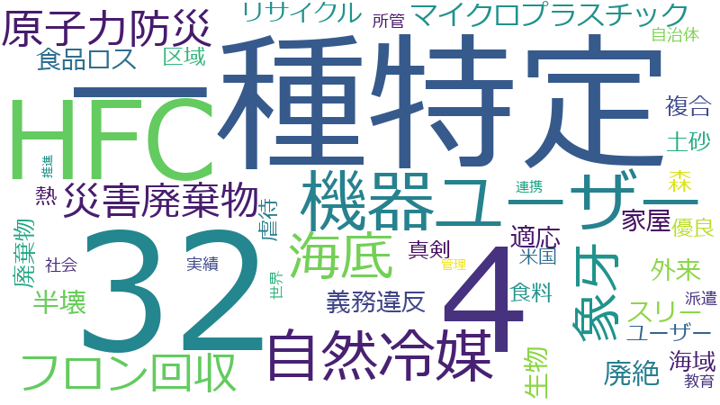

原田義昭

海底、社会、32、一種特定、森、生物、連携、区域、家屋、自治体、自然冷媒、半壊、原子力防災、外来、廃棄物、機器ユーザー、海域、災害廃棄物、真剣、米国、適応、食料、4、HFC、スリー、フロン回収、マイクロプラスチック、ユーザー、リサイクル、世界、優良、土砂、実績、廃絶、所管、推進、教育、派遣、熱、管理、義務違反、虐待、複合、象牙、食品ロス、CO2、FC、グリーン冷媒、ジオパーク、フロン、プラスチック、メーカー、リユース、中期、京都、体制、保全、処理、動物、原発、厳格、小笠原、座長、成長、抑制、書面、条例、注視、現地、生分解性プラスチック、産廃、産業動物、発表、策定、組織、経済、経験、被災自治体、解体、避難計画、0、10、15、ASEAN、IUCN、JCM、かい、まさこ、れき、アセスメント、サンプリング、タラ、ノア、プラス、ポスト、メカニズム、リサイクル業者、ルート、ワシントン、一般会計予算
32、一種特定、4、HFC、機器ユーザー、自然冷媒、海底、象牙、フロン回収、原子力防災、災害廃棄物、マイクロプラスチック、廃絶、生物、半壊、食品ロス、家屋、スリー、義務違反、適応、外来、リサイクル、森、廃棄物、海域、複合、土砂、真剣、優良、食料、熱、ユーザー、虐待、区域、米国、派遣、自治体、所管、実績、社会、教育、世界、連携、管理、推進
32
2019-05-28 account_balance
…な観点からこういうふうな扱いになっているんだろうと、こう思っているところであります。その上で、ＨＦＣを、Ｒ32を、やっぱり環境の政策からすると是非必要なことだと思っております。むしろ、ほかにも使われているＨＦＣ４０４Ａ…
…を減らしていかなきゃいけないわけでありますから、フロン排出量をですね、そういう意味で、規制緩和によってＨＦＣ32を増やしていくというばかりでなくて、私どもからすれば、むしろそれをどんどん使えというような観点からＲ32を進…
…ＦＣ32を増やしていくというばかりでなくて、私どもからすれば、むしろそれをどんどん使えというような観点からＲ32を進めていかなきゃいけないなと、こう思っておりますので、それが規制緩和という理解でもあり得ると思いますし、む…
…に大事なところでございまして、実はフロンの冷媒の技術的な開発という意味では、今御指摘のＨＦＣシリーズではこの32というのが一番いいわけであります。ですから、ほかのＨＦＣを依存するというのであれば、ぎりぎりまでＨＦＣ32に…
…の32というのが一番いいわけであります。ですから、ほかのＨＦＣを依存するというのであれば、ぎりぎりまでＨＦＣ32に収束すべきだなというふうに思うわけです。ただ、絶対量とか何とかの関係で今はまだまだ、ＣＯ２トンでいくと大き…
…の関係で今はまだまだ、ＣＯ２トンでいくと大きくはなっておりますけれども、そういう意味では、流れとしてはＨＦＣ32を増やすということは、これは増えていくということは望ましいことではないかと思っております。ただ、今最終的に…
…ではＨＦＣ４０４Ａというのは、これは実にそのＣＯ２の三千九百二十倍にもなると、こういうことであります。ＨＦＣ32でも六百七十五倍ということですから、いかにこのフロンを効率的に実効的に抑制することが大事かということを私は言…
…けでありまして、いずれにしましても、今のように、私どもは決して矛盾と考えておりません。まさに全体の中ではこの32をできるだけ増やしていくと。ただ、それでも十分でないということから、更なるやっぱりイノベーションを考えないか…
一種特定
2019-05-10 account_balance
…て重要な課題の一つであります。我が国においては、フロン類を冷媒として利用する業務用の冷凍空調機器である第一種特定製品について、その廃棄等に際してフロン類の回収を義務づけ、回収率の向上に取り組んでまいりましたが、法施行か…
…類の回収率を早急に向上させる必要がございます。本法律案は、こうした状況を踏まえ、関係者の相互連携により第一種特定製品の管理者の排出事業者責任を徹底し、地球温暖化対策計画に定める二〇二〇年度回収率五〇％の達成を始めとして…
…めの措置を講じようとするものでございます。次に、この法律案の内容の概要を御説明申し上げます。第一に、第一種特定製品に充填されているフロン類を回収せずに当該第一種特定製品の廃棄等を行った者に対し、直接罰を導入いたします…
…法律案の内容の概要を御説明申し上げます。第一に、第一種特定製品に充填されているフロン類を回収せずに当該第一種特定製品の廃棄等を行った者に対し、直接罰を導入いたします。第二に、建築物又は工作物の解体工事に際して元請工事…
…を行った者に対し、直接罰を導入いたします。第二に、建築物又は工作物の解体工事に際して元請工事業者が行う第一種特定製品の有無の確認及び書面での説明について、その書面の保存を義務づけます。第三に、第一種特定製品の廃棄等に…
…事業者が行う第一種特定製品の有無の確認及び書面での説明について、その書面の保存を義務づけます。第三に、第一種特定製品の廃棄等に際して、フロン類の回収を証明する書面を第一種特定製品の引取り等を行う事業者へ交付することを義…
…、その書面の保存を義務づけます。第三に、第一種特定製品の廃棄等に際して、フロン類の回収を証明する書面を第一種特定製品の引取り等を行う事業者へ交付することを義務づけるとともに、当該書面が交付されない第一種特定製品の引取り…
…する書面を第一種特定製品の引取り等を行う事業者へ交付することを義務づけるとともに、当該書面が交付されない第一種特定製品の引取り等を禁止することといたします。このほか、都道府県の立入検査権限等の拡充、関係者を含めた協議会…
2019-05-23 account_balance
…重要な課題の一つでございます。我が国においては、フロン類を冷媒として利用する業務用の冷凍空調機器である第一種特定製品について、その廃棄等に際してフロン類の回収を義務付け、回収率の向上に取り組んでまいりましたが、法施行か…
…類の回収率を早急に向上させる必要がございます。本法律案は、こうした状況を踏まえ、関係者の相互連携により第一種特定製品の管理者の排出事業者責任を徹底し、地球温暖化対策計画に定める二〇二〇年度回収率五〇％の達成を始めとして…
…ための措置を講じようとするものでございます。次に、この法律案の内容の概要を御説明いたします。第一に、第一種特定製品に充填されているフロン類を回収せずに当該第一種特定製品の廃棄等を行った者に直接罰を導入いたします。第…
…の法律案の内容の概要を御説明いたします。第一に、第一種特定製品に充填されているフロン類を回収せずに当該第一種特定製品の廃棄等を行った者に直接罰を導入いたします。第二に、建築物又は工作物の解体工事に際して元請工事業者が…
…廃棄等を行った者に直接罰を導入いたします。第二に、建築物又は工作物の解体工事に際して元請工事業者が行う第一種特定製品の有無の確認及び書面での説明について、その書面の保存を義務付けます。第三に、第一種特定製品の廃棄等に…
…事業者が行う第一種特定製品の有無の確認及び書面での説明について、その書面の保存を義務付けます。第三に、第一種特定製品の廃棄等に際して、フロン類の回収を証明する書面を第一種特定製品の引取り等を行う事業者へ交付することを義…
…、その書面の保存を義務付けます。第三に、第一種特定製品の廃棄等に際して、フロン類の回収を証明する書面を第一種特定製品の引取り等を行う事業者へ交付することを義務付けるとともに、当該書面が交付されない第一種特定製品の引取り…
…する書面を第一種特定製品の引取り等を行う事業者へ交付することを義務付けるとともに、当該書面が交付されない第一種特定製品の引取り等を禁止することといたします。このほか、都道府県の立入検査権限等の拡充、関係者を含めた協議会…
4
2019-05-28 account_balance
…を、Ｒ32を、やっぱり環境の政策からすると是非必要なことだと思っております。むしろ、ほかにも使われているＨＦＣ４０４Ａとか４１０Ａとか、ましてや業務用の施設に対する、使われているものをどんどん減らし、そのＣＯ２排出量を減…
…Ｒ32を、やっぱり環境の政策からすると是非必要なことだと思っております。むしろ、ほかにも使われているＨＦＣ４０４Ａとか４１０Ａとか、ましてや業務用の施設に対する、使われているものをどんどん減らし、そのＣＯ２排出量を減らし…
…、やっぱり環境の政策からすると是非必要なことだと思っております。むしろ、ほかにも使われているＨＦＣ４０４Ａとか４１０Ａとか、ましてや業務用の施設に対する、使われているものをどんどん減らし、そのＣＯ２排出量を減らしていかな…
…し、このフロン問題は、数字で言いますと、これは皆さんお分かりとは思いますけど、例えばこの業務用冷蔵庫ではＨＦＣ４０４Ａというのは、これは実にそのＣＯ２の三千九百二十倍にもなると、こういうことであります。ＨＦＣ32でも六百…
…このフロン問題は、数字で言いますと、これは皆さんお分かりとは思いますけど、例えばこの業務用冷蔵庫ではＨＦＣ４０４Ａというのは、これは実にそのＣＯ２の三千九百二十倍にもなると、こういうことであります。ＨＦＣ32でも六百七十…
HFC
2019-05-28 account_balance
…から、いろんな観点からこういうふうな扱いになっているんだろうと、こう思っているところであります。その上で、ＨＦＣを、Ｒ32を、やっぱり環境の政策からすると是非必要なことだと思っております。むしろ、ほかにも使われているＨ…
…ＦＣを、Ｒ32を、やっぱり環境の政策からすると是非必要なことだと思っております。むしろ、ほかにも使われているＨＦＣ４０４Ａとか４１０Ａとか、ましてや業務用の施設に対する、使われているものをどんどん減らし、そのＣＯ２排出量…
…排出量を減らしていかなきゃいけないわけでありますから、フロン排出量をですね、そういう意味で、規制緩和によってＨＦＣ32を増やしていくというばかりでなくて、私どもからすれば、むしろそれをどんどん使えというような観点からＲ3…
…これは非常に大事なところでございまして、実はフロンの冷媒の技術的な開発という意味では、今御指摘のＨＦＣシリーズではこの32というのが一番いいわけであります。ですから、ほかのＨＦＣを依存するというのであれば、ぎりぎりまでＨ…
…な開発という意味では、今御指摘のＨＦＣシリーズではこの32というのが一番いいわけであります。ですから、ほかのＨＦＣを依存するというのであれば、ぎりぎりまでＨＦＣ32に収束すべきだなというふうに思うわけです。ただ、絶対量と…
…ではこの32というのが一番いいわけであります。ですから、ほかのＨＦＣを依存するというのであれば、ぎりぎりまでＨＦＣ32に収束すべきだなというふうに思うわけです。ただ、絶対量とか何とかの関係で今はまだまだ、ＣＯ２トンでいく…
…何とかの関係で今はまだまだ、ＣＯ２トンでいくと大きくはなっておりますけれども、そういう意味では、流れとしてはＨＦＣ32を増やすということは、これは増えていくということは望ましいことではないかと思っております。ただ、今最…
…しかし、このフロン問題は、数字で言いますと、これは皆さんお分かりとは思いますけど、例えばこの業務用冷蔵庫ではＨＦＣ４０４Ａというのは、これは実にそのＣＯ２の三千九百二十倍にもなると、こういうことであります。ＨＦＣ32でも…
…冷蔵庫ではＨＦＣ４０４Ａというのは、これは実にそのＣＯ２の三千九百二十倍にもなると、こういうことであります。ＨＦＣ32でも六百七十五倍ということですから、いかにこのフロンを効率的に実効的に抑制することが大事かということを…
機器ユーザー
2019-05-17 account_balance
…ロン類の廃棄時回収率を早急に向上させる必要があると思っておるところであります。このため、本改正により、機器ユーザーの回収義務違反に対する直接罰、直罰の導入や、フロン未回収機器の引取りの禁止等の対策を講じることで、回収率…
…からこそが大事ではないか、こういうふうに思うわけでございます。本改正は、関係事業者の相互連携によって、機器ユーザーの義務違反によるフロン類の未回収を防止し、機器廃棄時にフロン類の回収作業が確実に行われる仕組みを構築しよ…
…廃棄時にフロン類の回収作業が確実に行われる仕組みを構築しようとするものでございます。法律の施行後には、機器ユーザーや関係事業者、団体、都道府県への着実な周知を行いまして、法改正の円滑な施行を図るとともに、二〇二〇年度、…
…再三説明しておりますように、今般の改正案は、機器ユーザーと廃棄物・リサイクル業者等の双方を罰則の対象としていることでございます。ユーザーの回収義務違反による未回収を防止して、機器廃棄時に冷媒回収作業が確実に行われる仕組み…
…違反による未回収を防止して、機器廃棄時に冷媒回収作業が確実に行われる仕組みを構築しようとしております。機器ユーザーの回収義務違反、廃棄物・リサイクル業者等の引取り禁止違反ともに、その罰則は五十万円以下の罰金となっており…
…本改正は、再三議論が進んでおりますけれども、機器ユーザーの回収義務違反に係る直罰の導入、解体現場への立入検査の対象範囲拡大等によりユーザーに対する指導監督の実効性を向上させること、さらには、ユーザーによるフロン回収が確認…
2019-05-28 account_balance
…類の廃棄時回収率を早急に向上させる必要がございます。そのため、本改正により、関係事業者の相互連携により機器ユーザーの義務違反によるフロン類の未回収を防止して、機器廃棄時にフロン類の回収作業が確実に行われる仕組みを構築し…
自然冷媒
2019-05-17 account_balance
…御指摘のとおり、自然冷媒機器をいかに普及するかというのは、これからの環境政策の中で、私ども当然重点的に努力しなきゃいけない、こう思っております。環境省におきましては、自然冷媒機器の普及を図るために平成二十六年度から補助…
…からの環境政策の中で、私ども当然重点的に努力しなきゃいけない、こう思っております。環境省におきましては、自然冷媒機器の普及を図るために平成二十六年度から補助事業を実施をしておりまして、これまで千八百五十件の省エネ型自然…
…冷媒機器の普及を図るために平成二十六年度から補助事業を実施をしておりまして、これまで千八百五十件の省エネ型自然冷媒機器が導入をされております。その成果もございまして、例えば冷凍冷蔵倉庫におけるフロン類使用機器との価格差は…
…ございます。本補助事業は、申請者の方々からの要望も踏まえた運用改善も可能な限り行ってきており、今後とも、自然冷媒機器に一定の需要を生み出すことで機器の低価格化を図り、自立的普及に向けたさらなる導入の推進と加速化を図って…
…摘のように、また各省間の調整も多少必要なようなお話を聞きましたので、その話をしっかり踏まえて、とにかくこの自然冷媒が一番やはり理想的な状況でございますので、私ども、しっかりその方向で取り組んでいきたい、こう思っております…
…きたい、こう考えているところであります。また、グリーン冷媒技術の輸出、普及に向けて、環境省では、省エネ型自然冷媒機器に対する導入補助事業により、自然冷媒機器に一定の需要を生み出すことで、将来的な自立的導入に向けた機器メ…
…また、グリーン冷媒技術の輸出、普及に向けて、環境省では、省エネ型自然冷媒機器に対する導入補助事業により、自然冷媒機器に一定の需要を生み出すことで、将来的な自立的導入に向けた機器メーカーによる低価格化を促進する、先ほど御…
2019-05-28 account_balance
…の発想を変えて、先ほど不連続な発想ということを言いましたけど、空気とかアンモニアとかＣＯ２とか、それ自体を自然冷媒として使うという方法はもう既に考えられているんですけど、ただ、そのコストの面やら何やらでそこまで至っていな…
海底
2019-03-19 account_balance
…。現在、我が国は、沿岸域を中心に約八・三％の海域に海洋保護区を設定しております。さらに、沖合の区域における海底の自然環境についても保全を図るため、排他的経済水域を含む沖合の区域について新たな海洋保護区制度を創設し、自然…
…の保全と海洋資源の利用とを両立させながら進めていく必要がございます。本法律案は、こうした状況を踏まえ、沖合海底自然環境保全地域の指定及び当該地域内における海底の形質を変更するおそれがある行為に対する許可制度の創設等の措…
…く必要がございます。本法律案は、こうした状況を踏まえ、沖合海底自然環境保全地域の指定及び当該地域内における海底の形質を変更するおそれがある行為に対する許可制度の創設等の措置を講じようとするものでございます。次に、本法…
…でございます。次に、本法律案の内容の概要を御説明いたします。第一に、環境大臣は、沖合の区域で、その区域の海底の地形若しくは地質又は海底における自然の現象に依存する特異な生態系を含む自然環境がすぐれた状態を維持している…
…律案の内容の概要を御説明いたします。第一に、環境大臣は、沖合の区域で、その区域の海底の地形若しくは地質又は海底における自然の現象に依存する特異な生態系を含む自然環境がすぐれた状態を維持していると認めるもののうち、自然的…
…自然的社会的条件から見てその区域における自然環境を保全することが特に必要なものを、所要の手続を経た上で、沖合海底自然環境保全地域として指定することができることとしております。第二に、沖合海底自然環境保全地域においては、…
…、所要の手続を経た上で、沖合海底自然環境保全地域として指定することができることとしております。第二に、沖合海底自然環境保全地域においては、鉱物の掘採、探査や海底の動植物の捕獲等に係る特定の行為を規制対象とし、特に保全を…
…して指定することができることとしております。第二に、沖合海底自然環境保全地域においては、鉱物の掘採、探査や海底の動植物の捕獲等に係る特定の行為を規制対象とし、特に保全を図るべき沖合海底特別地区では許可により、その他の区…
…地域においては、鉱物の掘採、探査や海底の動植物の捕獲等に係る特定の行為を規制対象とし、特に保全を図るべき沖合海底特別地区では許可により、その他の区域については届出制により規制することとしております。第三に、沖合海底自然…
…沖合海底特別地区では許可により、その他の区域については届出制により規制することとしております。第三に、沖合海底自然環境保全地域における自然環境の保全のため、環境大臣による報告徴収、立入検査及び中止命令等の必要な権限を規…
2019-04-16 account_balance
…す。現在、我が国は、沿岸域を中心に約八・三％の海域に海洋保護区を設定しています。さらに、沖合の区域における海底の自然環境についても保全を図るため、排他的経済水域を含む沖合の区域について新たな海洋保護区制度を創設し、自然…
…の保全と海洋資源の利用とを両立させながら進めていく必要がございます。本法律案は、こうした状況を踏まえ、沖合海底自然環境保全地域の指定及び当該地域内における海底の形質を変更するおそれがある行為に対する許可制度の創設等の措…
…く必要がございます。本法律案は、こうした状況を踏まえ、沖合海底自然環境保全地域の指定及び当該地域内における海底の形質を変更するおそれがある行為に対する許可制度の創設等の措置を講じようとするものでございます。次に、本法…
…ございます。次に、本法律案の内容の概要を御説明申し上げます。第一に、環境大臣は、沖合の区域で、その区域の海底の地形若しくは地質又は海底における自然の現象に依存する特異な生態系を含む自然環境が優れた状態を維持していると…
…案の内容の概要を御説明申し上げます。第一に、環境大臣は、沖合の区域で、その区域の海底の地形若しくは地質又は海底における自然の現象に依存する特異な生態系を含む自然環境が優れた状態を維持していると認めるもののうち、自然的社…
…然的社会的諸条件から見てその区域における自然環境を保全することが特に必要なものを、所要の手続を経た上で、沖合海底自然環境保全地域として指定することができることとしております。第二に、沖合海底自然環境保全地域においては、…
…、所要の手続を経た上で、沖合海底自然環境保全地域として指定することができることとしております。第二に、沖合海底自然環境保全地域においては、鉱物の掘採、探査や海底の動植物の捕獲等に係る特定の行為を規制対象とし、特に保全を…
…して指定することができることとしております。第二に、沖合海底自然環境保全地域においては、鉱物の掘採、探査や海底の動植物の捕獲等に係る特定の行為を規制対象とし、特に保全を図るべき沖合海底特別地区では許可制により、その他の…
…地域においては、鉱物の掘採、探査や海底の動植物の捕獲等に係る特定の行為を規制対象とし、特に保全を図るべき沖合海底特別地区では許可制により、その他の区域については届出制により規制することとしております。第三に、沖合海底自…
…合海底特別地区では許可制により、その他の区域については届出制により規制することとしております。第三に、沖合海底自然環境保全地域における自然環境の保全のため、環境大臣による報告徴収、立入検査及び中止命令等の必要な権限を規…
2019-04-23 account_balance
…。ただいま滝沢委員の非常に積極的な御意見、また御質問に対して、説明したとおりでございますけれども、この沖合海底自然環境保全地域の管理や取締りというのは、もう何といっても大事なことは、いかにそれを実効性あらしめるかという…
…海洋環境の保全を適切に進めるためには、申し上げましたように、海底地形や海流等の物理環境データ、生物の分布データといった科学的知見の充実が何よりも重要でございます。このため、環境省では、科学的調査に必要な予算や体制は確保で…
…等により適切に保全を図ってまいりましたけれども、沖合域については限定的な取組でございました。今回の法改正により沖合海底自然環境保全地域を指定することで自然環境の保全を一層進めてまいりたいと、こういうふうに考えております。…
…御指摘のように、表層、中層にもたくさんの生物がおるわけでありますけれども、沖合域の海底には特異な生態系や生物資源が存在しており、沖合海底自然環境保全地域におきましては、当該生態系等を保全するため、海底を攪乱するおそれのあ…
…層にもたくさんの生物がおるわけでありますけれども、沖合域の海底には特異な生態系や生物資源が存在しており、沖合海底自然環境保全地域におきましては、当該生態系等を保全するため、海底を攪乱するおそれのある行為を許可等の対象とす…
…は特異な生態系や生物資源が存在しており、沖合海底自然環境保全地域におきましては、当該生態系等を保全するため、海底を攪乱するおそれのある行為を許可等の対象とすることとしております。表層、中層の海洋生態系の保全については、…
…沖合海底自然環境保全地域は、自然的社会的条件から見てその区域における自然環境を保全することが特に必要なものを指定することとしております。この社会的条件として、漁業等の操業状況、資源掘採の可能性等を考慮することとしておりま…
…すし、また、科学的知見の充実を国の責務として規定を新設することとしております。これらを踏まえて、今般の沖合海底自然環境保全地域の制度が導入された暁には、同地域の情報収集や調査について、関係者と連携して万全の対策が取れる…
…うことの必要性が将来出てこないとも限らないわけでありますから、その場合には、資源開発、利用の観点からこの沖合海底自然環境保全の見直しをどうしても行わなきゃならぬ場合には、沖合域における自然環境保全の程度が全体としてしっか…
2019-04-02 account_balance
…すし、また、委員のお考えもお聞きしたところでありますが、今回、法改正によるこの指定というのは、あくまでも沖合海底の自然環境の保全を目的としたものというふうになっておりまして、その他の目的で指定を行うことは適当でないと考え…
…の中で最も深い海溝や、最も高密度に海山が分布している小笠原方面の沖合域を当面優先して検討していく予定であります。その後も、沖合海底の自然環境の保全の観点から、必要に応じ検討を進めていくということになると考えております。…
…沖合海底自然環境保全地域は、沖合域の自然環境の保全を図るために、我が国の管轄海域内において指定を行うものであります。一方、沖合域の生物多様性の保全について御審議いただいた中央環境審議会からの答申においては、「隣接する他…
…御指摘のように、専門的なレンジャー組織等までいくのが本当に大事だなとは一方で思いつつ、現在の沖合海底自然環境保全地域の管理や取締りは、関係省庁と十分緊密に連携して推進していくことでまずはその実効性を担保したい、これが大事…
象牙
2019-05-10 account_balance
…象牙の取扱いについては、国にとっても大事でありますし、また、世界の中でもしっかりとした評価を得なきゃいけない、こう思っております。国内で流通できる象牙製品というのはあくまでも合法的なものに限られていると私ども考えており…
…でありますし、また、世界の中でもしっかりとした評価を得なきゃいけない、こう思っております。国内で流通できる象牙製品というのはあくまでも合法的なものに限られていると私ども考えておりまして、合法的というのは、ワシントン条約…
…いると私ども考えておりまして、合法的というのは、ワシントン条約の適用前からもう既に流通していた、存在していた象牙についての取扱いということでありますけれども、あくまでも合法なものだけは国内で流通できているわけでありますけ…
…、一部のアフリカ諸国等から、今後開催予定のワシントン条約十八回締約国会議に向けて、我が国を含む全ての国の国内象牙市場の閉鎖を求める議題文書が提出されていることも理解しているところであります。日本としては、国内象牙取引を…
…の国内象牙市場の閉鎖を求める議題文書が提出されていることも理解しているところであります。日本としては、国内象牙取引を引き続き厳格に管理しながら、条約のもとで野生動植物の保全と持続可能な利用に貢献できるよう、関係機関と協…
フロン回収
2019-05-17 account_balance
…我が国のフロン回収・破壊システムは、回収量を正確に把握し公表するなど、世界的に誇ることのできる先進的なものであると認識をしているところであります。こうした知見を生かして、環境省では、今御指摘もいただきましたけれども、二…
…クレジット制度、ＪＣＭの仕組みを活用して、発展途上国における代替フロン等の回収・破壊の支援を通じて、世界にフロン回収の取組を普及させていきたい、こう考えているところであります。また、グリーン冷媒技術の輸出、普及に向けて…
…我が国のフロン回収、破壊、再生処理のシステムは、回収量を正確に把握し公表するなど、世界的に誇ることのできる先進的なものである、そういうふうに認識をしております。こうした知見を生かして、環境省では昨年度から、二国間クレジ…
…たところであります。今後も、こうした取組を通じまして、ひとり発展途上国相手ばかりではなくて、世界各国にもフロン回収、破壊、再生の仕組みを、経験者として、また先進的な技術者として進めていきたい、こういうふうに考えておりま…
…の立入検査の対象範囲拡大等によりユーザーに対する指導監督の実効性を向上させること、さらには、ユーザーによるフロン回収が確認できない機器を廃棄物・リサイクル業者等が引き取ることを禁止する、こういうことによって廃棄時回収率を…
原子力防災
2019-03-12 account_balance
…ろでございますので、私からはそれについてコメントを差し控えたい、こういうふうにまた思っております。ただ、原子力防災担当としては、稼働されようとそうでなかろうと、原子力燃料が、核燃料がそこにある限りは、そのための地域防災…
…先ほど申し上げましたように、原子力施設が動き始めたときに、万が一のことがないように、私も原子力防災担当としてはやるわけであります。あくまでも、エネルギー政策、原子力政策としては経済産業省が、そしてまた、その施設を稼働する…
…第百九十八回国会における参議院環境委員会の御審議に先立ち、環境大臣及び原子力防災を担当する内閣府特命担当大臣として所信を述べさせていただきます。昨年十月の着任以来、私は、環境政策によって環境、経済、社会の諸課題の同時解…
…なステージに向けた未来志向の取組についても推進してまいります。万が一の原子力発電所の事故に対応するための原子力防災については、原子力防災会議を中心に、関係省庁を挙げて、地方自治体の地域防災計画、避難計画の具体化、充実化…
…志向の取組についても推進してまいります。万が一の原子力発電所の事故に対応するための原子力防災については、原子力防災会議を中心に、関係省庁を挙げて、地方自治体の地域防災計画、避難計画の具体化、充実化への支援、要配慮者への…
…計画、避難計画の具体化、充実化への支援、要配慮者への対応や、避難の円滑化、防災資機材の整備等への財政支援、原子力防災業務に携わる人材の育成などにきめ細かく取り組んでまいります。原子力防災に対する備えに終わりや完璧はござ…
…、防災資機材の整備等への財政支援、原子力防災業務に携わる人材の育成などにきめ細かく取り組んでまいります。原子力防災に対する備えに終わりや完璧はございません。各地域での防災訓練等を通じて、地域防災計画、避難計画の継続的な…
…いて、引き続き、人と環境を守るという根源的な使命を果たすべく全力を尽くしてまいります。以上、環境大臣及び原子力防災担当の内閣府特命担当大臣として、当面の取組の一端を申し上げました。那谷屋委員長を始め、理事、委員各位に…
…として、当面の取組の一端を申し上げました。那谷屋委員長を始め、理事、委員各位におかれましては、今後とも、環境行政及び原子力防災の一層の推進のため、御支援、御指導を賜りますようお願い申し上げます。ありがとうございます。…
2019-03-08 account_balance
…。どうぞよろしくお願いいたします。第百九十八回国会における衆議院環境委員会の御審議に先立ち、環境大臣及び原子力防災を担当する内閣府特命担当大臣として所信を述べさせていただきます。昨年十月の着任以来、私は、環境政策によ…
…なステージに向けた未来志向の取組についても推進してまいります。万が一の原子力発電所の事故に対応するための原子力防災については、原子力防災会議を中心に、関係省庁を挙げて、地方自治体の地域防災計画、避難計画の具体化、充実化…
…志向の取組についても推進してまいります。万が一の原子力発電所の事故に対応するための原子力防災については、原子力防災会議を中心に、関係省庁を挙げて、地方自治体の地域防災計画、避難計画の具体化、充実化への支援、要配慮者への…
…災計画、避難計画の具体化、充実化への支援、要配慮者への対応、避難の円滑化、防災資機材の整備等への財政支援、原子力防災業務にかかわる人材の育成などにきめ細かく取り組んでまいります。原子力災害に対する備えに終わりや完璧はご…
…き、人と環境を守るという根本的な使命を果たすべく、全力を尽くしてまいりたいと思います。以上、環境大臣及び原子力防災担当の内閣府特命担当大臣として、当面の取組の一端を申し上げました。秋葉委員長を始め理事、委員各位におか…
…、当面の取組の一端を申し上げました。秋葉委員長を始め理事、委員各位におかれましては、今後とも、環境行政及び原子力防災の一層の推進のため、御支援、御指導を賜りますようお願いを申し上げます。ありがとうございます。（拍手）…
2019-03-14 account_balance
…る避難行動を実施するということとしているところであります。複合災害が発生した際にも的確に対応できるよう、今後とも、国がしっかり関与しながら、関係自治体とともに原子力防災体制の充実強化に努めてまいりたいと思っております。…
災害廃棄物
2019-02-27 account_balance
…いても適切に実施をしてまいります。循環型社会を実現するための取組としては、循環経済への移行に向けた取組、災害廃棄物処理体制の構築、一般廃棄物処理施設や浄化槽の整備などを進めるとともに、環境インフラの海外展開を図るための…
…御指摘のとおり、災害が起これば、おびただしい量の災害廃棄物、実はこの分野は私ども環境省が主として所管をしているところであります。一昨年になりますけれども、平成二十九年七月に九州北部豪雨ということで、これは私の地元でもご…
…れども、発災翌日から環境省現地支援チームが派遣されまして、被災自治体における被災状況の確認、仮置場の確保、災害廃棄物の分別等に係る支援が実施されたところであります。本災害では、大量の土砂、流木の処理が課題となり、また、…
…んど逃げられない事実でございます。こういうことを前提として、環境省としては、これまでに発生した災害における災害廃棄物処理に係る知見や教訓、これらを踏まえながら、今後の災害に備えた支援体制の強化を図ってまいりたい、こう思っ…
…体制の強化を図ってまいりたい、こう思っております。人的には、環境省職員、相当経験した者も出てきましたし、災害廃棄物処理支援ネットワーク、Ｄウエーストネットというのを既に専門家を集めて組織しておりまして、彼らを現地に派遣…
…私ども環境省が主として対応しておるところでございます。災害の規模、例えば激甚かどうかにかかわらず、発生した災害廃棄物については、私どもが当然のことながら対応せないかぬな、こう思っておるところでございます。発災直後から、…
2019-03-08 account_balance
…踏まえつつ、循環経済への移行に向けた行動を官民連携して拡大してまいります。加えて、大規模災害に備えた万全な災害廃棄物処理体制の構築、一般廃棄物処理施設の更新需要への対応、浄化槽整備の推進による汚水処理リノベーション等を進…
2019-03-12 account_balance
…踏まえつつ、循環経済への移行に向けた行動を官民連携して拡大してまいります。加えて、大規模災害に備えた万全な災害廃棄物処理体制の構築、一般廃棄物処理施設の更新需要への対応、浄化槽整備の推進による汚水処理リノベーション等を進…
マイクロプラスチック
2019-05-10 account_balance
…場から処理していかなきゃいけないということを改めてまた考えたところであります。その上で、ただいまのマイクロプラスチックについての研究の必要性というのはおっしゃるとおりであると思っております。マイクロプラスチックに関する…
…だいまのマイクロプラスチックについての研究の必要性というのはおっしゃるとおりであると思っております。マイクロプラスチックに関する知見の集積のため、我が国も積極的に関与していくことが重要だと認識しております。環境省では、…
…に関する知見の集積のため、我が国も積極的に関与していくことが重要だと認識しております。環境省では、マイクロプラスチックの影響や海域における分布状況に関するさまざまな調査研究を進めるとともに、世界的なマイクロプラスチック…
…マイクロプラスチックの影響や海域における分布状況に関するさまざまな調査研究を進めるとともに、世界的なマイクロプラスチックの実態把握を図るために、モニタリング手法の国際的な調和の取組を進めているところであります。こうした…
…歓迎してもらうと同時に、コミュニケにおいてもしっかり言及されたところであります。このように、今後とも、国内外の関係機関と連携しつつ、マイクロプラスチックに関する取組をリードしてまいりたい、こういうふうに考えております。…
2019-05-23 account_balance
…様々技術的な観点からこの問題をしっかり対応しなきゃいけないと思っております。とりわけマイクロプラスチックは、大きなプラスチック用材と違いまして目に見えない部分で海より深く溶け込みまして、生態系に本当に深刻な影響を与えつ…
廃絶
2019-05-17 account_balance
…ただいま御答弁もあったとおり、確かに、中長期的には、フロン類の廃絶については、現行のフロン法上の指針でもしかりでありますし、政策としてもそれを目指さなければいけない、こう考えております。具体的な廃絶の時期については、現…
…ン法上の指針でもしかりでありますし、政策としてもそれを目指さなければいけない、こう考えております。具体的な廃絶の時期については、現時点ではエアコン等の分野で代替となるグリーン冷媒技術が確立されていない段階で、必ずしもお…
…お示しすることが難しい状態でありますけれども、代替できる技術が確立できた場合には、可能な限り早期のフロン類の廃絶を目指すということを考えておるところであります。政府としては、引き続きグリーン冷媒技術の開発及び普及に取り…
…能な限り早期のフロン類の廃絶を目指すということを考えておるところであります。政府としては、引き続きグリーン冷媒技術の開発及び普及に取り組みながら、中長期的にフロン類を廃絶できるように努めていきたい、こう考えております。…
…政府におきまして検討中の長期戦略案では、フロン類対策について、段階的な削減を着実に進め、中長期的なフロン類の廃絶を目指すということとしております。また、脱炭素に向けても、今世紀後半のできるだけ早い段階で脱炭素社会をつくり…
2019-05-28 account_balance
…はそんなに遠くない時期にこのこともお示しできると、こう思っておるところであります。政府としては、引き続きグリーン冷媒技術の開発及び普及に取り組み、中長期的にフロン類を廃絶できるよう努めてまいりたい、こう思っております。…
生物
2019-02-27 account_balance
…の整備などを進めるとともに、環境インフラの海外展開を図るための技術、制度の発信、普及を推進してまいります。生物多様性の保全については、愛知目標達成のための取組を加速化させるなど、国立公園や世界自然遺産などの保護と適正な…
…我が国の生態系等に被害を及ぼす生物に対しては、外来生物法という法律に基づきまして、今御指摘の特定外来生物に指定して、飼い方、栽培、輸入等を規制しているところであります。特定外来生物のうち、生物多様性保全上優先度の高い地域…
…我が国の生態系等に被害を及ぼす生物に対しては、外来生物法という法律に基づきまして、今御指摘の特定外来生物に指定して、飼い方、栽培、輸入等を規制しているところであります。特定外来生物のうち、生物多様性保全上優先度の高い地域…
…我が国の生態系等に被害を及ぼす生物に対しては、外来生物法という法律に基づきまして、今御指摘の特定外来生物に指定して、飼い方、栽培、輸入等を規制しているところであります。特定外来生物のうち、生物多様性保全上優先度の高い地域…
…基づきまして、今御指摘の特定外来生物に指定して、飼い方、栽培、輸入等を規制しているところであります。特定外来生物のうち、生物多様性保全上優先度の高い地域や外来種に影響を及ぼす生物に対しては、国が積極的に防除体制をとってい…
…、今御指摘の特定外来生物に指定して、飼い方、栽培、輸入等を規制しているところであります。特定外来生物のうち、生物多様性保全上優先度の高い地域や外来種に影響を及ぼす生物に対しては、国が積極的に防除体制をとっているところでご…
…等を規制しているところであります。特定外来生物のうち、生物多様性保全上優先度の高い地域や外来種に影響を及ぼす生物に対しては、国が積極的に防除体制をとっているところでございます。また、カミツキガメやアライグマ等、既に広域…
…極的に防除体制をとっているところでございます。また、カミツキガメやアライグマ等、既に広域に分布している外来生物については、防除マニュアルの作成、配布等の技術的支援や、防除費用の財政的支援など、地域の取組をサポートしてい…
…技術的支援や、防除費用の財政的支援など、地域の取組をサポートしているところであります。加えて、さらなる外来生物の侵入を防止するため、関係機関や事業者等に協力を呼びかけるほか、外来種のペットの管理の徹底についても、広く国…
…、外来種のペットの管理の徹底についても、広く国民の方々に向けた普及啓発に取り組んでいるところでございます。外来生物への対応については、関係者と連携して、引き続きしっかりと対応していきたい、こういうふうに思っております。…
2019-04-23 account_balance
…応じて責任を持って行っているところであります。環境省としては、各保護区の指定、管理が全体として保護区における生物多様性の確保につながるように、関係省庁との一層の連携に積極的に取り組んでまいります。また、二〇二〇年、来年…
…庁との一層の連携に積極的に取り組んでまいります。また、二〇二〇年、来年でありますけれども、中国で開催される生物多様性条約、いわゆるＣＯＰ15では、新たな生物多様性の世界目標、ポスト二〇二〇目標が採択される予定でございま…
…。また、二〇二〇年、来年でありますけれども、中国で開催される生物多様性条約、いわゆるＣＯＰ15では、新たな生物多様性の世界目標、ポスト二〇二〇目標が採択される予定でございます。その結果も踏まえ、生物多様性に関する政府の…
…ＯＰ15では、新たな生物多様性の世界目標、ポスト二〇二〇目標が採択される予定でございます。その結果も踏まえ、生物多様性に関する政府の基本計画の改定を行うに当たっても、海洋保護区に係る各省庁間の連携をより明確に位置付けてい…
…海洋環境の保全を適切に進めるためには、申し上げましたように、海底地形や海流等の物理環境データ、生物の分布データといった科学的知見の充実が何よりも重要でございます。このため、環境省では、科学的調査に必要な予算や体制は確保で…
…今回の改正は、沖合域を対象にした、新たに生物多様性保全の仕組みを創設するものでございます。これにより環境省は、陸域、沿岸域から沖合域に至るまで、生物多様性の保全について総合的に取り組めるようになります。豊かな生物多様性…
…たに生物多様性保全の仕組みを創設するものでございます。これにより環境省は、陸域、沿岸域から沖合域に至るまで、生物多様性の保全について総合的に取り組めるようになります。豊かな生物多様性は、全ての生命が存立する基盤として暮…
…境省は、陸域、沿岸域から沖合域に至るまで、生物多様性の保全について総合的に取り組めるようになります。豊かな生物多様性は、全ての生命が存立する基盤として暮らしの安全、安心を支えるものであり、世代を超えて受け渡していくこと…
…とが重要だと考えております。世界的に見ても多様性に富んだ我が国の自然環境を次世代に受け渡していくため、子供たちに対する環境教育を促進し、生物多様性の保全と持続可能な利用を担う人材の育成に努めてまいりたいと考えております。…
…〇一〇年でありますけど、翌年の二〇一一年度から様々な科学的情報や専門家からの意見を踏まえていわゆる重要海域、生物多様性の観点から重要度の高い海域を抽出いたしまして、二〇一六年に公表したところであります。その後、沖合域に適…
…どのような地域が海洋保護区に当たるかというのは、生物多様性条約ＣＯＰ７、締約国会議における海洋保護区の定義や、同会議で活用を促す決議がなされたＩＵＣＮのガイドラインに沿って整理をされているところであります。具体的には、我…
…Ｎのガイドラインに沿って整理をされているところであります。具体的には、我が国は、自然景観の保護、自然環境又は生物生息・生育場の保護、水産生物の保護、様々な目的をそれぞれの法律に基づいて整理をしているところ、海洋保護区とし…
…をされているところであります。具体的には、我が国は、自然景観の保護、自然環境又は生物生息・生育場の保護、水産生物の保護、様々な目的をそれぞれの法律に基づいて整理をしているところ、海洋保護区として位置付けているところでござ…
…御指摘のように、表層、中層にもたくさんの生物がおるわけでありますけれども、沖合域の海底には特異な生態系や生物資源が存在しており、沖合海底自然環境保全地域におきましては、当該生態系等を保全するため、海底を攪乱するおそれのあ…
…御指摘のように、表層、中層にもたくさんの生物がおるわけでありますけれども、沖合域の海底には特異な生態系や生物資源が存在しており、沖合海底自然環境保全地域におきましては、当該生態系等を保全するため、海底を攪乱するおそれのあ…
2019-04-02 account_balance
…環境省としては、生物多様性の世界目標である愛知目標の達成年、二〇二〇年に向けて、沖合域への海洋保護区の設定等を通じ、取組を進めていく所存でございます。また、二〇二〇年に、来年でありますけれども、中国で開催される生物多様…
…定等を通じ、取組を進めていく所存でございます。また、二〇二〇年に、来年でありますけれども、中国で開催される生物多様性条約第十五回会合、ＣＯＰ15では、現在の生物多様性の世界目標である愛知目標に続く新たな世界目標、ポスト…
…た、二〇二〇年に、来年でありますけれども、中国で開催される生物多様性条約第十五回会合、ＣＯＰ15では、現在の生物多様性の世界目標である愛知目標に続く新たな世界目標、ポスト二〇二〇目標が採択される予定でございます。我が国…
…献していきたい、こう考えております。加えて、ポスト二〇二〇目標の議論や、今年度から実施しております我が国の生物多様性総合評価の結果等を参考に、生物多様性国家戦略の改定に向けた検討もしっかりと進めていく所存でございます。…
…献していきたい、こう考えております。加えて、ポスト二〇二〇目標の議論や、今年度から実施しております我が国の生物多様性総合評価の結果等を参考に、生物多様性国家戦略の改定に向けた検討もしっかりと進めていく所存でございます。…
…は、沖合域の自然環境の保全を図るために、我が国の管轄海域内において指定を行うものであります。一方、沖合域の生物多様性の保全について御審議いただいた中央環境審議会からの答申においては、「隣接する他国の海洋保護区との連携・…
…性を担保したい、これが大事ではないかと思っております。環境省の組織体制の中では、今月一日付で環境本省の海洋生物多様性担当ポストの設置をしたところであります。法の運用に当たっては、関係省庁との連携をより密接に行い、必要…
…世代に引き継いでいくことこそが大事なことであると認識しております。今回の改正は、海洋沖合域を対象に、新たに生物多様性保全の仕組みを創設して、自然環境全体を幅広く保全できるようにするものであります。それぞれの自然環境の…
…日本の管轄海域には三万種以上の生物が生息しておりまして、そのうち約二千種が固有種である、こういうふうなことを言われております。生物の多様性が非常に高い場所となっております。沖合域には海山、熱水噴出域、海溝等があり、地形…
…三万種以上の生物が生息しておりまして、そのうち約二千種が固有種である、こういうふうなことを言われております。生物の多様性が非常に高い場所となっております。沖合域には海山、熱水噴出域、海溝等があり、地形、地質や自然の現象…
…す。水深数千メートルの水圧にも耐えられる種や、光合成によらず必要な栄養を生成する種など、独特の生態を有する多様な生物種が確認されておりまして、深海の生物資源の活用可能性は極めて大きいものと考えられているところであります。…
…す。水深数千メートルの水圧にも耐えられる種や、光合成によらず必要な栄養を生成する種など、独特の生態を有する多様な生物種が確認されておりまして、深海の生物資源の活用可能性は極めて大きいものと考えられているところであります。…
…二〇一〇年に開催された生物多様性条約第十回締約国会議、ＣＯＰ10で、愛知目標、日本の名前のついた目標が設定されたところであります。国際的に保護区の設定が限定的だった当時の状況も踏まえて、海洋保護区の拡大に向けた当面の目標…
2019-05-17 account_balance
…ゲノム編集により得られた生物のうち、カルタヘナ法の規制対象とされた生物を利用する場合には、専門家の意見、パブリックコメント等を実施した上で、生物多様性の影響が生ずるおそれがないと認められる必要があると私も考えております。…
…ゲノム編集により得られた生物のうち、カルタヘナ法の規制対象とされた生物を利用する場合には、専門家の意見、パブリックコメント等を実施した上で、生物多様性の影響が生ずるおそれがないと認められる必要があると私も考えております。…
…ち、カルタヘナ法の規制対象とされた生物を利用する場合には、専門家の意見、パブリックコメント等を実施した上で、生物多様性の影響が生ずるおそれがないと認められる必要があると私も考えております。一方、カルタヘナ法の規制対象外…
…影響が生ずるおそれがないと認められる必要があると私も考えております。一方、カルタヘナ法の規制対象外とされた生物についても、使用者等に対し、あらかじめ生物多様性への影響の可能性等について情報提供を求めることとしております…
…あると私も考えております。一方、カルタヘナ法の規制対象外とされた生物についても、使用者等に対し、あらかじめ生物多様性への影響の可能性等について情報提供を求めることとしております。使用者等へ広く周知することによって、より…
…は、新技術の影響に対する国民の理解を深めるために、一定の情報を年度ごとにウエブサイト等で掲載することとしております。私ども、立場上、生物多様性への影響についてはしっかり監視をしていかなきゃいけない、こう思っております。…
2019-03-19 account_balance
…広大な管轄海域を有する海洋国家であり、沖合の区域には、海山、熱水噴出域、海溝等の多様な地形等に特異な生態系や生物資源が存在をしております。海洋環境の保全は国際的な潮流となっており、我が国が主導した生物多様性条約に係る愛…
…等に特異な生態系や生物資源が存在をしております。海洋環境の保全は国際的な潮流となっており、我が国が主導した生物多様性条約に係る愛知目標等の国際目標を踏まえ、主要国でも海洋保護区の設定が加速しているところでございます。…
2019-04-16 account_balance
…広大な管轄海域を有する海洋国家であり、沖合の区域には、海山、熱水噴出域、海溝等の多様な地形等に特異な生態系や生物資源が存在をしております。海洋環境の保全は国際的な潮流となっており、我が国が主導した生物多様性条約に係る愛…
…等に特異な生態系や生物資源が存在をしております。海洋環境の保全は国際的な潮流となっており、我が国が主導した生物多様性条約に係る愛知目標等の国際目標を踏まえ、主要国でも海洋保護区の設定が加速しているところでございます。…
2019-05-23 account_balance
…生物多様性は、食料や水の供給、気候の安定など、人間の生活を支える様々な恵みをもたらすものでございます。そして、生物多様性を構成する生物種は絶滅すると取り戻すことが不可能となる、そういう大事なものでございます。今月、フラ…
…物多様性は、食料や水の供給、気候の安定など、人間の生活を支える様々な恵みをもたらすものでございます。そして、生物多様性を構成する生物種は絶滅すると取り戻すことが不可能となる、そういう大事なものでございます。今月、フラン…
…の供給、気候の安定など、人間の生活を支える様々な恵みをもたらすものでございます。そして、生物多様性を構成する生物種は絶滅すると取り戻すことが不可能となる、そういう大事なものでございます。今月、フランスのメッスで開催され…
…、Ｇ７環境大臣会合では、自然や自然がもたらす恵みが大きく劣化してきているということがＩＰＢＥＳから報告され、生物多様性保全の取組を強化していくことを内容とする憲章、生物多様性憲章が採択されたところであります。本採択も踏ま…
…劣化してきているということがＩＰＢＥＳから報告され、生物多様性保全の取組を強化していくことを内容とする憲章、生物多様性憲章が採択されたところであります。本採択も踏まえまして、愛知目標の下での生物多様性保全の取組を引き続き…
…いくことを内容とする憲章、生物多様性憲章が採択されたところであります。本採択も踏まえまして、愛知目標の下での生物多様性保全の取組を引き続き進めるとともに、この取組を更に継続、発展するよう、ポスト二〇二〇目標の議論にも積極…
半壊
2019-02-06 account_balance
…棄物処理事業費補助金という制度を運営しているところであります。ただ、今議員がおっしゃったように、実は全壊と半壊は多少扱いが違うわけでありまして、全壊は、元々、もう明らかに廃棄物と観念できるというような観点から、家屋の解…
…それが廃棄物となってからの廃棄物の運搬、処理、これまでを私どもこの補助金の中で対応しておるところであります。半壊は、これはまだ財産価値があるのと、むしろそれは修復途上であるということから、この対象とは今のところなっており…
…。ただ、阪神・淡路大震災とか東日本大震災、極めて規模の大きいときには、被害も甚大で家屋の被害も多数に上り、半壊家屋の解体の遅れが被災地の復旧復興の大幅な遅れにつながるという観点から、やや例外的に、その場合、半壊でも処理…
…に上り、半壊家屋の解体の遅れが被災地の復旧復興の大幅な遅れにつながるという観点から、やや例外的に、その場合、半壊でも処理をしておったというのが状況でございます。今回の長谷川議員の、北海道胆振東部地震においては、半壊家屋…
…合、半壊でも処理をしておったというのが状況でございます。今回の長谷川議員の、北海道胆振東部地震においては、半壊家屋等の解体費用については、市町村の自主的な判断で半壊家屋を解体した場合に、これを支援するための、発生する廃…
…。今回の長谷川議員の、北海道胆振東部地震においては、半壊家屋等の解体費用については、市町村の自主的な判断で半壊家屋を解体した場合に、これを支援するための、発生する廃材の運搬、処理費用については本補助金の対象とすると、こ…
食品ロス
2019-03-14 account_balance
…ただいまの食品ロスの問題は本当に極めて大事な問題でありまして、何としてもこれは国挙げて取り組まなきゃいけない問題であろうと思っております。資源循環の問題、そして食べ物を大事にする心を育てるという意味では政策としてもしっか…
…なきゃいけない、こういうふうに思っております。二〇一五年に国連において採択されましたＳＤＧｓにおいては、食品ロスの削減がターゲットの一つとして掲げられております。我が国でも、昨年六月に閣議決定されました第四次循環型社会…
…られております。我が国でも、昨年六月に閣議決定されました第四次循環型社会形成推進基本計画において、家庭系の食品ロスを二〇三〇年までに二〇〇〇年度比で半減するとの目標が掲げられました。また、事業系の食品ロスについては、食品…
…おいて、家庭系の食品ロスを二〇三〇年までに二〇〇〇年度比で半減するとの目標が掲げられました。また、事業系の食品ロスについては、食品リサイクル法基本方針の改定版において二〇三〇年までに二〇〇〇年度比で半減するとの目標を盛り…
…これらの目標を踏まえて、関係省庁によるノーフードロス・プロジェクトの下、環境省においては、自治体における食品ロス削減に係る計画策定や普及啓発の支援などや、食品ロス削減全国大会の開催等を通じた普及啓発の推進などによって、…
…ロス・プロジェクトの下、環境省においては、自治体における食品ロス削減に係る計画策定や普及啓発の支援などや、食品ロス削減全国大会の開催等を通じた普及啓発の推進などによって、何としても食品ロスを削減したいと、こういうふうに思…
…計画策定や普及啓発の支援などや、食品ロス削減全国大会の開催等を通じた普及啓発の推進などによって、何としても食品ロスを削減したいと、こういうふうに思っているところであります。近年、三〇一〇という運動が少し普及してきたとこ…
2019-05-23 account_balance
…ただいま竹谷委員がほとんど余すところなくお話しいただいたと思っております。食品ロスは、言うまでもありませんけど、本当に資源循環や貧困の問題につながる世界的な課題であります。今回のＧ20、アジア大会では、世界各国から指導…
…日本のこの問題に対する取組をしっかりまたお見せしなきゃいけないなと。具体的には、出席者数を厳密に把握して食品ロスの発生を最小限とする料理等の提供を会場へ申し出るということ、立食ビュッフェを避けて食品ロスが発生しにくい着…
…を厳密に把握して食品ロスの発生を最小限とする料理等の提供を会場へ申し出るということ、立食ビュッフェを避けて食品ロスが発生しにくい着座によるレセプションとするということ、食品ロス削減への御協力を求める掲示をレセプション会場…
…へ申し出るということ、立食ビュッフェを避けて食品ロスが発生しにくい着座によるレセプションとするということ、食品ロス削減への御協力を求める掲示をレセプション会場で行うということ、こういう細かいところまで気を遣って努力をした…
…会場で行うということ、こういう細かいところまで気を遣って努力をしたいなと、こう思っております。実は、この食品ロスにつきましては、私もその担当大臣としてしっかりまたこれは努力しなきゃいけないと思っておりますし、また、よく…
…ンジーさんの言葉であります。一八六九年に生まれて一九四八年、昭和二十三年までおられた方でありますけど、私も食品ロスの担当大臣としてこの言葉を拳々常に服膺しながら、しっかりまた国民の皆さんに訴えなきゃいけないと思っておりま…
家屋
2019-02-06 account_balance
…まずは、この度の北海道の大地震の際にたくさんの家屋が崩壊したということを私どもしっかり踏まえなきゃいけないと思っております。ただいま、私ども環境省としては、これらの廃棄物、家屋廃棄物ですね、そういう観点から、災害等廃棄…
…ことを私どもしっかり踏まえなきゃいけないと思っております。ただいま、私ども環境省としては、これらの廃棄物、家屋廃棄物ですね、そういう観点から、災害等廃棄物処理事業費補助金という制度を運営しているところであります。ただ…
…壊と半壊は多少扱いが違うわけでありまして、全壊は、元々、もう明らかに廃棄物と観念できるというような観点から、家屋の解体から、またそれが廃棄物となってからの廃棄物の運搬、処理、これまでを私どもこの補助金の中で対応しておると…
…のところなっておりません。ただ、阪神・淡路大震災とか東日本大震災、極めて規模の大きいときには、被害も甚大で家屋の被害も多数に上り、半壊家屋の解体の遅れが被災地の復旧復興の大幅な遅れにつながるという観点から、やや例外的に…
…ただ、阪神・淡路大震災とか東日本大震災、極めて規模の大きいときには、被害も甚大で家屋の被害も多数に上り、半壊家屋の解体の遅れが被災地の復旧復興の大幅な遅れにつながるという観点から、やや例外的に、その場合、半壊でも処理をし…
…半壊でも処理をしておったというのが状況でございます。今回の長谷川議員の、北海道胆振東部地震においては、半壊家屋等の解体費用については、市町村の自主的な判断で半壊家屋を解体した場合に、これを支援するための、発生する廃材の…
…今回の長谷川議員の、北海道胆振東部地震においては、半壊家屋等の解体費用については、市町村の自主的な判断で半壊家屋を解体した場合に、これを支援するための、発生する廃材の運搬、処理費用については本補助金の対象とすると、こうい…
2019-02-27 account_balance
…入や指定廃棄物等の処理等を安全かつ着実に進めるとともに、帰還困難区域について、特定復興再生拠点区域内における家屋等の解体、除染を着実に実施してまいります。また、住民の方々の健康管理、リスクコミュニケーションについても適切…
2019-03-08 account_balance
…ても、引き続き、安全かつ着実に取組を進めてまいります。帰還困難区域については、特定復興再生拠点区域内における家屋等の解体、除染を着実に実施してまいります。加えて、放射線健康管理、リスクコミュニケーションの実施や正確な情…
2019-03-12 account_balance
…いても、引き続き安全かつ着実に取組を進めてまいります。帰還困難区域については、特定復興再生拠点区域内における家屋等の解体、除染を着実に実施してまいります。加えて、放射線健康管理、リスクコミュニケーションの実施や正確な情…
2019-03-14 account_balance
…でございます。引き続き、中間貯蔵施設事業や仮置場等の原状回復、指定廃棄物等の処理、特定復興再生拠点区域での家屋等の解体、除染等、たくさんの課題がこれから残っておるところでございます。さらに、一方では、福島再生・未来志…
スリー
2019-03-12 account_balance
…的な検討を行っておるところであります。これは、どの物質、何の素材についてもしかりでありますけれども、まずはスリーＲ、まずつくる段階、さらにリユース、そしてリサイクルという、このサイクルを我々しっかりまた守っていくことが…
…ラスチックの問題、特にこれが適用するのではないかと思っております。今委員おっしゃるように、ただ、一番大事なスリーＲのところを少し忘れて、最後は燃やせばいい、熱回収という形をとればいいというのは、必ずしも正しい方策ではな…
…は燃やせばいい、熱回収という形をとればいいというのは、必ずしも正しい方策ではないと私どもも考えておりまして、スリーＲの優先順位をしっかりまた守りながら、どうしても難しい場合、熱回収を行うということを改めて確認しなきゃいけ…
…いて検討中のプラスチック資源循環戦略の中にはしっかりそのことを取り込んでいるところでございます。あくまでもスリーＲを徹底し、かつ、どうしてもできないものについては熱回収というような形になろうかと思いますけれども、バイオ…
…今局長からも申し上げましたように、スリーＲのまず優先順位をしっかり踏まえて、リデュース、リユース、リサイクル、これを徹底したいのですが、どうしても難しい場合には熱回収を行うということとしておるところであります。プラスチ…
2019-05-10 account_balance
…動物実験に関するスリーＲというのは、私も改めて議員から教えていただいたところであります。まずはリプレースメント、リダクション、そしてリファインメント、本当にこれは、とうとい基準がどういうふうに実用されているかということは…
…ント、本当にこれは、とうとい基準がどういうふうに実用されているかということは大切なことだと思っております。スリーＲの考え方が浸透していくように、関係省庁と連携しつつ、また、国際的な動きも踏まえながらしっかり普及啓発を進…
義務違反
2019-05-17 account_balance
…収率を早急に向上させる必要があると思っておるところであります。このため、本改正により、機器ユーザーの回収義務違反に対する直接罰、直罰の導入や、フロン未回収機器の引取りの禁止等の対策を講じることで、回収率を更に向上させる…
…事ではないか、こういうふうに思うわけでございます。本改正は、関係事業者の相互連携によって、機器ユーザーの義務違反によるフロン類の未回収を防止し、機器廃棄時にフロン類の回収作業が確実に行われる仕組みを構築しようとするもの…
…正案は、機器ユーザーと廃棄物・リサイクル業者等の双方を罰則の対象としていることでございます。ユーザーの回収義務違反による未回収を防止して、機器廃棄時に冷媒回収作業が確実に行われる仕組みを構築しようとしております。機器ユ…
…を防止して、機器廃棄時に冷媒回収作業が確実に行われる仕組みを構築しようとしております。機器ユーザーの回収義務違反、廃棄物・リサイクル業者等の引取り禁止違反ともに、その罰則は五十万円以下の罰金となっております。ただ、安い…
…本改正は、再三議論が進んでおりますけれども、機器ユーザーの回収義務違反に係る直罰の導入、解体現場への立入検査の対象範囲拡大等によりユーザーに対する指導監督の実効性を向上させること、さらには、ユーザーによるフロン回収が確認…
2019-05-28 account_balance
…収率を早急に向上させる必要がございます。そのため、本改正により、関係事業者の相互連携により機器ユーザーの義務違反によるフロン類の未回収を防止して、機器廃棄時にフロン類の回収作業が確実に行われる仕組みを構築したところであ…
適応
2019-03-12 account_balance
…気候変動適応法の施行に先立ち、昨年十一月末には、適応に関する施策の総合的かつ計画的な推進を図るための気候変動適応計画を閣議決定したところでございます。また、法施行直後の昨年十二月三日には、私が議長を務め、関係府省庁が参…
…気候変動適応法の施行に先立ち、昨年十一月末には、適応に関する施策の総合的かつ計画的な推進を図るための気候変動適応計画を閣議決定したところでございます。また、法施行直後の昨年十二月三日には、私が議長を務め、関係府省庁が参…
…気候変動適応法の施行に先立ち、昨年十一月末には、適応に関する施策の総合的かつ計画的な推進を図るための気候変動適応計画を閣議決定したところでございます。また、法施行直後の昨年十二月三日には、私が議長を務め、関係府省庁が参…
…したところでございます。また、法施行直後の昨年十二月三日には、私が議長を務め、関係府省庁が参加する気候変動適応推進会議を開催し、関係省庁が連携して適応の推進に取り組むことを確認したところでございます。また、国立環境研…
…後の昨年十二月三日には、私が議長を務め、関係府省庁が参加する気候変動適応推進会議を開催し、関係省庁が連携して適応の推進に取り組むことを確認したところでございます。また、国立環境研究所に、これは環境省の施設でございますけ…
…ことを確認したところでございます。また、国立環境研究所に、これは環境省の施設でございますけれども、気候変動適応センターを設置したところであります。本センターでは、気候変動の影響等に関する科学的知見の収集、提供を行い、地…
…ターを設置したところであります。本センターでは、気候変動の影響等に関する科学的知見の収集、提供を行い、地域の適応の取組を技術的に支援していくところでございます。いずれにいたしましても、適応、これはアダプテーションという…
…知見の収集、提供を行い、地域の適応の取組を技術的に支援していくところでございます。いずれにいたしましても、適応、これはアダプテーションという言葉で理解されておりますけれども、ＣＯ2を排出する、ゼロが一番いいんですけれど…
…のために、結果的に排出する、それを、そのために、地域にしても国にしても、環境自身がどうその新しい変化に対して適応していくかというための施策を早目早目にまずは立てておくということが大事でありまして、これは国も地域もしっかり…
…、新たな経済成長につなげる原動力としてのカーボンプライシングの可能性についての検討をより深めてまいります。適応策については、昨年十二月に施行された気候変動適応法にのっとり、環境省の旗振りの下、政府一丸となって、国立環境…
…プライシングの可能性についての検討をより深めてまいります。適応策については、昨年十二月に施行された気候変動適応法にのっとり、環境省の旗振りの下、政府一丸となって、国立環境研究所を中核とした情報基盤の整備、各地域での農業…
…下、政府一丸となって、国立環境研究所を中核とした情報基盤の整備、各地域での農業や防災等に関する取組の加速化、適応策の海外展開、熱中症対策の強化など、更なる充実強化を図ってまいります。生態系への大きな脅威となっている海洋…
2019-02-13 account_balance
…笹川委員が環境省政務官として二年近くしっかり頑張っていただいて、また、ただいまお話がありました気候変動適応法案についてしっかり活躍されたということは、私もよく聞いておるところであります。お申し越しの話でありますけれども…
…しっかり活躍されたということは、私もよく聞いておるところであります。お申し越しの話でありますけれども、この適応法案というのは、適応ということは、まず、環境政策の中で、地球温暖化が非常に深刻になってきております。これが災…
…いうことは、私もよく聞いておるところであります。お申し越しの話でありますけれども、この適応法案というのは、適応ということは、まず、環境政策の中で、地球温暖化が非常に深刻になってきております。これが災害やいろいろな問題に…
…り温室効果ガス、ＣＯ2を排出しない。あわせて、どうしてもとめられないものだから、それをちゃんと予測して、そのための準備、それを適応という言葉で私ども政策の中でそう称しておるわけでありますけれども、しかし、そのためには………
…ればなりません。北海道と鹿児島が受ける影響は違うわけであります。そういう意味では、各地方公共団体が、地域の適応の取組の拠点となる地域気候変動適応センターというのをそれぞれつくってやっております。十二月一日に施行されたも…
…ける影響は違うわけであります。そういう意味では、各地方公共団体が、地域の適応の取組の拠点となる地域気候変動適応センターというのをそれぞれつくってやっております。十二月一日に施行されたものを、差し当たりは、埼玉県と滋賀県…
2019-03-08 account_balance
…、新たな経済成長につながる原動力としてのカーボンプライシングの可能性についての検討をより深めてまいります。適応策については、昨年十二月に施行された気候変動適応法にのっとり、環境省の旗振りのもと、政府一丸となって、国立環…
…プライシングの可能性についての検討をより深めてまいります。適応策については、昨年十二月に施行された気候変動適応法にのっとり、環境省の旗振りのもと、政府一丸となって、国立環境研究所を中核とした情報基盤の整備、各地域での農…
…と、政府一丸となって、国立環境研究所を中核とした情報基盤の整備、各地域での農業や防災等に関する取組の加速化、適応策の海外展開、熱中症対策の強化など、さらなる充実強化を図ってまいります。生態系への大きな脅威となっている海…
2019-02-27 account_balance
…の国内対策、二〇五〇年八〇％削減に向けた長期戦略の策定などを着実に進めてまいります。また、気候変動の影響への適応策にも積極的に取り組んでまいります。海洋プラスチックごみについては、Ｇ20までに、政府としてのプラスチック…
外来
2019-02-27 account_balance
…取組を加速化させるなど、国立公園や世界自然遺産などの保護と適正な利用の推進、鳥獣保護管理の強化、希少種保全、外来種対策、ペットの適正飼養等に取り組んでまいります。また、国民の健康と良好な環境の保全のため、石綿飛散防止や…
…我が国の生態系等に被害を及ぼす生物に対しては、外来生物法という法律に基づきまして、今御指摘の特定外来生物に指定して、飼い方、栽培、輸入等を規制しているところであります。特定外来生物のうち、生物多様性保全上優先度の高い地域…
…我が国の生態系等に被害を及ぼす生物に対しては、外来生物法という法律に基づきまして、今御指摘の特定外来生物に指定して、飼い方、栽培、輸入等を規制しているところであります。特定外来生物のうち、生物多様性保全上優先度の高い地域…
…律に基づきまして、今御指摘の特定外来生物に指定して、飼い方、栽培、輸入等を規制しているところであります。特定外来生物のうち、生物多様性保全上優先度の高い地域や外来種に影響を及ぼす生物に対しては、国が積極的に防除体制をとっ…
…、飼い方、栽培、輸入等を規制しているところであります。特定外来生物のうち、生物多様性保全上優先度の高い地域や外来種に影響を及ぼす生物に対しては、国が積極的に防除体制をとっているところでございます。また、カミツキガメやア…
…が積極的に防除体制をとっているところでございます。また、カミツキガメやアライグマ等、既に広域に分布している外来生物については、防除マニュアルの作成、配布等の技術的支援や、防除費用の財政的支援など、地域の取組をサポートし…
…等の技術的支援や、防除費用の財政的支援など、地域の取組をサポートしているところであります。加えて、さらなる外来生物の侵入を防止するため、関係機関や事業者等に協力を呼びかけるほか、外来種のペットの管理の徹底についても、広…
…ところであります。加えて、さらなる外来生物の侵入を防止するため、関係機関や事業者等に協力を呼びかけるほか、外来種のペットの管理の徹底についても、広く国民の方々に向けた普及啓発に取り組んでいるところでございます。外来生…
…、外来種のペットの管理の徹底についても、広く国民の方々に向けた普及啓発に取り組んでいるところでございます。外来生物への対応については、関係者と連携して、引き続きしっかりと対応していきたい、こういうふうに思っております。…
リサイクル
2019-03-12 account_balance
…の物質、何の素材についてもしかりでありますけれども、まずはスリーＲ、まずつくる段階、さらにリユース、そしてリサイクルという、このサイクルを我々しっかりまた守っていくことが大切でありまして、このプラスチックの問題、特にこれ…
…今局長からも申し上げましたように、スリーＲのまず優先順位をしっかり踏まえて、リデュース、リユース、リサイクル、これを徹底したいのですが、どうしても難しい場合には熱回収を行うということとしておるところであります。プラスチ…
…を行うということとしておるところであります。プラスチックの大宗を占める容器包装については二〇三〇年までにリサイクル率を六割にし、全てのプラスチック製品、容器包装については二〇二五年までにリユース、リサイクル可能なものと…
…〇三〇年までにリサイクル率を六割にし、全てのプラスチック製品、容器包装については二〇二五年までにリユース、リサイクル可能なものとして、全ての使用済みプラスチックを二〇三五年までにリユース、リサイクルし、それが技術的理由等…
…〇二五年までにリユース、リサイクル可能なものとして、全ての使用済みプラスチックを二〇三五年までにリユース、リサイクルし、それが技術的理由等により難しい場合に限り熱回収により一〇〇％有効利用するということが盛り込まれており…
2019-03-14 account_balance
…ック資源循環戦略、今原案ではありますが、には、我が国のプラスチック資源が適正かつ安定的に循環するよう、国内リサイクルインフラの確保やサプライチェーンの整備など、適切な資源循環体制を世界に率先して構築する旨が盛り込まれてい…
…界に率先して構築する旨が盛り込まれているところでございます。環境省では、この問題に対応するため、昨年からリサイクル設備の国内導入を支援しており、来年度は予算を大幅に拡充し、補正予算六十億に合わせ来年度予算として三十三億…
…では、やっぱり資源をしっかり大事に使おうという観点から、作るときもそのことを考えて作るし、リユース、そしてリサイクルすると、これが大事なことではないかなと。私ども環境行政としても、できるだけ廃棄物は少なくしよう、無駄な…
…を二〇三〇年までに二〇〇〇年度比で半減するとの目標が掲げられました。また、事業系の食品ロスについては、食品リサイクル法基本方針の改定版において二〇三〇年までに二〇〇〇年度比で半減するとの目標を盛り込んでおり、現在パブリッ…
2019-03-18 account_balance
…のところで処理をしなきゃいけない、こんな事情等になっているところであります。私どもからすれば、昨年度からリサイクル設備の国内導入を支援しておりまして、これまで十一億円余りの設備補助をやっておったところでありますけれども…
…おきましては、あくまでも循環型社会形成推進基本法において、３Ｒを中心に、まずはリデュース、そしてリユース、リサイクルと、それがどうしてもできないものについては、熱回収と言われましたけど、実質的には燃やす部分がたくさん増え…
…かなかいい結果が出たということでございます。容器包装のみと比べて回収量の増加、品質の維持向上が見られると、リサイクル工程の効率化によってコスト削減ポテンシャルが確認された、参加市民から分別でするよりも一括回収の方がやりや…
2019-05-23 account_balance
…も含めて、これをどういうふうにしてなくしていくかと。プラスチックについても、３Ｒ、リデュース、リユース、リサイクル、さらに最終処分どうするかということでありますけど、いずれにいたしましても、私、せんだっては中国にもパリ…
2019-06-10 account_balance
…海ごみゼロウイークを中心としたごみ拾い一斉美化清掃活動への参加、ペットボトル一〇〇％有効利用を目指した専用リサイクルボックスも活用した分別の徹底など、多様なアクションを盛り込んでいるところでございまして、このほかプラスチ…
森
2019-03-14 account_balance
…森まさこ議員がただいま、本当に大変ないきさつも踏まえまして、その後いかに御努力されているかということを改めてお聞きしたところでございます。確かに、今回の事故は、複合災害として、未曽有の津波と併せて、日を同じくして原子力…
…て、しっかりこの災害に立ち向かい、また復興を目指さなきゃいけないということを感じたところであります。ただいま森先生がお聞きになったところでございますけれども、自然災害との複合災害、この原子力災害に対してはしっかりした準…
…まさに森議員が今御指摘のとおり、我が国の優れた生分解性プラスチック技術を世界にアピールしていくことがどうしても必要だろうと思っているところであります。このため、来年度予算案に新規に三十五億円を計上して、生分解性プラスチッ…
…森議員の本当に切々たる、また烈々たる訴えを本当に心して聞かせていただいたところでございます。おっしゃるように、東日本大震災の発生から八年が経過いたしました。被災地の復興はいまだ道半ばであると認識をしておりまして、今後に…
…した。これはもちろん私の担当ではございませんけれども、しっかりこのことは、渡辺復興大臣にも、また安倍総理にも、森まさこ議員がそういうことを訴えられたということをそのままお伝えをしたいなと、こう思っているところであります。…
…る敬意と、しかしまた、私も国を挙げて応援をしていかなきゃなということを改めて確認をしてきたところであります。森まさこ議員におかれましては、とりわけ地元出身であるという御苦労もあろうかと思いますけれども、更に御努力をいた…
…ただいま文部科学省から御回答があったようでありますけれども、この森のようちえんの取組につきましては、幼児期における自然体験の機会を増やす、環境教育に資するという非常に大事な取組であるというふうに考えております。環境の保全…
…り、体験活動の促進がその中でも重要であるとされております。環境省としましても、優良な取組の収集や共有を図り、森のようちえんを含む民間団体等による環境教育の取組の促進にしっかりと応援をしていきたいと、こう思っております。…
2019-05-23 account_balance
…この問題につきまして、宮沢委員が本当に情熱込めて取り組んでおられることに心から敬意を申し上げます。森のようちえんにつきましては、もうお話しのように、幼児期における自然体験の機会を増やすことによって環境教育をしっかり取り…
…方針においても、環境教育の推進に当たり、体験活動の促進が重要であるというふうに記されているところでありますし、森のようちえんは様々な施設、団体により取り組まれておりまして、幼児教育無償化の対象となるかはそれぞれの施設や団…
…るものと認識しております。いずれにいたしましても、環境省としては、体験活動の優良な取組事例の収集や共有を図り、森のようちえんを含む民間団体等による環境教育の取組の促進に努めてまいろうと思っております。その上で、ただいま…
廃棄物
2019-02-06 account_balance
…たということを私どもしっかり踏まえなきゃいけないと思っております。ただいま、私ども環境省としては、これらの廃棄物、家屋廃棄物ですね、そういう観点から、災害等廃棄物処理事業費補助金という制度を運営しているところであります…
…を私どもしっかり踏まえなきゃいけないと思っております。ただいま、私ども環境省としては、これらの廃棄物、家屋廃棄物ですね、そういう観点から、災害等廃棄物処理事業費補助金という制度を運営しているところであります。ただ、今…
…思っております。ただいま、私ども環境省としては、これらの廃棄物、家屋廃棄物ですね、そういう観点から、災害等廃棄物処理事業費補助金という制度を運営しているところであります。ただ、今議員がおっしゃったように、実は全壊と半…
…ただ、今議員がおっしゃったように、実は全壊と半壊は多少扱いが違うわけでありまして、全壊は、元々、もう明らかに廃棄物と観念できるというような観点から、家屋の解体から、またそれが廃棄物となってからの廃棄物の運搬、処理、これま…
…けでありまして、全壊は、元々、もう明らかに廃棄物と観念できるというような観点から、家屋の解体から、またそれが廃棄物となってからの廃棄物の運搬、処理、これまでを私どもこの補助金の中で対応しておるところであります。半壊は、こ…
…は、元々、もう明らかに廃棄物と観念できるというような観点から、家屋の解体から、またそれが廃棄物となってからの廃棄物の運搬、処理、これまでを私どもこの補助金の中で対応しておるところであります。半壊は、これはまだ財産価値があ…
…ところであります。環境省としては、このように現在の補助制度を最大限効果的に活用するなどして、被災地の状況や今後の廃棄物処理の進捗を踏まえながら、被災地の皆さんにしっかり寄り添って運営していきたいと、こう思っております。…
2019-02-27 account_balance
…まいります。東日本大震災被災地の環境再生に向けては、中間貯蔵施設の用地取得、施設整備、除去土壌の搬入や指定廃棄物等の処理等を安全かつ着実に進めるとともに、帰還困難区域について、特定復興再生拠点区域内における家屋等の解体…
…ても適切に実施をしてまいります。循環型社会を実現するための取組としては、循環経済への移行に向けた取組、災害廃棄物処理体制の構築、一般廃棄物処理施設や浄化槽の整備などを進めるとともに、環境インフラの海外展開を図るための技…
…ます。循環型社会を実現するための取組としては、循環経済への移行に向けた取組、災害廃棄物処理体制の構築、一般廃棄物処理施設や浄化槽の整備などを進めるとともに、環境インフラの海外展開を図るための技術、制度の発信、普及を推進…
…正飼養等に取り組んでまいります。また、国民の健康と良好な環境の保全のため、石綿飛散防止や水環境保全、ＰＣＢ廃棄物処理、化学物質対策、公害健康被害対策などを進めてまいります。原子力規制委員会については、原子力規制活動を…
…御指摘のとおり、災害が起これば、おびただしい量の災害廃棄物、実はこの分野は私ども環境省が主として所管をしているところであります。一昨年になりますけれども、平成二十九年七月に九州北部豪雨ということで、これは私の地元でもご…
…ども、発災翌日から環境省現地支援チームが派遣されまして、被災自治体における被災状況の確認、仮置場の確保、災害廃棄物の分別等に係る支援が実施されたところであります。本災害では、大量の土砂、流木の処理が課題となり、また、環…
…たところであります。本災害では、大量の土砂、流木の処理が課題となり、また、環境省は関係省庁と連携し、災害等廃棄物処理事業補助金による財政支援を含め、その処理に尽力したと伺っております。実は当時、私は議員として、現場のお…
…滑な処理体制の確保に努力をしたところでございます。近年、自然災害が多発しておりまして、災害が発生すれば必ず廃棄物が出てくることも、ほとんど逃げられない事実でございます。こういうことを前提として、環境省としては、これまで…
…ど逃げられない事実でございます。こういうことを前提として、環境省としては、これまでに発生した災害における災害廃棄物処理に係る知見や教訓、これらを踏まえながら、今後の災害に備えた支援体制の強化を図ってまいりたい、こう思って…
…制の強化を図ってまいりたい、こう思っております。人的には、環境省職員、相当経験した者も出てきましたし、災害廃棄物処理支援ネットワーク、Ｄウエーストネットというのを既に専門家を集めて組織しておりまして、彼らを現地に派遣し…
…先ほど申し上げましたように、およそ廃棄物、災害に基づく廃棄物ですね、しっかり、私ども環境省が主として対応しておるところでございます。災害の規模、例えば激甚かどうかにかかわらず、発生した災害廃棄物については、私どもが当然の…
…先ほど申し上げましたように、およそ廃棄物、災害に基づく廃棄物ですね、しっかり、私ども環境省が主として対応しておるところでございます。災害の規模、例えば激甚かどうかにかかわらず、発生した災害廃棄物については、私どもが当然の…
…ども環境省が主として対応しておるところでございます。災害の規模、例えば激甚かどうかにかかわらず、発生した災害廃棄物については、私どもが当然のことながら対応せないかぬな、こう思っておるところでございます。発災直後から、環…
…交省、災害に関係する省庁がしっかりまた迅速に対応することになりますけれども、環境省は、お話ししましたように、廃棄物の観点から、まずは土砂、瓦れき、こういうものを、しっかりまた対応できるように頑張っておるところであります。…
2019-03-08 account_balance
…場の解消を進めます。また、最終処分量の低減を図るため、引き続き、再生利用に関する取組を進めてまいります。指定廃棄物についても、引き続き、安全かつ着実に取組を進めてまいります。帰還困難区域については、特定復興再生拠点区域内…
…まえつつ、循環経済への移行に向けた行動を官民連携して拡大してまいります。加えて、大規模災害に備えた万全な災害廃棄物処理体制の構築、一般廃棄物処理施設の更新需要への対応、浄化槽整備の推進による汚水処理リノベーション等を進め…
…に向けた行動を官民連携して拡大してまいります。加えて、大規模災害に備えた万全な災害廃棄物処理体制の構築、一般廃棄物処理施設の更新需要への対応、浄化槽整備の推進による汚水処理リノベーション等を進めてまいります。また、途上…
…汚水処理リノベーション等を進めてまいります。また、途上国等における循環型社会の構築と脱炭素化に貢献しつつ、廃棄物発電や浄化槽等、環境インフラの海外展開を図るため、技術や制度の発信、普及を推進してまいります。生物多様性…
…水銀に関する水俣条約の実施に着実に取り組みます。また、石綿飛散防止や、琵琶湖、瀬戸内海等の水環境保全、ＰＣＢ廃棄物期限内処理の確実な達成を進めるとともに、水俣病を始めとする公害健康被害対策と石綿健康被害者の救済に引き続き…
2019-03-12 account_balance
…置場の解消を進めます。また、最終処分量の低減を図るため、引き続き再生利用に関する取組を進めてまいります。指定廃棄物等についても、引き続き安全かつ着実に取組を進めてまいります。帰還困難区域については、特定復興再生拠点区域内…
…まえつつ、循環経済への移行に向けた行動を官民連携して拡大してまいります。加えて、大規模災害に備えた万全な災害廃棄物処理体制の構築、一般廃棄物処理施設の更新需要への対応、浄化槽整備の推進による汚水処理リノベーション等を進め…
…に向けた行動を官民連携して拡大してまいります。加えて、大規模災害に備えた万全な災害廃棄物処理体制の構築、一般廃棄物処理施設の更新需要への対応、浄化槽整備の推進による汚水処理リノベーション等を進めてまいります。また、途上国…
…る汚水処理リノベーション等を進めてまいります。また、途上国等における循環型社会の構築と脱炭素化に貢献しつつ、廃棄物発電や浄化槽等、環境インフラの海外展開を図るため、技術や制度の発信、普及を推し進めてまいります。生物多様…
…水銀に関する水俣条約の実施に着実に取り組みます。また、石綿飛散防止や、琵琶湖、瀬戸内海等の水環境保全、ＰＣＢ廃棄物期限内処理の確実な達成を進めるとともに、水俣病を始めとする公害健康被害対策と石綿健康被害者の救済に、引き続…
2019-05-17 account_balance
…再三説明しておりますように、今般の改正案は、機器ユーザーと廃棄物・リサイクル業者等の双方を罰則の対象としていることでございます。ユーザーの回収義務違反による未回収を防止して、機器廃棄時に冷媒回収作業が確実に行われる仕組み…
…て、機器廃棄時に冷媒回収作業が確実に行われる仕組みを構築しようとしております。機器ユーザーの回収義務違反、廃棄物・リサイクル業者等の引取り禁止違反ともに、その罰則は五十万円以下の罰金となっております。ただ、安いか高いか…
…よりユーザーに対する指導監督の実効性を向上させること、さらには、ユーザーによるフロン回収が確認できない機器を廃棄物・リサイクル業者等が引き取ることを禁止する、こういうことによって廃棄時回収率を向上させることを目指している…
2019-03-14 account_balance
…た取り組んでいかなきゃいけないということでございます。引き続き、中間貯蔵施設事業や仮置場等の原状回復、指定廃棄物等の処理、特定復興再生拠点区域での家屋等の解体、除染等、たくさんの課題がこれから残っておるところでございま…
…るし、リユース、そしてリサイクルすると、これが大事なことではないかなと。私ども環境行政としても、できるだけ廃棄物は少なくしよう、無駄なものは、最後まで大事にしようという考えで環境行政全体を引っ張っていきたいなと、こう思…
2019-06-03 account_balance
…いて、関係省庁と連携しながらこの海洋プラスチック問題対策を強力に進めたい、こう考えております。具体的には、廃棄物処理等による回収、適正処理の徹底、ポイ捨て、不法投棄、非意図的な海洋流出の防止、陸域での散乱ごみの回収、海…
海域
2019-03-12 account_balance
…つきましては、また私の所管の部分についてはこういう形で答えたいと思いますが。実は、環境省において、沖縄沿岸海域についてはほぼ全て、生物多様性の観点から重要度の高い海域というふうに指定をしておるところであります。これは何…
…えたいと思いますが。実は、環境省において、沖縄沿岸海域についてはほぼ全て、生物多様性の観点から重要度の高い海域というふうに指定をしておるところであります。これは何がしかの法律上の指定というわけじゃありませんで、私どもか…
…がしかの法律上の指定というわけじゃありませんで、私どもからすれば、生物多様性の観点から重要性が高い、こういう海域として考えておるところであります。それに基づいて、その後の例えば開発等々をしっかりやっていただければありが…
…御指摘のとおり、この沖縄沿岸海域は非常に私どもも大事なものというように考えておりまして、生物多様性の観点から重要度の高い海域、重要海域として認識しておるところであります。辺野古、大浦湾における工事の実施につきましては、…
…り、この沖縄沿岸海域は非常に私どもも大事なものというように考えておりまして、生物多様性の観点から重要度の高い海域、重要海域として認識しておるところであります。辺野古、大浦湾における工事の実施につきましては、環境配慮につ…
…縄沿岸海域は非常に私どもも大事なものというように考えておりまして、生物多様性の観点から重要度の高い海域、重要海域として認識しておるところであります。辺野古、大浦湾における工事の実施につきましては、環境配慮については、環…
2019-04-02 account_balance
…沖合海底自然環境保全地域は、沖合域の自然環境の保全を図るために、我が国の管轄海域内において指定を行うものであります。一方、沖合域の生物多様性の保全について御審議いただいた中央環境審議会からの答申においては、「隣接する他…
…することが適当である。」こういうふうにも示されているところでございます。同答申で、優先的、先行的に保全を図る海域の一つとされている小笠原方面の沖合域付近には、米国の海洋保護区が設定されております。このような区域も含めて…
…日本の管轄海域には三万種以上の生物が生息しておりまして、そのうち約二千種が固有種である、こういうふうなことを言われております。生物の多様性が非常に高い場所となっております。沖合域には海山、熱水噴出域、海溝等があり、地形…
…れたものと認識をしております。当該目標の目標年次である二〇二〇年が近づく中で、これまで、我が国の管轄権内の海域のうち、海洋保護区の設定は八・三％にとどまっております。愛知目標の達成にはまだ至っておりません。このため、自…
2019-03-19 account_balance
…改正する法律案につきまして、その提案の理由及び内容の概要を御説明申し上げます。我が国は世界有数の広大な管轄海域を有する海洋国家であり、沖合の区域には、海山、熱水噴出域、海溝等の多様な地形等に特異な生態系や生物資源が存在…
…え、主要国でも海洋保護区の設定が加速しているところでございます。現在、我が国は、沿岸域を中心に約八・三％の海域に海洋保護区を設定しております。さらに、沖合の区域における海底の自然環境についても保全を図るため、排他的経済…
2019-04-16 account_balance
…改正する法律案につきまして、その提案の理由及び内容の概要を御説明申し上げます。我が国は世界有数の広大な管轄海域を有する海洋国家であり、沖合の区域には、海山、熱水噴出域、海溝等の多様な地形等に特異な生態系や生物資源が存在…
…え、主要国でも海洋保護区の設定が加速しているところでございます。現在、我が国は、沿岸域を中心に約八・三％の海域に海洋保護区を設定しています。さらに、沖合の区域における海底の自然環境についても保全を図るため、排他的経済水…
2019-04-23 account_balance
…標、二〇一〇年でありますけど、翌年の二〇一一年度から様々な科学的情報や専門家からの意見を踏まえていわゆる重要海域、生物多様性の観点から重要度の高い海域を抽出いたしまして、二〇一六年に公表したところであります。その後、沖合…
…〇一一年度から様々な科学的情報や専門家からの意見を踏まえていわゆる重要海域、生物多様性の観点から重要度の高い海域を抽出いたしまして、二〇一六年に公表したところであります。その後、沖合域に適用できる自然環境の保全を目的とす…
2019-05-10 account_balance
…ため、我が国も積極的に関与していくことが重要だと認識しております。環境省では、マイクロプラスチックの影響や海域における分布状況に関するさまざまな調査研究を進めるとともに、世界的なマイクロプラスチックの実態把握を図るため…
…かに、日本自身は全体の二、三％ぐらい、出したとしても。しかし、それは単に日本の問題ばかりじゃなくて、地球上の海域をどう守るかという観点からという意味では、やはり、排出国、またそうでない国も協力し合ってこの問題に取り組んで…
複合
2019-03-14 account_balance
…して、その後いかに御努力されているかということを改めてお聞きしたところでございます。確かに、今回の事故は、複合災害として、未曽有の津波と併せて、日を同じくして原子力災害が起こるという、本当に、地元の関係者は本当に大変だ…
…ということを感じたところであります。ただいま森先生がお聞きになったところでございますけれども、自然災害との複合災害、この原子力災害に対してはしっかりした準備をしなければいけない、こういうことでございます。いずれも、今回…
…いう意味では、そのことを教訓として今後に備えなければいけないと、こう思っているところであります。自然災害との複合災害も想定した緊急時の具体的な対応について、関係自治体と一体となって検討しなければならないと。特に、津波との…
…災害も想定した緊急時の具体的な対応について、関係自治体と一体となって検討しなければならないと。特に、津波との複合災害においては、人命の安全を確保する観点から、津波に対する避難行動を優先させた上で原子力災害に係る避難行動を…
…波に対する避難行動を優先させた上で原子力災害に係る避難行動を実施するということとしているところであります。複合災害が発生した際にも的確に対応できるよう、今後とも、国がしっかり関与しながら、関係自治体とともに原子力防災体…
土砂
2019-02-27 account_balance
…被災状況の確認、仮置場の確保、災害廃棄物の分別等に係る支援が実施されたところであります。本災害では、大量の土砂、流木の処理が課題となり、また、環境省は関係省庁と連携し、災害等廃棄物処理事業補助金による財政支援を含め、そ…
…どもは考えております。例えば、昨年の七月でございますけれども、平成三十年七月豪雨においては、町中から発生する土砂に対して、国交省と連携した瓦れき、土砂一括撤去スキームを構築し、市町村による一体的な瓦れきと土砂の撤去を進め…
…月でございますけれども、平成三十年七月豪雨においては、町中から発生する土砂に対して、国交省と連携した瓦れき、土砂一括撤去スキームを構築し、市町村による一体的な瓦れきと土砂の撤去を進めるようなことも取り組んだところでありま…
…から発生する土砂に対して、国交省と連携した瓦れき、土砂一括撤去スキームを構築し、市町村による一体的な瓦れきと土砂の撤去を進めるようなことも取り組んだところであります。さらに、平成三十年九月、その年の北海道胆振東部地震に…
…がしっかりまた迅速に対応することになりますけれども、環境省は、お話ししましたように、廃棄物の観点から、まずは土砂、瓦れき、こういうものを、しっかりまた対応できるように頑張っておるところであります。当然、被災自治体に対す…
真剣
2019-03-12 account_balance
…秋本委員が日ごろ本当にこれらの問題について真剣に検討しておられるのは、私もしっかりわかっております。御指摘のように、環境省が、今の環境政策、またＧ20も踏まえまして、しっかりまた政府部内でリードしていく、各マンモス官庁…
…ったのも事実でございますけれども、しかし、いずれにしましても、この石炭の問題、石炭火力の問題は、私どもが最も真剣に今取り組んでいるところでございます。新設のプランも幾つかありますけれども、しかし、それを全部認めたのでは…
…委員がこの問題について本当に真剣に取り組んでおられる、また、私どももそれはしっかりと受けとめなきゃいけない、このようにまた思っているところであります。私どもが、今、エネルギーの構成についても、これは非常に大事なところで…
…を策定して、戦略に基づく施策を速やかに進めてまいりたい、こう思っております。今お話の、プラスチックを全く違うものにつくりかえる、バイオ系のものにつくりかえるというようなことも今真剣に検討を進めているところでございます。…
…それに出席させていただいたところであります。この会で、本当に世界じゅうが今や環境の問題、地球温暖化の問題を真剣に考えているということがよくわかりましたし、また日本もそれに合わせて頑張らないかぬなということであります。…
…す。その上で、さはさりながら、米国は、この間のＣＯＰ24でも非常に環境問題については、温暖化問題については真剣に考えて、実際あれがうまく成功したのも、その裏では米国がしっかりまた活動していたようにも私は感じております。…
2019-05-28 account_balance
…も、いかに彼らが自分たちの人生を懸けて、まだ子供ですけど将来のことを感ずるということは、やっぱり私たち大人が真剣に受け止めなければいけない、このように思っておりまして、こういう思いでこれからも日本の政策、また国際社会にそ…
…おっしゃるとおりでありまして、私ども政府としても、長期戦略というようなことでこのＣＯ２対策、これを今真剣に取り組んでいるところであります。未来を担う子供たちのためにも、豊かな環境を将来に引き継いでいくということは私たちの…
2019-05-22 account_balance
…訴訟で、行政訴訟で、処分で作った基準等々を開きながら、しかし、今の段階でそれをどう見るかということについては真剣に検討しているということをまず御理解いただきたいと思います。その上で、今、チッソ株式会社の補償については、…
優良
2019-03-14 account_balance
…針では、環境教育の推進に当たり、体験活動の促進がその中でも重要であるとされております。環境省としましても、優良な取組の収集や共有を図り、森のようちえんを含む民間団体等による環境教育の取組の促進にしっかりと応援をしていき…
…昨年の十二月でございましたけれども、ＣＯＰ24において、パリ協定の目標達成に向け、世界中の優良事例を共有して、あらゆる関係国が温暖化対策を促進することを目指すタラノア対話という会合が行われたところであります。私もこの対話…
…二号による各国のインベントリーの精度向上への貢献などの取組について紹介をしたところであります。また、各国から優良事例の紹介もあり、非常にお互い有益な機会となったと思っております。我が国は、地球温暖化対策計画に基づきまし…
…らは、環境と成長の好循環を実現する世界のモデルとなるべく、取組を私どもからも発信したところであります。他国の優良事例の紹介もあり、各国が更に対策を進めていく上で非常に有益な機会だったと、こういうふうに評価しておるところで…
…昨年のＣＯＰの段階ではまだそこまでもちろん日本として決めてもおりませんでしたけど、今回のタラノア優良事例も、各国それぞれ相当な目標は出しておられたのは認識しておるところであります。また、私どもも、実績も含めてしっかり報告…
2019-05-23 account_balance
…設や団体の設置形態等によって異なるものと認識しております。いずれにいたしましても、環境省としては、体験活動の優良な取組事例の収集や共有を図り、森のようちえんを含む民間団体等による環境教育の取組の促進に努めてまいろうと思っ…
食料
2019-05-23 account_balance
…生物多様性は、食料や水の供給、気候の安定など、人間の生活を支える様々な恵みをもたらすものでございます。そして、生物多様性を構成する生物種は絶滅すると取り戻すことが不可能となる、そういう大事なものでございます。今月、フラ…
…ております。その上で、皆様方のお許しをいただきまして、ひとつ私、この文章をお聞きいただきたいと思います。食料を奪う犯罪。余りにも多くの食料が裕福な人々によって浪費されている、食料を切実に必要としているのは貧しい人や苦…
…のお許しをいただきまして、ひとつ私、この文章をお聞きいただきたいと思います。食料を奪う犯罪。余りにも多くの食料が裕福な人々によって浪費されている、食料を切実に必要としているのは貧しい人や苦しんでいる人たちだ、なのに、一…
…文章をお聞きいただきたいと思います。食料を奪う犯罪。余りにも多くの食料が裕福な人々によって浪費されている、食料を切実に必要としているのは貧しい人や苦しんでいる人たちだ、なのに、一部のぜいたくが彼らから食料を奪っている、…
…費されている、食料を切実に必要としているのは貧しい人や苦しんでいる人たちだ、なのに、一部のぜいたくが彼らから食料を奪っている、これは食料を奪うという重大な犯罪である、だから裕福な人は粗食を心掛けなさい、それは、体調を損な…
…に必要としているのは貧しい人や苦しんでいる人たちだ、なのに、一部のぜいたくが彼らから食料を奪っている、これは食料を奪うという重大な犯罪である、だから裕福な人は粗食を心掛けなさい、それは、体調を損なうどころか、むしろ健やか…
熱
2019-03-12 account_balance
…と思っております。今委員おっしゃるように、ただ、一番大事なスリーＲのところを少し忘れて、最後は燃やせばいい、熱回収という形をとればいいというのは、必ずしも正しい方策ではないと私どもも考えておりまして、スリーＲの優先順位…
…しい方策ではないと私どもも考えておりまして、スリーＲの優先順位をしっかりまた守りながら、どうしても難しい場合、熱回収を行うということを改めて確認しなきゃいけないな、こう思っております。リデュース、つくるところから、例え…
…のことを取り込んでいるところでございます。あくまでもスリーＲを徹底し、かつ、どうしてもできないものについては熱回収というような形になろうかと思いますけれども、バイオ系の技術開発も含めてしっかり取り組んでいきたい、こう思…
…先順位をしっかり踏まえて、リデュース、リユース、リサイクル、これを徹底したいのですが、どうしても難しい場合には熱回収を行うということとしておるところであります。プラスチックの大宗を占める容器包装については二〇三〇年まで…
…、全ての使用済みプラスチックを二〇三五年までにリユース、リサイクルし、それが技術的理由等により難しい場合に限り熱回収により一〇〇％有効利用するということが盛り込まれております。いずれも海洋プラスチック憲章を上回る野心的…
…って、国立環境研究所を中核とした情報基盤の整備、各地域での農業や防災等に関する取組の加速化、適応策の海外展開、熱中症対策の強化など、更なる充実強化を図ってまいります。生態系への大きな脅威となっている海洋プラスチックごみ…
2019-03-18 account_balance
…おいて、３Ｒを中心に、まずはリデュース、そしてリユース、リサイクルと、それがどうしてもできないものについては、熱回収と言われましたけど、実質的には燃やす部分がたくさん増えてくるわけであります。基本はやっぱりこの３Ｒをまず…
…かなきゃいけない、こういう政策をずっと進めておるところでありますけれども、とりわけ御党がこの問題について非常に熱心であるということについては高くまた評価したいと思っております。〔理事二之湯武史君退席、委員長着席〕…
ユーザー
2019-05-17 account_balance
…ン類の廃棄時回収率を早急に向上させる必要があると思っておるところであります。このため、本改正により、機器ユーザーの回収義務違反に対する直接罰、直罰の導入や、フロン未回収機器の引取りの禁止等の対策を講じることで、回収率を…
…らこそが大事ではないか、こういうふうに思うわけでございます。本改正は、関係事業者の相互連携によって、機器ユーザーの義務違反によるフロン類の未回収を防止し、機器廃棄時にフロン類の回収作業が確実に行われる仕組みを構築しよう…
…棄時にフロン類の回収作業が確実に行われる仕組みを構築しようとするものでございます。法律の施行後には、機器ユーザーや関係事業者、団体、都道府県への着実な周知を行いまして、法改正の円滑な施行を図るとともに、二〇二〇年度、も…
…再三説明しておりますように、今般の改正案は、機器ユーザーと廃棄物・リサイクル業者等の双方を罰則の対象としていることでございます。ユーザーの回収義務違反による未回収を防止して、機器廃棄時に冷媒回収作業が確実に行われる仕組み…
…うに、今般の改正案は、機器ユーザーと廃棄物・リサイクル業者等の双方を罰則の対象としていることでございます。ユーザーの回収義務違反による未回収を防止して、機器廃棄時に冷媒回収作業が確実に行われる仕組みを構築しようとしており…
…反による未回収を防止して、機器廃棄時に冷媒回収作業が確実に行われる仕組みを構築しようとしております。機器ユーザーの回収義務違反、廃棄物・リサイクル業者等の引取り禁止違反ともに、その罰則は五十万円以下の罰金となっておりま…
…が出て、結果を出して、それが意味があったということではないかと思っております。平成二十五年改正における、ユーザーが機器の管理者として法律上位置づけられ、ユーザーの適切な機器管理の認識が高まったことで廃棄時回収率も一定程…
…とではないかと思っております。平成二十五年改正における、ユーザーが機器の管理者として法律上位置づけられ、ユーザーの適切な機器管理の認識が高まったことで廃棄時回収率も一定程度向上はしたというふうに見ておりましたけれども、…
…本改正は、再三議論が進んでおりますけれども、機器ユーザーの回収義務違反に係る直罰の導入、解体現場への立入検査の対象範囲拡大等によりユーザーに対する指導監督の実効性を向上させること、さらには、ユーザーによるフロン回収が確認…
…でおりますけれども、機器ユーザーの回収義務違反に係る直罰の導入、解体現場への立入検査の対象範囲拡大等によりユーザーに対する指導監督の実効性を向上させること、さらには、ユーザーによるフロン回収が確認できない機器を廃棄物・リ…
…入、解体現場への立入検査の対象範囲拡大等によりユーザーに対する指導監督の実効性を向上させること、さらには、ユーザーによるフロン回収が確認できない機器を廃棄物・リサイクル業者等が引き取ることを禁止する、こういうことによって…
虐待
2019-02-27 account_balance
…るというふうに私も感じておりまして、こうした理念にのっとって、特にペットショップ等、動物取扱業者の適正化や、虐待などの動物の不適正な取扱いへの厳しい対応、これは本当にしっかり目指していかなければいけないな、こう思っており…
…犬、猫を含む動物の虐待については、動物愛護管理法に基づいてしっかり管理が行われているところであります。動物の、犬、猫の殺処分の数も、先ほどちょっと申し上げましたけれども、このところ、十年間に六分の一、七分の一と、減って…
…分の一と、減ってはいますけれども、まだまだこれから努力しなきゃいけない、こういうふうに思っております。動物虐待は重大な犯罪と認識をしておりまして、この重大な犯罪をしっかりやめさせるために、環境省としては、警察庁との連名…
…全国の自治体等に通算で十万部以上配布して、国民の啓蒙に努めているところであります。さらに、自治体へも、動物虐待に関する知識及び技術の習得を目的とした職員向け研修会の開催や、指導者の参考となるよう動物虐待等の事例を収集し…
…自治体へも、動物虐待に関する知識及び技術の習得を目的とした職員向け研修会の開催や、指導者の参考となるよう動物虐待等の事例を収集した報告書の作成、公表を通じて、虐待防止に向けた取組を促進しているところでもございます。刑罰…
…的とした職員向け研修会の開催や、指導者の参考となるよう動物虐待等の事例を収集した報告書の作成、公表を通じて、虐待防止に向けた取組を促進しているところでもございます。刑罰を更に強化すべきではないかということも含めまして、…
区域
2019-03-19 account_balance
…案の理由及び内容の概要を御説明申し上げます。我が国は世界有数の広大な管轄海域を有する海洋国家であり、沖合の区域には、海山、熱水噴出域、海溝等の多様な地形等に特異な生態系や生物資源が存在をしております。海洋環境の保全は…
…でございます。現在、我が国は、沿岸域を中心に約八・三％の海域に海洋保護区を設定しております。さらに、沖合の区域における海底の自然環境についても保全を図るため、排他的経済水域を含む沖合の区域について新たな海洋保護区制度を…
…定しております。さらに、沖合の区域における海底の自然環境についても保全を図るため、排他的経済水域を含む沖合の区域について新たな海洋保護区制度を創設し、自然環境の保全と海洋資源の利用とを両立させながら進めていく必要がござい…
…講じようとするものでございます。次に、本法律案の内容の概要を御説明いたします。第一に、環境大臣は、沖合の区域で、その区域の海底の地形若しくは地質又は海底における自然の現象に依存する特異な生態系を含む自然環境がすぐれた…
…るものでございます。次に、本法律案の内容の概要を御説明いたします。第一に、環境大臣は、沖合の区域で、その区域の海底の地形若しくは地質又は海底における自然の現象に依存する特異な生態系を含む自然環境がすぐれた状態を維持し…
…存する特異な生態系を含む自然環境がすぐれた状態を維持していると認めるもののうち、自然的社会的条件から見てその区域における自然環境を保全することが特に必要なものを、所要の手続を経た上で、沖合海底自然環境保全地域として指定す…
…底の動植物の捕獲等に係る特定の行為を規制対象とし、特に保全を図るべき沖合海底特別地区では許可により、その他の区域については届出制により規制することとしております。第三に、沖合海底自然環境保全地域における自然環境の保全の…
2019-04-16 account_balance
…案の理由及び内容の概要を御説明申し上げます。我が国は世界有数の広大な管轄海域を有する海洋国家であり、沖合の区域には、海山、熱水噴出域、海溝等の多様な地形等に特異な生態系や生物資源が存在をしております。海洋環境の保全は…
…ろでございます。現在、我が国は、沿岸域を中心に約八・三％の海域に海洋保護区を設定しています。さらに、沖合の区域における海底の自然環境についても保全を図るため、排他的経済水域を含む沖合の区域について新たな海洋保護区制度を…
…設定しています。さらに、沖合の区域における海底の自然環境についても保全を図るため、排他的経済水域を含む沖合の区域について新たな海洋保護区制度を創設し、自然環境の保全と海洋資源の利用とを両立させながら進めていく必要がござい…
…じようとするものでございます。次に、本法律案の内容の概要を御説明申し上げます。第一に、環境大臣は、沖合の区域で、その区域の海底の地形若しくは地質又は海底における自然の現象に依存する特異な生態系を含む自然環境が優れた状…
…ものでございます。次に、本法律案の内容の概要を御説明申し上げます。第一に、環境大臣は、沖合の区域で、その区域の海底の地形若しくは地質又は海底における自然の現象に依存する特異な生態系を含む自然環境が優れた状態を維持して…
…存する特異な生態系を含む自然環境が優れた状態を維持していると認めるもののうち、自然的社会的諸条件から見てその区域における自然環境を保全することが特に必要なものを、所要の手続を経た上で、沖合海底自然環境保全地域として指定す…
…の動植物の捕獲等に係る特定の行為を規制対象とし、特に保全を図るべき沖合海底特別地区では許可制により、その他の区域については届出制により規制することとしております。第三に、沖合海底自然環境保全地域における自然環境の保全の…
2019-04-02 account_balance
…申で、優先的、先行的に保全を図る海域の一つとされている小笠原方面の沖合域付近には、米国の海洋保護区が設定されております。このような区域も含めて、連携協力について今後しっかりと検討しなければならない、こう考えております。…
2019-04-23 account_balance
…沖合海底自然環境保全地域は、自然的社会的条件から見てその区域における自然環境を保全することが特に必要なものを指定することとしております。この社会的条件として、漁業等の操業状況、資源掘採の可能性等を考慮することとしておりま…
2019-06-11 account_balance
ただいま局長から御説明いたしましたけれども、おっしゃるとおり、帰還困難区域での部分については当然概念としては入れるべきであると考えておりまして、さらにそのことを含めて検討したいと思います。
米国
2019-03-12 account_balance
…御指摘のように、米国がパリ協定からいずれは離脱するというような話がもう既に広まっているところであります。米国のことでありますから、どういうふうにそれが具体化するかというのは、これはまた向こうの問題でありますけれども、実…
…御指摘のように、米国がパリ協定からいずれは離脱するというような話がもう既に広まっているところであります。米国のことでありますから、どういうふうにそれが具体化するかというのは、これはまた向こうの問題でありますけれども、実…
…ひまた、そういうことのないように、離脱することのないようにということを、ＣＯＰ24のバイの会談でもアメリカ、米国当局に直接お願いしましたし、また、日本に戻ってきてからも、たびたび米国と議論することがありましたので、都度ま…
…、ＣＯＰ24のバイの会談でもアメリカ、米国当局に直接お願いしましたし、また、日本に戻ってきてからも、たびたび米国と議論することがありましたので、都度またそのことを申し入れているというか、日本としてはそのつもりだ、こう思っ…
…そのことを申し入れているというか、日本としてはそのつもりだ、こう思っております。その上で、さはさりながら、米国は、この間のＣＯＰ24でも非常に環境問題については、温暖化問題については真剣に考えて、実際あれがうまく成功し…
…24でも非常に環境問題については、温暖化問題については真剣に考えて、実際あれがうまく成功したのも、その裏では米国がしっかりまた活動していたようにも私は感じております。いずれにしましても、そういうこととは無関係に、日本は…
2019-04-02 account_balance
…るところでございます。同答申で、優先的、先行的に保全を図る海域の一つとされている小笠原方面の沖合域付近には、米国の海洋保護区が設定されております。このような区域も含めて、連携協力について今後しっかりと検討しなければなら…
派遣
2019-02-27 account_balance
…年七月に九州北部豪雨ということで、これは私の地元でもございましたけれども、発災翌日から環境省現地支援チームが派遣されまして、被災自治体における被災状況の確認、仮置場の確保、災害廃棄物の分別等に係る支援が実施されたところで…
…た者も出てきましたし、災害廃棄物処理支援ネットワーク、Ｄウエーストネットというのを既に専門家を集めて組織しておりまして、彼らを現地に派遣して被災自治体に対する支援を行っていこう、こういうふうに思っているところであります。…
…ます。発災直後から、環境省の職員、これは相当経験も積んでおります、蓄積もありますので、まずはいち早く現場に派遣するということ、あわせて、今次、Ｄウエーストネットという組織を私どもつくりました。これは、内外の専門家を組織…
…トという組織を私どもつくりました。これは、内外の専門家を組織しまして、いざというときにはしっかり現場に一緒に派遣する。こういうことを通じまして、何といっても、私どもの経験でも、それぞれの自治体の首長さんたちは初めての経…
…二十一日に発生した北海道胆振中東部地震においても、激甚災害の指定の有無にかかわらず、現地支援チームを積極的に派遣したところでございます。日付はちょっと前後しましたけれども。引き続き、被災自治体に寄り添って対応していきた…
自治体
2019-02-27 account_balance
…ということで、これは私の地元でもございましたけれども、発災翌日から環境省現地支援チームが派遣されまして、被災自治体における被災状況の確認、仮置場の確保、災害廃棄物の分別等に係る支援が実施されたところであります。本災害で…
…とも取り組んだところであります。さらに、平成三十年九月、その年の北海道胆振東部地震においては、規模の小さい自治体における初動期の混乱を最小限とすべく、道庁と連携した人的支援を手厚く行うことで、円滑な処理体制の確保に努力…
…た者も出てきましたし、災害廃棄物処理支援ネットワーク、Ｄウエーストネットというのを既に専門家を集めて組織しておりまして、彼らを現地に派遣して被災自治体に対する支援を行っていこう、こういうふうに思っているところであります。…
…ときにはしっかり現場に一緒に派遣する。こういうことを通じまして、何といっても、私どもの経験でも、それぞれの自治体の首長さんたちは初めての経験になる、ですから、ただパニックになりかねない、こんな状況なものですから、もちろ…
…、まずは土砂、瓦れき、こういうものを、しっかりまた対応できるように頑張っておるところであります。当然、被災自治体に対する支援はきめ細かに行っていかなきゃいけないということでございます。平成三十年六月に発生した大阪北部地…
…胆振中東部地震においても、激甚災害の指定の有無にかかわらず、現地支援チームを積極的に派遣したところでございます。日付はちょっと前後しましたけれども。引き続き、被災自治体に寄り添って対応していきたい、こう思っております。…
…不適正な取扱いへの厳しい対応、これは本当にしっかり目指していかなければいけないな、こう思っております。関係自治体とも連携し、また、議員各般のいろいろな御意見をこれから聞き取りまして、あるべき姿を環境省の立場からも目指し…
…意味では、この問題については、環境省では、これまで、多頭飼育に関するパンフレットによる飼い主への普及啓発や、自治体の協力を得た状況把握等に努めているところでございます。今、議員がほぼ結論も出されたような気がいたしますけ…
…界遺産への登録の可否が審議される予定になっております。環境省といたしましても、政府を挙げて、関係機関や関係自治体等とも十分な協議を重ねて、ＩＵＣＮの指摘に真摯に対応していきたいな、こう思っております。再推薦のいきさつ…
…ておりまして、この重大な犯罪をしっかりやめさせるために、環境省としては、警察庁との連名によるポスターを全国の自治体等に通算で十万部以上配布して、国民の啓蒙に努めているところであります。さらに、自治体へも、動物虐待に関す…
…によるポスターを全国の自治体等に通算で十万部以上配布して、国民の啓蒙に努めているところであります。さらに、自治体へも、動物虐待に関する知識及び技術の習得を目的とした職員向け研修会の開催や、指導者の参考となるよう動物虐待…
2019-05-23 account_balance
…のが、今、とりわけ都市部で、産廃施設、産廃の量が多くなり過ぎたために自らなかなか処理できないと。一方、近隣の自治体が一般廃棄物を処理しておるわけでありますけれども、そこに仮に余力があればという前提で今回の通知を出したとこ…
…ところであります。いずれにいたしましても、今御指摘のような案件も含めて、出す側、頼む側と受け入れる側、この自治体がしっかりその辺も踏まえながら何とか調整をしていただければ有り難いなと、こういうふうに思っておるところであ…
…いや、御指摘のとおり、決して、自治体にその処理を頼むからといって、事業者の側、排出者の側の責任やらが減じられるわけでは一切ございません。それは、当然のことながら、排出者の側、生産者の側は３Ｒの原則に基づいてしっかりやらせ…
…りやらせなければならないと、こう思っております。どうしても今緊急避難的に、今ここにたまり過ぎて大変だから、自治体でもし余裕があればというような前提でございますから、今お話しのとおり、事業者については、私ども、その形でし…
2019-03-14 account_balance
…いけないと、こう思っているところであります。自然災害との複合災害も想定した緊急時の具体的な対応について、関係自治体と一体となって検討しなければならないと。特に、津波との複合災害においては、人命の安全を確保する観点から、津…
…る避難行動を実施するということとしているところであります。複合災害が発生した際にも的確に対応できるよう、今後とも、国がしっかり関与しながら、関係自治体とともに原子力防災体制の充実強化に努めてまいりたいと思っております。…
…内容であります。これらの目標を踏まえて、関係省庁によるノーフードロス・プロジェクトの下、環境省においては、自治体における食品ロス削減に係る計画策定や普及啓発の支援などや、食品ロス削減全国大会の開催等を通じた普及啓発の推…
2019-03-18 account_balance
…実は新しくこの政策の中、取り組みました。実は事実上、この数年これについてはやっていましたけど、要するに、地方自治体の首長、また議会の指導者等も自分の自治体はどうなっているかと。そういう意味では、こういうものを、政策決定に…
…実は事実上、この数年これについてはやっていましたけど、要するに、地方自治体の首長、また議会の指導者等も自分の自治体はどうなっているかと。そういう意味では、こういうものを、政策決定に関わる人たちへの直接周知や、説明会等を通…
…、非常に大事なことであります。環境省では、浄化槽台帳システムの整備に関するマニュアルの作成、導入に前向きな自治体への導入支援を行っているところであります。また、導入促進に向けた説明会の実施等により、自治体への普及にしっ…
…、導入に前向きな自治体への導入支援を行っているところであります。また、導入促進に向けた説明会の実施等により、自治体への普及にしっかりと取り組んでいるところでございます。今お話ありましたように、今、都道府県また市町村レベ…
2019-03-12 account_balance
…まさに、自治体がこれをどうやって集めるか等についても、今、一括回収というお話もありましたけれども、それは非常に望ましい方法ではないかな、こういうふうに思っているところであります。いずれにしましても、使用されたプラスチッ…
…から臨んでいかなきゃいけないわけであります。そういう実践として地域循環共生圏という概念を持って、まずは地方自治体が、地方がしっかりまた率先してこの問題に取り組んでいく。地方において、さまざまな資源があるわけでありますか…
…に、政府としてプラスチック資源循環戦略の策定と、海岸漂着物処理推進法に基づく基本方針の改定を行います。また、自治体、ＮＧＯ、企業など幅広い主体が連携、協働してプラスチックとの賢い付き合い方を発信するプラスチック・スマート…
…が一の原子力発電所の事故に対応するための原子力防災については、原子力防災会議を中心に、関係省庁を挙げて、地方自治体の地域防災計画、避難計画の具体化、充実化への支援、要配慮者への対応や、避難の円滑化、防災資機材の整備等への…
2019-05-22 account_balance
…ては、速やかに結論を得た上で周知を図ってまいりたいと思います。また、御指摘の塗料が使われた施設についても、自治体に対する注意を周知いたします。なお、サンプリング方法を周知するまでの間、自治体が、入念なサンプリングの代…
…料が使われた施設についても、自治体に対する注意を周知いたします。なお、サンプリング方法を周知するまでの間、自治体が、入念なサンプリングの代わりに、ＰＣＢ染み込み又は付着等の確認をもって全体をＰＣＢ汚染物に該当するものと…
2019-03-08 account_balance
…、政府としてのプラスチック資源循環戦略の策定と、海岸漂着物処理推進法に基づく基本方針の改定を行います。また、自治体、ＮＧＯ、企業など幅広い主体が連携、協働してプラスチックとの賢いつき合い方を発信するプラスチック・スマート…
…が一の原子力発電所の事故に対応するための原子力防災については、原子力防災会議を中心に、関係省庁を挙げて、地方自治体の地域防災計画、避難計画の具体化、充実化への支援、要配慮者への対応、避難の円滑化、防災資機材の整備等への財…
2019-03-20 account_balance
…けない、実施させなきゃいけない、こういうふうに思っているところであります。取組の推進に当たりましては、地域の自治体や民間事業者、関係省庁としっかりと連携し、目標の達成に向けて省を挙げて取り組む所存でございます。訪日外国…
2019-05-20 account_balance
…て、その命を尊重するという観点からこの法律の運用がなされているところでありますし、また、その運用については、自治体等としっかり連携しながら、人と動物の共生する社会の実現、これを図っていきたい、こういうふうに思っているとこ…
2019-05-28 account_balance
…いうふうに活用するかということも大切であろうと、こう思っております。御提案いただきました山形県を含め、関係自治体の御意見も踏まえつつ開催地を検討させていただきたいと、こう思っております。その上で、大沼委員、今お話しに…
所管
2019-02-27 account_balance
…平成三十一年度環境省所管一般会計予算及び特別会計予算について、その概要を御説明申し上げます。まず、予算の基礎となっている環境政策の基本的な考え方について御説明いたします。昨年十月の着任以来、私は、環境政策によって環境…
…ともに、原子力規制人材育成の強化などに取り組みます。次に、これらの施策を実行するための平成三十一年度環境省所管一般会計予算及び特別会計予算について御説明をいたします。一般会計予算では総額三千四百五十九億円余を計上して…
…に、特別会計予算につきましては、エネルギー対策特別会計に総額二千百六億円余、東日本大震災復興特別会計に復興庁所管予算として総額五千五百九十二億円余を計上しているところでございます。なお、委員のお手元に配付されております…
…して総額五千五百九十二億円余を計上しているところでございます。なお、委員のお手元に配付されております環境省所管一般会計及び特別会計予算の主要施策については、お許しを得て、説明を省略させていただきます。どうぞよろしく御…
…御指摘のとおり、災害が起これば、おびただしい量の災害廃棄物、実はこの分野は私ども環境省が主として所管をしているところであります。一昨年になりますけれども、平成二十九年七月に九州北部豪雨ということで、これは私の地元でもご…
2019-03-12 account_balance
…辺野古等々につきましては、また私の所管の部分についてはこういう形で答えたいと思いますが。実は、環境省において、沖縄沿岸海域についてはほぼ全て、生物多様性の観点から重要度の高い海域というふうに指定をしておるところでありま…
…その上で、この再稼働の問題は、これは原子力の再稼働については、担当が、三条委員会であります原子力規制委員会が所管をしておるところでございますので、私からはそれについてコメントを差し控えたい、こういうふうにまた思っておりま…
2019-05-10 account_balance
…こう思っております。先ほど私は何回か、関係省庁しっかり連絡をとってと申し上げましたけれども、それぞれ各省は所管はもちろん違いますけれども、いずれにしましても、これは環境一般的な話からスタートする問題でありますから、です…
2019-05-28 account_balance
…この高圧ガス保安法につきましては、これは経産省さんが所管する法律でございますから、いろんな観点からこういうふうな扱いになっているんだろうと、こう思っているところであります。その上で、ＨＦＣを、Ｒ32を、やっぱり環境の政…
実績
2019-03-14 account_balance
…、先ほど申し上げましたように、透明性向上のために、例えば日本が過去四年間しっかりとＣＯ２削減に努力してきた、実績も残した、さらには、いぶき二号を発射をして、これは国際的に役に立つんだ、こういうことをしっかり説明をし、皆さ…
…、それを、削減をどうするかとか。そういう意味では、再三申し上げますけれども、例えば日本が過去四年間にこういう実績を残した、削減するという実績を残したというようなことも、こういう形で、議論やら目標はいろいろ聞きましたけれど…
…か。そういう意味では、再三申し上げますけれども、例えば日本が過去四年間にこういう実績を残した、削減するという実績を残したというようなことも、こういう形で、議論やら目標はいろいろ聞きましたけれども、実績を残したと発表したの…
…した、削減するという実績を残したというようなことも、こういう形で、議論やら目標はいろいろ聞きましたけれども、実績を残したと発表したのは我が国だけでございます。また、先ほどのいぶき二号につきましても、そういう形で国際社会に…
…タラノア優良事例も、各国それぞれ相当な目標は出しておられたのは認識しておるところであります。また、私どもも、実績も含めてしっかり報告をして、発表してきたのも事実であります。おっしゃるように、こういう国際会議の場でお互い…
2019-05-28 account_balance
…我が国の温室効果ガス排出量は四年連続で減少しているということを、国際社会にもしっかりまた実績として報告をしたところであります。ただ、その中でも代替フロンの排出量については増加の一途をたどっているということも、しっかりまた…
社会
2019-02-27 account_balance
…る環境政策の基本的な考え方について御説明いたします。昨年十月の着任以来、私は、環境政策によって環境、経済、社会の諸課題の同時解決を図り、将来にわたって質の高い生活をもたらす新たな成長を推進してまいりました。人口減少、高…
…解決を図り、将来にわたって質の高い生活をもたらす新たな成長を推進してまいりました。人口減少、高齢化という経済社会構造の難題を抱えつつ、脱炭素化や持続可能な開発目標、ＳＤＧｓの達成を着実に実現していかなければならない現下の…
…の必要性を打ち出し、世界の国々とともに、海洋プラスチックごみ対策に取り組んでまいります。また、環境、経済、社会の統合向上による新たな成長を地域において実践するべく、地域資源を持続可能な形で活用し、自立分散型の社会を形成…
…経済、社会の統合向上による新たな成長を地域において実践するべく、地域資源を持続可能な形で活用し、自立分散型の社会を形成する地域循環共生圏の創造を支援してまいります。東日本大震災被災地の環境再生に向けては、中間貯蔵施設の…
…いります。また、住民の方々の健康管理、リスクコミュニケーションについても適切に実施をしてまいります。循環型社会を実現するための取組としては、循環経済への移行に向けた取組、災害廃棄物処理体制の構築、一般廃棄物処理施設や浄…
…最前の予算委員会でも議員の非常に熱い思いをしっかり聞かせていただきました。まさに人と動物が共生する社会をやはりきっちりつくらなきゃいけない、そのためには、議員も、また国民の皆さんにも動いていただかなきゃいけないわけであり…
…串田議員が再々お話しになられるように、本当に人と動物が共生できる社会を何としても私どももつくらなきゃいけない、こう思っております。動物を適切に管理する、法律もありますけれども、今お話にありましたように、まだまだ改善すべ…
…飼い主、飼い犬や猫につきまして、動物と人とがしっかり共生できる、まずそういう社会をつくろうという高邁な理念を目指しまして私たちはしっかり頑張っていかなきゃいけないわけでありますけれども、殺処分につきましては、一年前のデー…
…、結果的に、猫、犬を多く飼うようになりまして、それを十分世話ができなくなった、そのことが、一つは、家の周り、社会的にも問題になったり、また、その犬、猫にとっても決して幸せなことではないという意味では、この問題については、…
…ど、一つの傾向がございまして、その人たちがみずからを癒やすためにたくさん結果的に飼うようになった、そのことが社会全体にも影響を及ぼすという意味では、社会福祉分野との連携が非常に重要になってくるかなと。尼崎でもいろいろまた…
…がみずからを癒やすためにたくさん結果的に飼うようになった、そのことが社会全体にも影響を及ぼすという意味では、社会福祉分野との連携が非常に重要になってくるかなと。尼崎でもいろいろまた御苦労もされているようであります。環境…
…ろいろまた御苦労もされているようであります。環境省としては、三月十五日に、これは来月でございますけれども、社会福祉施策と連携した多頭飼育対策に関する検討会、そのことに絞った組織を新たに立ち上げる予定をしておりまして、例…
…施策と連携した多頭飼育対策に関する検討会、そのことに絞った組織を新たに立ち上げる予定をしておりまして、例えば社会福祉の問題で、厚生労働省と連携して、収集した事例の情報を活用しながら、ガイドラインの策定等についても取り組ん…
…ているところでもございます。刑罰を更に強化すべきではないかということも含めまして、環境省としては、引き続き、動物愛護管理法が目的とする人と動物の共生する社会の実現、これを目指して努力をしていきたい、こう思っております。…
2019-03-12 account_balance
…が我々と同じ命を持っているんだということをしっかりまた踏まえまして、まずは、動物と人間が共生し合う、こういう社会を実現するためにそれぞれが努力をしなきゃいけないな、こういうふうに思っております。私自身、無類の動物好きな…
…、地域循環共生圏という概念を先年来打ち立てておりまして、これは、地域資源を持続可能な形で活用して自立分散型の社会の形成を目指す、こういうことを目指しているところであります。おっしゃるように、今までは、国、中央が率先をし…
…でありまして、我が国の公害、環境問題の原点となる問題であると認識しております。地域の人々が安心して暮らせる社会を実現するために、真摯に考えて取り組んでいく決意であります。具体的には、公害健康被害補償法の丁寧な運用を積…
…閣府特命担当大臣として所信を述べさせていただきます。昨年十月の着任以来、私は、環境政策によって環境、経済、社会の諸課題の同時解決を図り、将来にわたって質の高い生活をもたらす新たな成長を推進してまいりました。人口減少、高…
…解決を図り、将来にわたって質の高い生活をもたらす新たな成長を推進してまいりました。人口減少、高齢化という経済社会構造上の難題を抱えつつ、脱炭素化や持続可能な開発目標、ＳＤＧｓの達成を着実に実現していかなければならない現下…
…発など、アジアを始めとする世界の国々とともに、海洋プラスチックごみ対策に取り組んでまいります。環境、経済、社会の統合的な向上により新たな成長を実現していくに当たって鍵となるのは、地域における実践であります。地域資源を持…
…実現していくに当たって鍵となるのは、地域における実践であります。地域資源を持続可能な形で活用し、自立分散型の社会を形成する地域循環共生圏の創造に向け、プラットフォームの構築による地域の支援や地域社会インフラの脱炭素化モデ…
…で活用し、自立分散型の社会を形成する地域循環共生圏の創造に向け、プラットフォームの構築による地域の支援や地域社会インフラの脱炭素化モデル実証を行い、環境で地方を元気にしていきます。東日本大震災の発生から八年が経過いたし…
…需要への対応、浄化槽整備の推進による汚水処理リノベーション等を進めてまいります。また、途上国等における循環型社会の構築と脱炭素化に貢献しつつ、廃棄物発電や浄化槽等、環境インフラの海外展開を図るため、技術や制度の発信、普及…
2019-03-08 account_balance
…閣府特命担当大臣として所信を述べさせていただきます。昨年十月の着任以来、私は、環境政策によって環境、経済、社会の諸課題の同時解決を図り、将来にわたって質の高い生活をもたらす新たな成長を推進してまいりました。人口減少、…
…決を図り、将来にわたって質の高い生活をもたらす新たな成長を推進してまいりました。人口減少、高齢化という経済社会構造上の難題を抱えつつ、脱炭素化や持続可能な開発目標、ＳＤＧｓの達成を着実に実現していかなければならない現下…
…発など、アジアを始めとする世界の国々とともに、海洋プラスチックごみ対策に取り組んでまいります。環境、経済、社会の統合的向上により新たな成長を実現していくに当たって鍵となるのは、地域における実践であります。地域資源を持続…
…実現していくに当たって鍵となるのは、地域における実践であります。地域資源を持続可能な形で活用し、自立分散型の社会を形成する地域循環共生圏の創造に向け、プラットフォームの構築による地域の支援や地域社会インフラの脱炭素化モデ…
…で活用し、自立分散型の社会を形成する地域循環共生圏の創造に向け、プラットフォームの構築による地域の支援や地域社会インフラの脱炭素化モデル実証を行い、環境で地方を元気にしてまいります。東日本大震災の発生から八年が経過いた…
…要への対応、浄化槽整備の推進による汚水処理リノベーション等を進めてまいります。また、途上国等における循環型社会の構築と脱炭素化に貢献しつつ、廃棄物発電や浄化槽等、環境インフラの海外展開を図るため、技術や制度の発信、普及…
2019-03-20 account_balance
…、三十年、特に日本が高度成長を進め、また世界の経済大国に名前を上げてきた、そういう時期からやっぱり少し世界も社会も有限であるということを思い至るようになったのではないかと、こう思っております。政治政策的には、まさにその環…
…立ち上げまして、その中で七つの大きな目標というものを出したところであります。ＥＳＧ金融は脱炭素で持続可能な社会へ移行していくためのキードライバーとなるものであって、今後とも環境省が率先して旗振り役となってその更なる拡大…
…ると、こういうふうに思っております。国内では、３Ｒの考え方に基づき、国内の法制度を整え、技術を磨き、循環型社会を築いてまいりました。今後策定するプラスチック資源循環戦略の中でも、海洋プラスチック憲章を包含するような、そ…
2019-05-22 account_balance
…御指摘のとおり、政府で検討中の、今、長期戦略案については、ＩＰＣＣ一・五度特別報告書の公表を始めとする脱炭素社会に向けた国際的議論の高まりを踏まえまして、今世紀後半のできるだけ早期に脱炭素社会、すなわち実質排出ゼロの実現…
…告書の公表を始めとする脱炭素社会に向けた国際的議論の高まりを踏まえまして、今世紀後半のできるだけ早期に脱炭素社会、すなわち実質排出ゼロの実現を目指すという長期的なビジョンを掲げております。この戦略が決定されれば、Ｇ７で初…
…協定の二度目標よりも実現の前倒しを図っているところであります。さらに、このビジョンを踏まえ、各分野での脱炭素社会の実現に向けた挑戦や、可能な地域、企業から二〇五〇年を待たずにカーボンニュートラルを実現するといった野心的な…
…ゃるという事実も重く受け止めなければならないと思っております。環境省としては、地域の人々が安心して暮らせる社会を実現するために、公健法の丁寧な運用を積み重ねることはもとより、地域の医療、福祉の充実や地域の再生、融和、振…
…なければならないと、こういうふうに思っているところであります。環境省としては、地域の人々が安心して暮らせる社会を実現するために、繰り返しますけれども、公健法の丁寧な運用を積み重ねることはもとより、地域の医療、福祉の充実…
2019-03-14 account_balance
…循環型社会においては、私は全ての事象についても結局は３Ｒという言葉に帰結するんではないかなと、こう思うところであります。先ほどの制服につきましても、私どもの子供時代、その昔は、みんなお兄ちゃん、お姉ちゃんのお下がりを弟…
…思っているところであります。同時に、本計画については、少なくとも三年ごとに検討を行い、パリ協定の目指す脱炭素社会の実現に向けて必要に応じた見直しを行ってまいります。いずれにいたしましても、この温暖化対策はしっかりとこれ…
…品ロスの削減がターゲットの一つとして掲げられております。我が国でも、昨年六月に閣議決定されました第四次循環型社会形成推進基本計画において、家庭系の食品ロスを二〇三〇年までに二〇〇〇年度比で半減するとの目標が掲げられました…
…きゃいけないと思っております。しかし、いずれにいたしましても、このファンドをどういうふうに活用するか、国際社会での気候変動に対応するかというのは、これはそういうこととは別にやるべきことはしっかりやらなきゃいけないと思っ…
…、実績を残したと発表したのは我が国だけでございます。また、先ほどのいぶき二号につきましても、そういう形で国際社会に積極的に、また、見える形で貢献するんだと発表したのも私ども日本だけでございまして、これはそれぞれの国が、主…
…態度で臨むと、これは今までもそうでしたし、これからもそういう気持ちを持っているわけであります。加えて、脱炭素社会の実現に向けて、二酸化炭素回収・利用・貯蔵、ＣＣＵＳに関する取組等も併せて加速化することによって電力の低炭素…
2019-05-10 account_balance
…ているわけでありますけれども、違法な取引については、これは厳格な管理を実施しているということであります。国際社会において、取組内容、そのことについてもしっかりまた発言、また報告もしているところであります。これらのことから…
…を多分しっかり議論されたんだろうと思います。ただ、この案におきましては、今世紀後半のできるだけ早期に脱炭素社会、いわば実質排出ゼロの実現を目指すという長期的なビジョンということで関係者が落ちついたというふうに理解してい…
…ということを目指した上で、アセスの厳格な運用、火力発電への依存度を可能な限り引き下げる、ＣＣＵＳ等の本格的な社会実装に向けて、例えば二〇二三年までには最初のＣＣＵ技術を商用、実装化する、こういうことを盛り込んでいるところ…
…今お話がありましたように、パリ協定の二度目標や一・五度努力目標を踏まえて、今世紀後半のできるだけ早期に脱炭素社会を実現する、こういうことを掲げているところであります。その中で、石炭火力については、パリ協定の長期目標と整…
…発電への依存度を可能な限り引き下げる、さらにその中止も辞さないというようなこと、さらには、ＣＣＵＳの本格的な社会実装に向けて、二〇二三年までに最初の商用化規模のＣＣＵ技術を確立するということを盛り込んだところであります。…
…して、日本の環境大臣として初めて、フランスの水素技術先進企業との意見交換や、水素燃料電池列車への試乗をいたしました。今回の訪問も踏まえて、水素社会の実現に向け尽力をしていきたい、こういうふうに思っているところであります。…
2019-05-20 account_balance
…なされているところでありますし、また、その運用については、自治体等としっかり連携しながら、人と動物の共生する社会の実現、これを図っていきたい、こういうふうに思っているところであります。ただいまお申し越しの質問につきまし…
教育
2019-03-14 account_balance
…たようでありますけれども、この森のようちえんの取組につきましては、幼児期における自然体験の機会を増やす、環境教育に資するという非常に大事な取組であるというふうに考えております。環境の保全についての理解と関心を深めるため、…
…るというふうに考えております。環境の保全についての理解と関心を深めるため、幼児期からその発達段階に応じた環境教育を行っていくことは非常に重要であると。特に、環境教育等促進法に基づく基本方針では、環境教育の推進に当たり、体…
…解と関心を深めるため、幼児期からその発達段階に応じた環境教育を行っていくことは非常に重要であると。特に、環境教育等促進法に基づく基本方針では、環境教育の推進に当たり、体験活動の促進がその中でも重要であるとされております。…
…達段階に応じた環境教育を行っていくことは非常に重要であると。特に、環境教育等促進法に基づく基本方針では、環境教育の推進に当たり、体験活動の促進がその中でも重要であるとされております。環境省としましても、優良な取組の収集…
…り、体験活動の促進がその中でも重要であるとされております。環境省としましても、優良な取組の収集や共有を図り、森のようちえんを含む民間団体等による環境教育の取組の促進にしっかりと応援をしていきたいと、こう思っております。…
2019-05-23 account_balance
…す。森のようちえんにつきましては、もうお話しのように、幼児期における自然体験の機会を増やすことによって環境教育をしっかり取り組むと、取り組んでもらうということでございます。環境教育等促進法に基づく基本方針においても、…
…然体験の機会を増やすことによって環境教育をしっかり取り組むと、取り組んでもらうということでございます。環境教育等促進法に基づく基本方針においても、環境教育の推進に当たり、体験活動の促進が重要であるというふうに記されてい…
…っかり取り組むと、取り組んでもらうということでございます。環境教育等促進法に基づく基本方針においても、環境教育の推進に当たり、体験活動の促進が重要であるというふうに記されているところでありますし、森のようちえんは様々な…
…いうふうに記されているところでありますし、森のようちえんは様々な施設、団体により取り組まれておりまして、幼児教育無償化の対象となるかはそれぞれの施設や団体の設置形態等によって異なるものと認識しております。いずれにいたしま…
…しても、環境省としては、体験活動の優良な取組事例の収集や共有を図り、森のようちえんを含む民間団体等による環境教育の取組の促進に努めてまいろうと思っております。その上で、ただいま宮沢委員が様々お話しになったところでありま…
…いろうと思っております。その上で、ただいま宮沢委員が様々お話しになったところであります。もちろん、この幼児教育、保育の無償化は制度としてでき上がったばかりですから、その運用についてはこれから文科省、厚労省それぞれが更に…
2019-03-20 account_balance
…なきゃいけない、こういうふうに認識しているところであります。ジオパークにおける重要な地形、地質の保全や環境教育、観光等への活用のための計画策定への支援、国立公園とジオパークの連携した取組に関するシンポジウムの開催等を進…
2019-04-04 account_balance
…の実施による住民の安全、安心の確保、ＧＰＳを用いたそのトラックの位置情報、走行状況のリアルタイムでの監視、ドライバーの教育、研修、こういうものをしっかり実施していくことが必要であると。また、これらの取組につきまして………
2019-04-23 account_balance
…とが重要だと考えております。世界的に見ても多様性に富んだ我が国の自然環境を次世代に受け渡していくため、子供たちに対する環境教育を促進し、生物多様性の保全と持続可能な利用を担う人材の育成に努めてまいりたいと考えております。…
2019-06-11 account_balance
…す。具体的な安全対策といたしましては、ＧＰＳを用いた全輸送車両の常時監視等の実施、輸送前のドライバー等への教育や研修による安全意識の啓発等を実施しているところでございます。また、輸送量の拡大を踏まえて、道路交通対策とし…
世界
2019-03-12 account_balance
…既に説明しておりますように、私どもも今、相当政策を加速しながらこの問題に取り組んでいるところであります。世界のスピードに仮におくれたところがあるとすれば、これはもう、こんなこといけないということで、しっかり、今回の長野…
…昨年の十二月に、ＣＯＰ24、私もそれに出席させていただいたところであります。この会で、本当に世界じゅうが今や環境の問題、地球温暖化の問題を真剣に考えているということがよくわかりましたし、また日本もそれに合わせて頑張らな…
…域循環共生圏を創造していくことは、環境の観点からも成長の観点からも大変有意義なことであります。Ｇ20において世界が向かうべき方向性をしっかりとリードしていくためにも、引き続きこの環境と成長の好循環を回転させてまいります。…
…懸念される石炭火力発電については、引き続き厳しく対応してまいります。また、二〇五〇年八〇％削減に向けては、世界のエネルギー転換、脱炭素化を牽引するとの決意の下、環境と成長の好循環を実現する成長戦略としての長期戦略をでき…
…学的知見の充実の重要性等を各国に訴え、その上で、六月のＧ20ではプラスチックごみを多く排出する新興国も含めた世界全体での取組の必要性を打ち出し、ごみの適正な回収、処分、海で分解される新しい素材の開発など、アジアを始めとす…
…体での取組の必要性を打ち出し、ごみの適正な回収、処分、海で分解される新しい素材の開発など、アジアを始めとする世界の国々とともに、海洋プラスチックごみ対策に取り組んでまいります。環境、経済、社会の統合的な向上により新たな…
…規制を進められるよう、しっかりとサポートしてまいります。資源循環政策の分野では、昨年十月に横浜で開催された世界循環経済フォーラムの成果も踏まえつつ、循環経済への移行に向けた行動を官民連携して拡大してまいります。加えて、…
…す。その一環として、沖合域に海洋保護区を設定するための法案を今国会に提出するとともに、二〇二〇年以降の新たな世界目標も視野に、ＳＡＴＯＹＡＭＡイニシアティブ等による国際連携を展開してまいります。さらに、ニホンジカやイノシ…
…シシなど鳥獣の管理のほか、希少種保全、外来種対策、ペットの適正飼養等に取り組んでまいります。また、国立公園を世界水準のナショナルパークとして磨き上げる国立公園満喫プロジェクトを引き続き推進し、地域経済活性化と自然環境保全…
…成長のためのエネルギー転換と地域環境に関する関係閣僚会合も長野県軽井沢町において開催されます。議長国として、世界に対し向かうべき未来像をしっかりとお示しするためにも、私の担当する全ての分野において、引き続き、人と環境を守…
2019-03-08 account_balance
…環共生圏を創造していくことは、環境の観点からも成長の観点からも大変有意義なことでございます。Ｇ20において、世界が向こうべき方向性をしっかりリードしていくためにも、引き続き、この環境と成長の好循環を回転させてまいります。…
…懸念される石炭火力発電については、引き続き厳しく対応してまいります。また、二〇五〇年八〇％削減に向けては、世界のエネルギー転換、脱炭素化を牽引するとの決意のもと、環境と成長の好循環を実現する成長戦略として長期戦略をでき…
…的知見の充実の重要性等を各国に訴え、その上で、六月のＧ20では、プラスチックごみを多く排出する新興国も含めた世界全体での取組の必要性を打ち出し、ごみの適切な回収、処分、海で分解される新しい素材の開発など、アジアを始めとす…
…体での取組の必要性を打ち出し、ごみの適切な回収、処分、海で分解される新しい素材の開発など、アジアを始めとする世界の国々とともに、海洋プラスチックごみ対策に取り組んでまいります。環境、経済、社会の統合的向上により新たな成…
…規制を進められるよう、しっかりとサポートしてまいります。資源循環政策の分野では、昨年十月に横浜で開催された世界循環経済フォーラムの成果も踏まえつつ、循環経済への移行に向けた行動を官民連携して拡大してまいります。加えて、…
…す。その一環として、沖合域に海洋保護区を設定するための法案を今国会に提出するとともに、二〇二〇年以降の新たな世界目標も視野に、ＳＡＴＯＹＡＭＡイニシアチブ等による国際連携を展開してまいります。さらに、ニホンジカやイノシシ…
…シなど鳥獣の管理のほか、希少種保全、外来種対策、ペットの適正飼養等に取り組んでまいります。また、国立公園を世界水準のナショナルパークとして磨き上げる国立公園満喫プロジェクトを引き続き推進し、地域経済活性化と自然環境保全…
…可能な成長のためのエネルギー転換と地球環境に関する関係閣僚会合も長野県軽井沢町で開催されます。議長国として、世界に対し、向かうべき未来像をしっかりとお示しするためにも、私の担当する全ての分野において、引き続き、人と環境を…
2019-03-20 account_balance
…こういう時代が長く続いたところでありますけれども、まさに私は、二十年、三十年、特に日本が高度成長を進め、また世界の経済大国に名前を上げてきた、そういう時期からやっぱり少し世界も社会も有限であるということを思い至るようにな…
…二十年、三十年、特に日本が高度成長を進め、また世界の経済大国に名前を上げてきた、そういう時期からやっぱり少し世界も社会も有限であるということを思い至るようになったのではないかと、こう思っております。政治政策的には、まさに…
…す。経済の血流である金融にＥＳＧ、特にＥ、環境の視点を組み込むことで環境に配慮した取組を促進していくことは世界の大きな潮流であり、ＳＤＧｓやパリ協定の目標の達成に向けて不可欠な手法であると、こういうふうに認識をされてい…
…であると、こういうふうに認識をされています。我が国においてもＥＳＧ金融は拡大しつつありますが、まだまだ十分世界の流れにキャッチアップしていないのが現状でございます。更なる主流化に向けて、全力でまた政府として後押しをしな…
…Ｇも何となくやり始めたと、今申し上げましたように、大きな組織をつくってやや始めたばかりでありますけど、ただ、世界中は実はもう、先ほど金額についても御指摘ありましたけど、大体世界のこのＥＳＧマーケットというのは二千三百億円…
…くってやや始めたばかりでありますけど、ただ、世界中は実はもう、先ほど金額についても御指摘ありましたけど、大体世界のこのＥＳＧマーケットというのは二千三百億円レベルであります。（発言する者あり）兆円、失礼。ところが、日本は…
…ックごみ問題の解決には、Ｇ７のような先進国のみならず、プラスチックごみを多く排出する新興国及び途上国も含めた世界全体の取組が必要であると、こういうふうに思っております。国内では、３Ｒの考え方に基づき、国内の法制度を整え…
…的な内容を盛り込み、積極的に取り組む考えでございます。国際的には、我が国の経験と技術を、アジアの近隣国を始め世界各国と共有していきたいと思います。また、廃棄物処理インフラの導入支援など、実効性ある国際協力を推進してまいり…
…て、プラスチックの資源循環を幅広く推進するという内容にしておるところであります。六月のＧ20までに政府としてプラスチック資源循環戦略を策定して世界のプラスチック対策をリードしてまいりたい、こういうふうに思っております。…
2019-02-27 account_balance
…の創出を後押ししていくことは、環境の観点からも成長の観点からも大変有意義なことでございます。Ｇ20において、世界が向かうべき方向性をしっかりリードしていくためにも、引き続き、この環境と成長の好循環を回転させてまいります。…
…ラスチックごみについては、Ｇ20までに、政府としてのプラスチック資源循環戦略等を策定した上で、新興国も含めた世界全体での取組の必要性を打ち出し、世界の国々とともに、海洋プラスチックごみ対策に取り組んでまいります。また、…
…に、政府としてのプラスチック資源循環戦略等を策定した上で、新興国も含めた世界全体での取組の必要性を打ち出し、世界の国々とともに、海洋プラスチックごみ対策に取り組んでまいります。また、環境、経済、社会の統合向上による新た…
…及を推進してまいります。生物多様性の保全については、愛知目標達成のための取組を加速化させるなど、国立公園や世界自然遺産などの保護と適正な利用の推進、鳥獣保護管理の強化、希少種保全、外来種対策、ペットの適正飼養等に取り組…
…まずは、日本の各地区の世界遺産登録、これは、日本のどこの出身であれ、私たち日本人としては最も誇るべき、そういう案件でございますので、国を挙げて取り組まなきゃいけないな、こういうことでございます。奄美大島、徳之島、沖縄島…
…で、国を挙げて取り組まなきゃいけないな、こういうことでございます。奄美大島、徳之島、沖縄島北部及び西表島の世界自然遺産登録に関しましては、諮問委員会でありますＩＵＣＮからの延期勧告を踏まえ、必要な作業を進めた上で、今月…
…。今後は、ＩＵＣＮによることし夏ごろの現地調査等を経て、二〇二〇年夏ごろ、来年の夏ごろ開かれます第四十四回世界遺産委員会において、世界遺産への登録の可否が審議される予定になっております。環境省といたしましても、政府を…
…ることし夏ごろの現地調査等を経て、二〇二〇年夏ごろ、来年の夏ごろ開かれます第四十四回世界遺産委員会において、世界遺産への登録の可否が審議される予定になっております。環境省といたしましても、政府を挙げて、関係機関や関係自…
2019-05-17 account_balance
…我が国のフロン回収・破壊システムは、回収量を正確に把握し公表するなど、世界的に誇ることのできる先進的なものであると認識をしているところであります。こうした知見を生かして、環境省では、今御指摘もいただきましたけれども、二…
…、二国間クレジット制度、ＪＣＭの仕組みを活用して、発展途上国における代替フロン等の回収・破壊の支援を通じて、世界にフロン回収の取組を普及させていきたい、こう考えているところであります。また、グリーン冷媒技術の輸出、普及…
…い、日本のすぐれた技術を海外に展開するということを目指しているところであります。これらの取組によりまして、世界の温暖化防止に貢献するとともに、日本企業の新たな市場獲得にもつなげていきたいと考えております。なお、今、発…
…が、やはりこの日本が、このシステム、例えばしっかりした規制システムは、回収・破壊システムを含めまして、日本が世界に本当に誇っていい、非常に先進的なところがあるという意味では、単に発展途上国相手ばかりでなくて、およそ環境政…
…炭素社会を実質的に実現する、こういうこともうたったところであります。本年六月のＧ20までに長期戦略を策定すべく作業を加速して、同戦略のもとで世界の脱フロンそして脱炭素を牽引してまいりたい、こういうふうに思っております。…
…我が国のフロン回収、破壊、再生処理のシステムは、回収量を正確に把握し公表するなど、世界的に誇ることのできる先進的なものである、そういうふうに認識をしております。こうした知見を生かして、環境省では昨年度から、二国間クレジ…
…の支援を開始したところであります。今後も、こうした取組を通じまして、ひとり発展途上国相手ばかりではなくて、世界各国にもフロン回収、破壊、再生の仕組みを、経験者として、また先進的な技術者として進めていきたい、こういうふう…
2019-03-14 account_balance
…まさに森議員が今御指摘のとおり、我が国の優れた生分解性プラスチック技術を世界にアピールしていくことがどうしても必要だろうと思っているところであります。このため、来年度予算案に新規に三十五億円を計上して、生分解性プラスチッ…
…チック・スマートキャンペーンにおいて我が国の生分解性プラスチック技術などを広く募集しており、Ｇ20、今年の六月でございますけど、この貴重な機会を通じて我が国の優れた取組を世界中に発信していきたいなと、こう思っております。…
…適正かつ安定的に循環するよう、国内リサイクルインフラの確保やサプライチェーンの整備など、適切な資源循環体制を世界に率先して構築する旨が盛り込まれているところでございます。環境省では、この問題に対応するため、昨年からリサ…
…昨年の十二月でございましたけれども、ＣＯＰ24において、パリ協定の目標達成に向け、世界中の優良事例を共有して、あらゆる関係国が温暖化対策を促進することを目指すタラノア対話という会合が行われたところであります。私もこの対話…
…れぞれの優れた技術、ノウハウなどをしっかり発表し合って、そしてまた私どもからは、環境と成長の好循環を実現する世界のモデルとなるべく、取組を私どもからも発信したところであります。他国の優良事例の紹介もあり、各国が更に対策を…
2019-04-02 account_balance
…環境省としては、生物多様性の世界目標である愛知目標の達成年、二〇二〇年に向けて、沖合域への海洋保護区の設定等を通じ、取組を進めていく所存でございます。また、二〇二〇年に、来年でありますけれども、中国で開催される生物多様…
…年に、来年でありますけれども、中国で開催される生物多様性条約第十五回会合、ＣＯＰ15では、現在の生物多様性の世界目標である愛知目標に続く新たな世界目標、ポスト二〇二〇目標が採択される予定でございます。我が国は、ＣＯＰ1…
…で開催される生物多様性条約第十五回会合、ＣＯＰ15では、現在の生物多様性の世界目標である愛知目標に続く新たな世界目標、ポスト二〇二〇目標が採択される予定でございます。我が国は、ＣＯＰ10議長国として愛知目標を取りまとめ…
2019-05-22 account_balance
…〇年を待たずにカーボンニュートラルを実現するといった野心的な方向性も盛り込んでいるところであります。また、世界の温暖化対策の原点とも言える京都におきまして今月上旬に開催されました四十九回ＩＰＣＣ総会に私も参加して、門川…
…略を策定すべく、作業を加速いたします。その上で、非連続的なイノベーションを通じた環境と成長の好循環を実現して世界の脱炭素化を牽引してまいりたいと、こういうふうに思っているところであります。特に、昨年の十月にＩＰＣＣが特…
2019-06-10 account_balance
…いうことでございます。〔委員長退席、理事西田昌司君着席〕この問題については、新たな汚染を生み出さない世界の実現を目指してあらゆる手段を尽くす必要がございまして、その一つとしてイノベーション、科学技術開発の促進とい…
…シア、こういうところが量としては圧倒的に多いわけであります。いずれにしても、先進国、途上国、それを問わずに、今回のＧ20でしっかり全世界挙げてこれに取り組もうというような意思決定が大事ではないかと、こう思っております。…
2019-03-19 account_balance
…然環境保全法の一部を改正する法律案につきまして、その提案の理由及び内容の概要を御説明申し上げます。我が国は世界有数の広大な管轄海域を有する海洋国家であり、沖合の区域には、海山、熱水噴出域、海溝等の多様な地形等に特異な生…
2019-04-16 account_balance
…然環境保全法の一部を改正する法律案につきまして、その提案の理由及び内容の概要を御説明申し上げます。我が国は世界有数の広大な管轄海域を有する海洋国家であり、沖合の区域には、海山、熱水噴出域、海溝等の多様な地形等に特異な生…
2019-04-23 account_balance
…〇二〇年、来年でありますけれども、中国で開催される生物多様性条約、いわゆるＣＯＰ15では、新たな生物多様性の世界目標、ポスト二〇二〇目標が採択される予定でございます。その結果も踏まえ、生物多様性に関する政府の基本計画の改…
…する基盤として暮らしの安全、安心を支えるものであり、世代を超えて受け渡していくことが重要だと考えております。世界的に見ても多様性に富んだ我が国の自然環境を次世代に受け渡していくため、子供たちに対する環境教育を促進し、生物…
2019-05-10 account_balance
…象牙の取扱いについては、国にとっても大事でありますし、また、世界の中でもしっかりとした評価を得なきゃいけない、こう思っております。国内で流通できる象牙製品というのはあくまでも合法的なものに限られていると私ども考えており…
…。環境省では、マイクロプラスチックの影響や海域における分布状況に関するさまざまな調査研究を進めるとともに、世界的なマイクロプラスチックの実態把握を図るために、モニタリング手法の国際的な調和の取組を進めているところであり…
2019-05-28 account_balance
…ては、各国とも代替冷媒が見出せてはおらず、その開発が進められている状況であります。こうした状況を踏まえて、世界的に普及が見込まれるグリーン冷媒技術を日本が先駆けて開発し、世界に展開していきたい、こういうふうに考えている…
…る状況であります。こうした状況を踏まえて、世界的に普及が見込まれるグリーン冷媒技術を日本が先駆けて開発し、世界に展開していきたい、こういうふうに考えているところであります。今それぞれの分野について御説明はしたつもりで…
連携
2019-02-27 account_balance
…支援が実施されたところであります。本災害では、大量の土砂、流木の処理が課題となり、また、環境省は関係省庁と連携し、災害等廃棄物処理事業補助金による財政支援を含め、その処理に尽力したと伺っております。実は当時、私は議員と…
…例えば、昨年の七月でございますけれども、平成三十年七月豪雨においては、町中から発生する土砂に対して、国交省と連携した瓦れき、土砂一括撤去スキームを構築し、市町村による一体的な瓦れきと土砂の撤去を進めるようなことも取り組ん…
…年九月、その年の北海道胆振東部地震においては、規模の小さい自治体における初動期の混乱を最小限とすべく、道庁と連携した人的支援を手厚く行うことで、円滑な処理体制の確保に努力をしたところでございます。近年、自然災害が多発し…
…扱いへの厳しい対応、これは本当にしっかり目指していかなければいけないな、こう思っております。関係自治体とも連携し、また、議員各般のいろいろな御意見をこれから聞き取りまして、あるべき姿を環境省の立場からも目指していきたい…
…、外来種のペットの管理の徹底についても、広く国民の方々に向けた普及啓発に取り組んでいるところでございます。外来生物への対応については、関係者と連携して、引き続きしっかりと対応していきたい、こういうふうに思っております。…
…すためにたくさん結果的に飼うようになった、そのことが社会全体にも影響を及ぼすという意味では、社会福祉分野との連携が非常に重要になってくるかなと。尼崎でもいろいろまた御苦労もされているようであります。環境省としては、三月…
…労もされているようであります。環境省としては、三月十五日に、これは来月でございますけれども、社会福祉施策と連携した多頭飼育対策に関する検討会、そのことに絞った組織を新たに立ち上げる予定をしておりまして、例えば社会福祉の…
…する検討会、そのことに絞った組織を新たに立ち上げる予定をしておりまして、例えば社会福祉の問題で、厚生労働省と連携して、収集した事例の情報を活用しながら、ガイドラインの策定等についても取り組んでまいりたい、こういうふうに思…
2019-04-02 account_balance
…ながら、地球温暖化対策計画のフォローアップ等を行っていく中で、本法案の施策の効果を把握していくとともに、さらなる対策が必要とされた場合には、関係省庁とも連携して、住宅分野の取組を更に強化してまいりたいと思います。（拍手）…
…の制度の特性を生かして、国立公園の自然環境の保全と適正な利用がしっかりと図られるよう、環境省として必要な体制や予算の確保に努力し、かつ、関係機関や地方自治体、地域住民の皆様と連携協力してまいりたいな、こう思っております。…
…の生物多様性の保全について御審議いただいた中央環境審議会からの答申においては、「隣接する他国の海洋保護区との連携・協力を検討することが適当である。」こういうふうにも示されているところでございます。同答申で、優先的、先行的…
…申で、優先的、先行的に保全を図る海域の一つとされている小笠原方面の沖合域付近には、米国の海洋保護区が設定されております。このような区域も含めて、連携協力について今後しっかりと検討しなければならない、こう考えております。…
…くのが本当に大事だなとは一方で思いつつ、現在の沖合海底自然環境保全地域の管理や取締りは、関係省庁と十分緊密に連携して推進していくことでまずはその実効性を担保したい、これが大事ではないかと思っております。環境省の組織体制…
…中では、今月一日付で環境本省の海洋生物多様性担当ポストの設置をしたところであります。法の運用に当たっては、関係省庁との連携をより密接に行い、必要に応じ、適切な体制の確保に努めてまいりたい、こういうふうに考えております。…
ただいまの附帯決議につきましては、その趣旨を十分に尊重いたしまして、関係省庁とも連携を図りつつ努力してまいることをお誓いを申し上げます。よろしくお願いします。
2019-04-23 account_balance
…なことは、いかにそれを実効性あらしめるかということでございます。そのためには、お話のとおり、関係省庁と緊密に連携していくということを心掛けたいと思います。とりわけ、保護区の適正な管理を行うためには指定後の状況の把握が重…
…としては、各保護区の指定、管理が全体として保護区における生物多様性の確保につながるように、関係省庁との一層の連携に積極的に取り組んでまいります。また、二〇二〇年、来年でありますけれども、中国で開催される生物多様性条約、…
…目標、ポスト二〇二〇目標が採択される予定でございます。その結果も踏まえ、生物多様性に関する政府の基本計画の改定を行うに当たっても、海洋保護区に係る各省庁間の連携をより明確に位置付けていく方向で努力したいと思っております。…
できるだけそれに近づけるように実際の連携強化をしていくということだろうと思います。
…いくことによって抑止力は十分期待できると、こういうふうに考えております。また、取締りにつきましては、環境省における人員や体制の確保に努めるとともに、関係省庁と緊密に連携しながら取り組んでいきたいと、こう思っております。…
…表層、中層の海洋生態系の保全については、これまでも関係省庁による資源管理や種レベルでの保存、管理等を目的に既に行われており、今後も引き続きこの面からも関係省庁と連携して取り組んでいきたいと、こういうふうに思っております。…
…責務として規定を新設することとしております。これらを踏まえて、今般の沖合海底自然環境保全地域の制度が導入された暁には、同地域の情報収集や調査について、関係者と連携して万全の対策が取れるように努力したいと思っております。…
ただいまの附帯決議につきましては、その趣旨を十分に尊重いたしまして、関係省庁とも連携を図りつつ努力してまいる所存でございます。どうぞよろしくお願いいたします。
2019-05-10 account_balance
…歓迎してもらうと同時に、コミュニケにおいてもしっかり言及されたところであります。このように、今後とも、国内外の関係機関と連携しつつ、マイクロプラスチックに関する取組をリードしてまいりたい、こういうふうに考えております。…
…るために、動物愛護管理法に基づき、飼養者等が遵守すべき産業動物の飼養及び保管に関する基準を定めて、関係省庁と連携して、衛生管理や安全の保持、導入、輸送に当たっての配慮、危害防止などの実現に努めているところでございます。…
…Ｒ、ワークショップや国内研修による人材育成等々、具体的に取り組んでいるところであります。今後は、下水道との連携も図りながら、日本のすぐれた汚水処理技術を戦略的に推進し、途上国の環境改善に貢献するとともに、実は、我が国の…
…に実用されているかということは大切なことだと思っております。スリーＲの考え方が浸透していくように、関係省庁と連携しつつ、また、国際的な動きも踏まえながらしっかり普及啓発を進めてまいりたい、こういうふうに考えております。…
…御議論いただいているところでございます。国の環境、また国民の皆様の健康を守ることは、私ども環境省の使命でございます。関係各省と緊密な連携をとりながら、アスベストによる被害防止対策に全力を尽くしたい、こう思っております。…
…めにも、フロン類の回収率を早急に向上させる必要がございます。本法律案は、こうした状況を踏まえ、関係者の相互連携により第一種特定製品の管理者の排出事業者責任を徹底し、地球温暖化対策計画に定める二〇二〇年度回収率五〇％の達…
2019-03-20 account_balance
…各国立公園において、地域と連携し、これまでツアーコンテンツの発掘、磨き上げ等、受入れ環境の整備を進めてきたところでございます。こうした地域の魅力やコンテンツの発信のため、本年二月に、ＪＮＴＯ、日本政府観光局のグローバル…
…、ＳＮＳや動画等を活用して、閲覧者の興味、関心等に応じた情報発信を行い、このウエブサイトへ誘導するなど、ＪＮＴＯとの連携の下、プロモーションを強化し、国立公園への訪日外国人の誘客を促進してまいりたい、こう思っております。…
…に認識しているところであります。ジオパークにおける重要な地形、地質の保全や環境教育、観光等への活用のための計画策定への支援、国立公園とジオパークの連携した取組に関するシンポジウムの開催等を進めておるところでございます。…
…ふうに思っているところであります。取組の推進に当たりましては、地域の自治体や民間事業者、関係省庁としっかりと連携し、目標の達成に向けて省を挙げて取り組む所存でございます。訪日外国人国立公園利用者数を二〇二〇年までに一千…
…ぞれの使い捨てプラスチックに応じた対策をきめ細かく進めることが重要であると思っております。国民各界各層との連携、協働を通じながら、これらの対策を展開して全体としてマイルストーンの達成を目指してまいりたいと、こういうふう…
2019-03-12 account_balance
…法施行直後の昨年十二月三日には、私が議長を務め、関係府省庁が参加する気候変動適応推進会議を開催し、関係省庁が連携して適応の推進に取り組むことを確認したところでございます。また、国立環境研究所に、これは環境省の施設でござ…
…略の策定と、海岸漂着物処理推進法に基づく基本方針の改定を行います。また、自治体、ＮＧＯ、企業など幅広い主体が連携、協働してプラスチックとの賢い付き合い方を発信するプラスチック・スマートキャンペーンを更に強力に展開し、これ…
…では、昨年十月に横浜で開催された世界循環経済フォーラムの成果も踏まえつつ、循環経済への移行に向けた行動を官民連携して拡大してまいります。加えて、大規模災害に備えた万全な災害廃棄物処理体制の構築、一般廃棄物処理施設の更新需…
…今国会に提出するとともに、二〇二〇年以降の新たな世界目標も視野に、ＳＡＴＯＹＡＭＡイニシアティブ等による国際連携を展開してまいります。さらに、ニホンジカやイノシシなど鳥獣の管理のほか、希少種保全、外来種対策、ペットの適正…
2019-03-08 account_balance
…略の策定と、海岸漂着物処理推進法に基づく基本方針の改定を行います。また、自治体、ＮＧＯ、企業など幅広い主体が連携、協働してプラスチックとの賢いつき合い方を発信するプラスチック・スマートキャンペーンを更に強力に展開し、これ…
…では、昨年十月に横浜で開催された世界循環経済フォーラムの成果も踏まえつつ、循環経済への移行に向けた行動を官民連携して拡大してまいります。加えて、大規模災害に備えた万全な災害廃棄物処理体制の構築、一般廃棄物処理施設の更新需…
…を今国会に提出するとともに、二〇二〇年以降の新たな世界目標も視野に、ＳＡＴＯＹＡＭＡイニシアチブ等による国際連携を展開してまいります。さらに、ニホンジカやイノシシなど鳥獣の管理のほか、希少種保全、外来種対策、ペットの適正…
2019-05-17 account_balance
…ません。むしろこれからこそが大事ではないか、こういうふうに思うわけでございます。本改正は、関係事業者の相互連携によって、機器ユーザーの義務違反によるフロン類の未回収を防止し、機器廃棄時にフロン類の回収作業が確実に行われ…
…発を支援して、日本企業の技術開発を加速して国際競争力を強化していくとともに、国際標準化を図るなど、関係省庁が連携して支援を行い、日本のすぐれた技術を海外に展開するということを目指しているところであります。これらの取組に…
ただいまの附帯決議につきましては、その趣旨を十分に尊重いたしまして、関係省庁とも連携を図りつつ、努力してまいる所存でございます。
2019-06-20 account_balance
…ップ、教育機関など、様々な場所で活躍されることを期待しているところであります。環境省としても、農林水産省と連携しながら、大学等での履修科目の検討や指定機関等の指定など必要な準備を進めてまいりたいと、こういうふうに思って…
…おります。今月十二日に成立しましたいわゆる動物愛護管理法には、マイクロチップの装着義務や動物取扱責任者の要件の厳格化など、愛玩動物看護師の業務に深く関わる規定がございます。同法との必要な連携も図ってまいりたいと思います。…
ただいまの附帯決議につきましては、その趣旨を十分に尊重いたしまして、関係省庁とも連携を図りつつ努力してまいる所存でございます。
2019-05-28 account_balance
…っているフロン類の廃棄時回収率を早急に向上させる必要がございます。そのため、本改正により、関係事業者の相互連携により機器ユーザーの義務違反によるフロン類の未回収を防止して、機器廃棄時にフロン類の回収作業が確実に行われる…
ただいまの附帯決議につきましては、その趣旨を十分に尊重いたしまして、関係省庁とも連携を図りつつ努力してまいる所存でございます。よろしくお願いいたします。
2019-06-11 account_balance
ただいまの附帯決議につきましては、その趣旨を十分に尊重いたしまして、関係省庁とも連携を図りつつ、努力してまいる所存でございます。
…の性能評価制度等のソフトインフラ支援といった取組を進めていく必要がございます。今後も、関係機関や民間企業と連携しながら浄化槽の海外展開を戦略的に推進し、途上国の環境改善に貢献するとともに、我が国のビジネス展開にも貢献で…
2019-03-14 account_balance
…来志向プロジェクトという夢ある、また、明日に向けてのプロジェクトも既につくりつつございますから、地元の皆様と連携しながら着実に具体化をしていきたいなと、こう思っております。その他、本日御指摘いただきました生分解性プラス…
2019-05-20 account_balance
…るという観点からこの法律の運用がなされているところでありますし、また、その運用については、自治体等としっかり連携しながら、人と動物の共生する社会の実現、これを図っていきたい、こういうふうに思っているところであります。た…
2019-05-23 account_balance
…めにも、フロン類の回収率を早急に向上させる必要がございます。本法律案は、こうした状況を踏まえ、関係者の相互連携により第一種特定製品の管理者の排出事業者責任を徹底し、地球温暖化対策計画に定める二〇二〇年度回収率五〇％の達…
2019-05-31 account_balance
ただいまの御決議につきましては、その趣旨を十分に尊重いたしまして、関係省庁とも連携を図りつつ、努力してまいる所存でございます。
2019-06-03 account_balance
…さらに海洋プラスチックごみ対策アクションプランというものをしっかりまた立てまして、これに基づいて、関係省庁と連携しながらこの海洋プラスチック問題対策を強力に進めたい、こう考えております。具体的には、廃棄物処理等による回…
2019-06-04 account_balance
…浄化槽の性能評価制度等のソフトインフラ支援といった具体的な取組を進めております。今後も関係機関や民間企業と連携しながら浄化槽の海外展開を戦略的に推進し、途上国の環境改善だけでなく、我が国のビジネス展開にも貢献できるもの…
管理
2019-05-10 account_balance
…も、あくまでも合法なものだけは国内で流通できているわけでありますけれども、違法な取引については、これは厳格な管理を実施しているということであります。国際社会において、取組内容、そのことについてもしっかりまた発言、また報告…
…める議題文書が提出されていることも理解しているところであります。日本としては、国内象牙取引を引き続き厳格に管理しながら、条約のもとで野生動植物の保全と持続可能な利用に貢献できるよう、関係機関と協力して取り組んでまいりた…
…この問題に対する議員の、本当に情熱、また真摯な取組には心から敬意を申し上げたいと思います。動物愛護管理法では、動物の飼養について、必要な健康管理や、動物の種類、習性等を考慮した飼養環境の確保等を原則に定めているところで…
…、また真摯な取組には心から敬意を申し上げたいと思います。動物愛護管理法では、動物の飼養について、必要な健康管理や、動物の種類、習性等を考慮した飼養環境の確保等を原則に定めているところであります。こうした動物の取扱いの考…
…い方においても尊重されるものと考えております。環境省では、産業動物の適正な取扱いを確保するために、動物愛護管理法に基づき、飼養者等が遵守すべき産業動物の飼養及び保管に関する基準を定めて、関係省庁と連携して、衛生管理や安…
…愛護管理法に基づき、飼養者等が遵守すべき産業動物の飼養及び保管に関する基準を定めて、関係省庁と連携して、衛生管理や安全の保持、導入、輸送に当たっての配慮、危害防止などの実現に努めているところでございます。関係省庁との定…
…を尊重する義務を負っているという旨を確認しているところであります。それぞれ、米軍内でも、日本に向けての環境管理基準、ＪＥＧＳというものをつくって、これに基づく環境管理を行っていると承知しておりますが、日本また環境省とし…
…あります。それぞれ、米軍内でも、日本に向けての環境管理基準、ＪＥＧＳというものをつくって、これに基づく環境管理を行っていると承知しておりますが、日本また環境省としては、米側が引き続き環境分科委員会の枠組みを通じて協議を…
…ただいま議題となりましたフロン類の使用の合理化及び管理の適正化に関する法律の一部を改正する法律案につきまして、その提案の理由及び内容の概要を御説明申し上げます。近年、大雨の頻発化に伴う水害、土砂災害、山地災害の増加など…
…早急に向上させる必要がございます。本法律案は、こうした状況を踏まえ、関係者の相互連携により第一種特定製品の管理者の排出事業者責任を徹底し、地球温暖化対策計画に定める二〇二〇年度回収率五〇％の達成を始めとしてフロン類の排…
2019-04-23 account_balance
…非常に積極的な御意見、また御質問に対して、説明したとおりでございますけれども、この沖合海底自然環境保全地域の管理や取締りというのは、もう何といっても大事なことは、いかにそれを実効性あらしめるかということでございます。その…
…には、お話のとおり、関係省庁と緊密に連携していくということを心掛けたいと思います。とりわけ、保護区の適正な管理を行うためには指定後の状況の把握が重要と考えております。関係行政機関や独立行政法人等に対し科学的知見の提供等…
…各海洋保護区の設定、管理は、各省庁がそれぞれの制度に応じて責任を持って行っているところであります。環境省としては、各保護区の指定、管理が全体として保護区における生物多様性の確保につながるように、関係省庁との一層の連携に積…
…理は、各省庁がそれぞれの制度に応じて責任を持って行っているところであります。環境省としては、各保護区の指定、管理が全体として保護区における生物多様性の確保につながるように、関係省庁との一層の連携に積極的に取り組んでまいり…
…許可等の対象とすることとしております。表層、中層の海洋生態系の保全については、これまでも関係省庁による資源管理や種レベルでの保存、管理等を目的に既に行われており、今後も引き続きこの面からも関係省庁と連携して取り組んでい…
…しております。表層、中層の海洋生態系の保全については、これまでも関係省庁による資源管理や種レベルでの保存、管理等を目的に既に行われており、今後も引き続きこの面からも関係省庁と連携して取り組んでいきたいと、こういうふうに…
…局長から御答弁いたしましたように、鳥獣保護管理法もしっかり運営することによって、個体の捕獲、殺傷の原則禁止などは守られているものと考えておるところであります。ただ、ジュゴン自身が減ってきていることについては、私どもも非…
2019-02-27 account_balance
…について、特定復興再生拠点区域内における家屋等の解体、除染を着実に実施してまいります。また、住民の方々の健康管理、リスクコミュニケーションについても適切に実施をしてまいります。循環型社会を実現するための取組としては、循…
…は、愛知目標達成のための取組を加速化させるなど、国立公園や世界自然遺産などの保護と適正な利用の推進、鳥獣保護管理の強化、希少種保全、外来種対策、ペットの適正飼養等に取り組んでまいります。また、国民の健康と良好な環境の保…
…、本当に人と動物が共生できる社会を何としても私どももつくらなきゃいけない、こう思っております。動物を適切に管理する、法律もありますけれども、今お話にありましたように、まだまだ改善すべきところはあるというふうに私も感じて…
…。加えて、さらなる外来生物の侵入を防止するため、関係機関や事業者等に協力を呼びかけるほか、外来種のペットの管理の徹底についても、広く国民の方々に向けた普及啓発に取り組んでいるところでございます。外来生物への対応につい…
…犬、猫を含む動物の虐待については、動物愛護管理法に基づいてしっかり管理が行われているところであります。動物の、犬、猫の殺処分の数も、先ほどちょっと申し上げましたけれども、このところ、十年間に六分の一、七分の一と、減って…
…犬、猫を含む動物の虐待については、動物愛護管理法に基づいてしっかり管理が行われているところであります。動物の、犬、猫の殺処分の数も、先ほどちょっと申し上げましたけれども、このところ、十年間に六分の一、七分の一と、減って…
…ているところでもございます。刑罰を更に強化すべきではないかということも含めまして、環境省としては、引き続き、動物愛護管理法が目的とする人と動物の共生する社会の実現、これを目指して努力をしていきたい、こう思っております。…
2019-04-02 account_balance
…ろでございます。御指摘のように、アメリカ、カナダ等は、政府の国立公園当局が全ての国立公園を土地から所有して管理する、そういう大々的な制度を採用しておりますけれども、我が国のやり方はそういう国とは多少違っているところであ…
…少違っているところであります。このため、民有地も含めて国土の五・八％という広大な面積を国立公園として指定、管理することが可能となり、さらには、自然と人の暮らし、文化と一体となった日本流の国立公園ならではの魅力を生み出し…
…うに、専門的なレンジャー組織等までいくのが本当に大事だなとは一方で思いつつ、現在の沖合海底自然環境保全地域の管理や取締りは、関係省庁と十分緊密に連携して推進していくことでまずはその実効性を担保したい、これが大事ではないか…
…ます。ただ、現状においてはそこまで行っておりませんで、保護区については、指定後の状況の把握に努めて、多くの管理や見直しを行っていくということは重要で、そのため、今回の法律案でも、そのことも入っておるわけでありますけれど…
2019-03-08 account_balance
…については、特定復興再生拠点区域内における家屋等の解体、除染を着実に実施してまいります。加えて、放射線健康管理、リスクコミュニケーションの実施や正確な情報発信を通じ、住民等の不安の解消等を図ってまいります。さらに、福島…
…に、ＳＡＴＯＹＡＭＡイニシアチブ等による国際連携を展開してまいります。さらに、ニホンジカやイノシシなど鳥獣の管理のほか、希少種保全、外来種対策、ペットの適正飼養等に取り組んでまいります。また、国立公園を世界水準のナショ…
…ある各種環境リスク低減のための取組も引き続き重要であります。ライフサイクル全体での化学物質の環境リスク評価、管理を進めていくほか、子供の健康と環境に関するいわゆるエコチル調査や、水銀に関する水俣条約の実施に着実に取り組み…
2019-03-12 account_balance
…については、特定復興再生拠点区域内における家屋等の解体、除染を着実に実施してまいります。加えて、放射線健康管理、リスクコミュニケーションの実施や正確な情報発信を通じ、住民等の不安の解消等を図ってまいります。さらに、福島…
…、ＳＡＴＯＹＡＭＡイニシアティブ等による国際連携を展開してまいります。さらに、ニホンジカやイノシシなど鳥獣の管理のほか、希少種保全、外来種対策、ペットの適正飼養等に取り組んでまいります。また、国立公園を世界水準のナショナ…
…ある各種環境リスク低減のための取組も引き続き重要であります。ライフサイクル全体での化学物質の環境リスク評価・管理を進めていくほか、子供の健康と環境に関するいわゆるエコチル調査や、水銀に関する水俣条約の実施に着実に取り組み…
2019-03-14 account_balance
…ていますと、持ち込むこと自体は別に表向き禁じられているわけじゃありませんで、それをきちっとその持ち込んだ人が管理している限りは別に許されているんですけれども、それがどうしても野方図になると、結局、日本の伝統的な固有の種が…
2019-03-20 account_balance
…ただいま説明しておりますように、前提となる管理の方法等が、原子炉等規制法上のクリアランス基準と除去土壌の再生利用の考え方は大分異なるようであります。あくまでも数字だけの単純な比較は適当でないというふうに考えているところで…
2019-05-17 account_balance
…出して、それが意味があったということではないかと思っております。平成二十五年改正における、ユーザーが機器の管理者として法律上位置づけられ、ユーザーの適切な機器管理の認識が高まったことで廃棄時回収率も一定程度向上はしたと…
…ております。平成二十五年改正における、ユーザーが機器の管理者として法律上位置づけられ、ユーザーの適切な機器管理の認識が高まったことで廃棄時回収率も一定程度向上はしたというふうに見ておりましたけれども、一方で、回収率は依…
2019-05-23 account_balance
…ただいま議題となりましたフロン類の使用の合理化及び管理の適正化に関する法律の一部を改正する法律案につきまして、その提案の理由及び内容の概要を御説明申し上げます。近年、大雨の頻発化に伴う水害、土砂災害、山地災害の増加など…
…早急に向上させる必要がございます。本法律案は、こうした状況を踏まえ、関係者の相互連携により第一種特定製品の管理者の排出事業者責任を徹底し、地球温暖化対策計画に定める二〇二〇年度回収率五〇％の達成を始めとしてフロン類の排…
2019-05-31 account_balance
…して、その安全性については、これは当然のことながら原子力安全規制庁、規制委員会が対応する、その地域の安全性の管理については、これは防災対策という形で環境大臣がしっかりまた対応しているところであります。いずれにいたしまし…
2019-06-11 account_balance
…というところまで来ております。また、御指摘のとおり、浄化槽の国際展開を進める上では、浄化槽本体のみならず、管理、清掃技術なども併せて輸出することが重要であるというふうに考えているところであります。具体的には、浄化槽の…
…うふうに考えているところであります。具体的には、浄化槽のニーズの高い国を対象に、浄化槽セミナーにおける維持管理も含めた技術のＰＲ、ワークショップや国内研修による人材の育成、国際会議等を活用したトップセールス、浄化槽の性…
推進
2019-03-12 account_balance
…気候変動適応法の施行に先立ち、昨年十一月末には、適応に関する施策の総合的かつ計画的な推進を図るための気候変動適応計画を閣議決定したところでございます。また、法施行直後の昨年十二月三日には、私が議長を務め、関係府省庁が参…
…ところでございます。また、法施行直後の昨年十二月三日には、私が議長を務め、関係府省庁が参加する気候変動適応推進会議を開催し、関係省庁が連携して適応の推進に取り組むことを確認したところでございます。また、国立環境研究所…
…年十二月三日には、私が議長を務め、関係府省庁が参加する気候変動適応推進会議を開催し、関係省庁が連携して適応の推進に取り組むことを確認したところでございます。また、国立環境研究所に、これは環境省の施設でございますけれども…
…、環境政策によって環境、経済、社会の諸課題の同時解決を図り、将来にわたって質の高い生活をもたらす新たな成長を推進してまいりました。人口減少、高齢化という経済社会構造上の難題を抱えつつ、脱炭素化や持続可能な開発目標、ＳＤＧ…
…せてまいります。気候変動対策については、パリ協定に掲げられた目標の実現に向け、大胆かつ着実に国内外の対策を推進いたします。国際的には、昨十二月のＣＯＰ24で、先進国、途上国の二分論によることなく、全ての国に共通の実施指…
…いります。国内については、二〇三〇年度排出削減目標の着実な達成に向け、企業の脱炭素経営とＥＳＧ金融を両輪で推進するとともに、再エネの最大限の導入拡大、徹底した省エネの推進、二酸化炭素回収・貯留・利用、ＣＣＵＳや、水素利…
…達成に向け、企業の脱炭素経営とＥＳＧ金融を両輪で推進するとともに、再エネの最大限の導入拡大、徹底した省エネの推進、二酸化炭素回収・貯留・利用、ＣＣＵＳや、水素利用等技術革新の加速化、効果的な情報発信による行動変容の促進な…
…いる海洋プラスチックごみについては、Ｇ20までに、政府としてプラスチック資源循環戦略の策定と、海岸漂着物処理推進法に基づく基本方針の改定を行います。また、自治体、ＮＧＯ、企業など幅広い主体が連携、協働してプラスチックとの…
…じ、住民等の不安の解消等を図ってまいります。さらに、福島復興の新たなステージに向けた未来志向の取組についても推進してまいります。万が一の原子力発電所の事故に対応するための原子力防災については、原子力防災会議を中心に、関…
…加えて、大規模災害に備えた万全な災害廃棄物処理体制の構築、一般廃棄物処理施設の更新需要への対応、浄化槽整備の推進による汚水処理リノベーション等を進めてまいります。また、途上国等における循環型社会の構築と脱炭素化に貢献しつ…
…んでまいります。また、国立公園を世界水準のナショナルパークとして磨き上げる国立公園満喫プロジェクトを引き続き推進し、地域経済活性化と自然環境保全の好循環を生み出していくとともに、新宿御苑の一層の活用に向けた新たな取組を実…
…として、当面の取組の一端を申し上げました。那谷屋委員長を始め、理事、委員各位におかれましては、今後とも、環境行政及び原子力防災の一層の推進のため、御支援、御指導を賜りますようお願い申し上げます。ありがとうございます。…
2019-03-08 account_balance
…、環境政策によって環境、経済、社会の諸課題の同時解決を図り、将来にわたって質の高い生活をもたらす新たな成長を推進してまいりました。人口減少、高齢化という経済社会構造上の難題を抱えつつ、脱炭素化や持続可能な開発目標、ＳＤ…
…せてまいります。気候変動対策については、パリ協定に掲げられた目標の実現に向け、大胆かつ着実に国内外の対策を推進します。国際的には、昨年十二月のＣＯＰ24で、先進国、途上国の二分論によることなく、全ての国に共通の実施指…
…いります。国内については、二〇三〇年度排出削減目標の着実な達成に向け、企業の脱炭素経営とＥＳＧ金融を両輪で推進するとともに、再エネの最大限の導入拡大、徹底した省エネの推進、二酸化炭素回収、貯留、利用、ＣＣＵＳや水素利用…
…達成に向け、企業の脱炭素経営とＥＳＧ金融を両輪で推進するとともに、再エネの最大限の導入拡大、徹底した省エネの推進、二酸化炭素回収、貯留、利用、ＣＣＵＳや水素利用等技術革新の加速化、効果的な情報発信による行動変容の促進など…
…る海洋プラスチックごみについては、Ｇ20までに、政府としてのプラスチック資源循環戦略の策定と、海岸漂着物処理推進法に基づく基本方針の改定を行います。また、自治体、ＮＧＯ、企業など幅広い主体が連携、協働してプラスチックとの…
…民等の不安の解消等を図ってまいります。さらに、福島復興のための新たなステージに向けた未来志向の取組についても推進してまいります。万が一の原子力発電所の事故に対応するための原子力防災については、原子力防災会議を中心に、関…
…加えて、大規模災害に備えた万全な災害廃棄物処理体制の構築、一般廃棄物処理施設の更新需要への対応、浄化槽整備の推進による汚水処理リノベーション等を進めてまいります。また、途上国等における循環型社会の構築と脱炭素化に貢献し…
…構築と脱炭素化に貢献しつつ、廃棄物発電や浄化槽等、環境インフラの海外展開を図るため、技術や制度の発信、普及を推進してまいります。生物多様性の保全については、二〇二〇年を目標年とする愛知目標達成のため、引き続き取組を加速…
…でまいります。また、国立公園を世界水準のナショナルパークとして磨き上げる国立公園満喫プロジェクトを引き続き推進し、地域経済活性化と自然環境保全の好循環を生み出していくとともに、新宿御苑の一層の活用に向けた新たな取組を実…
…、当面の取組の一端を申し上げました。秋葉委員長を始め理事、委員各位におかれましては、今後とも、環境行政及び原子力防災の一層の推進のため、御支援、御指導を賜りますようお願いを申し上げます。ありがとうございます。（拍手）…
2019-02-27 account_balance
…、環境政策によって環境、経済、社会の諸課題の同時解決を図り、将来にわたって質の高い生活をもたらす新たな成長を推進してまいりました。人口減少、高齢化という経済社会構造の難題を抱えつつ、脱炭素化や持続可能な開発目標、ＳＤＧｓ…
…リ協定本格運用に向け、引き続き、二国間クレジット制度の活用等により国際的な貢献を果たすとともに、ＥＳＧ金融の推進や再エネ、省エネの拡大等の国内対策、二〇五〇年八〇％削減に向けた長期戦略の策定などを着実に進めてまいります。…
…廃棄物処理施設や浄化槽の整備などを進めるとともに、環境インフラの海外展開を図るための技術、制度の発信、普及を推進してまいります。生物多様性の保全については、愛知目標達成のための取組を加速化させるなど、国立公園や世界自然…
…の保全については、愛知目標達成のための取組を加速化させるなど、国立公園や世界自然遺産などの保護と適正な利用の推進、鳥獣保護管理の強化、希少種保全、外来種対策、ペットの適正飼養等に取り組んでまいります。また、国民の健康と…
…対策、公害健康被害対策などを進めてまいります。原子力規制委員会については、原子力規制活動を支える安全研究の推進及び放射線モニタリング体制の強化を図るとともに、原子力規制人材育成の強化などに取り組みます。次に、これらの…
2019-03-20 account_balance
…最近ＧＡＦＡのある社が私どもの方に来まして、そして自分たちのグループ、これからについてはもうそれを断固として推進するんだと、こういうことをわざわざ宣言をしに来たわけであります。日本の企業、産業グループもまたそれに倣うぐら…
…してもこれを完成させなきゃいけない、実施させなきゃいけない、こういうふうに思っているところであります。取組の推進に当たりましては、地域の自治体や民間事業者、関係省庁としっかりと連携し、目標の達成に向けて省を挙げて取り組む…
…隣国を始め世界各国と共有していきたいと思います。また、廃棄物処理インフラの導入支援など、実効性ある国際協力を推進してまいります。こうした取組により、我が国としては、Ｇ20の場で新興国及び途上国を巻き込んだグローバルで実…
…こうした取組により、我が国としては、Ｇ20の場で新興国及び途上国を巻き込んだグローバルで実効性のある取組の推進を打ち出すべく、海洋の汚染防止という目的の実現に向けた国際的な議論をリードしていきたい、こう思っております。…
…いった再生可能資源への転換も合わせた３Ｒプラスリニューアブルを基本原則として、プラスチックの資源循環を幅広く推進するという内容にしておるところであります。六月のＧ20までに政府としてプラスチック資源循環戦略を策定して世…
2019-04-02 account_balance
…っております。Ｓ20の提言においては、海洋プラスチックごみ問題の解決に向けて、科学的知見の集積や研究開発の推進、代替素材への転換等の対策など、おおむね六項目が指摘されたところであります。我が国としては、提言で指摘され…
…されたところであります。我が国としては、提言で指摘されている科学的基盤の強化も踏まえて、実効性のある取組の推進をＧ20の場で打ち出して、新興国を巻き込んだ国際的な議論をリードしていく必要がある、こういうふうに考えている…
…議論をリードしていく必要がある、こういうふうに考えているところであります。また、今後策定する海岸漂着物等処理推進法の基本方針やプラスチック資源循環戦略においても、これらの対策をしっかり取り込み、積極的に取り組んでまいりた…
…当に大事だなとは一方で思いつつ、現在の沖合海底自然環境保全地域の管理や取締りは、関係省庁と十分緊密に連携して推進していくことでまずはその実効性を担保したい、これが大事ではないかと思っております。環境省の組織体制の中では…
…り調整をして、とりわけ第三期海洋基本計画、昨年の五月にこれは作成されたものでありますけれども、この第三期計画に掲げられた持続可能な開発、利用と環境保全の統合的な推進の実現を図ってまいりたい、こういうふうに思っております。…
…来年度中国で行われるＣＯＰ15におきましては、今までの国際的な目標一〇％でいいのかどうか。私どもからすれば、更にそれにつけ加える目標をやはり率先して推進していかなきゃいけないな、そういうふうに考えているところであります。…
2019-03-14 account_balance
…に応じた環境教育を行っていくことは非常に重要であると。特に、環境教育等促進法に基づく基本方針では、環境教育の推進に当たり、体験活動の促進がその中でも重要であるとされております。環境省としましても、優良な取組の収集や共有…
…が国は、地球温暖化対策計画に基づきまして、まずは二〇三〇年度二六％削減目標の確実な達成に向け、省エネルギーの推進や再生エネルギーの最大限の導入拡大の取組を着実に進めていかなければならないと、こういうふうに思っているところ…
…削減がターゲットの一つとして掲げられております。我が国でも、昨年六月に閣議決定されました第四次循環型社会形成推進基本計画において、家庭系の食品ロスを二〇三〇年までに二〇〇〇年度比で半減するとの目標が掲げられました。また、…
…治体における食品ロス削減に係る計画策定や普及啓発の支援などや、食品ロス削減全国大会の開催等を通じた普及啓発の推進などによって、何としても食品ロスを削減したいと、こういうふうに思っているところであります。近年、三〇一〇と…
2019-05-10 account_balance
…に取り組んでいるところであります。今後は、下水道との連携も図りながら、日本のすぐれた汚水処理技術を戦略的に推進し、途上国の環境改善に貢献するとともに、実は、我が国のビジネス展開にも非常に有益であるという意味では、相手国…
…事業者責任を徹底し、地球温暖化対策計画に定める二〇二〇年度回収率五〇％の達成を始めとしてフロン類の排出抑制を推進するための措置を講じようとするものでございます。次に、この法律案の内容の概要を御説明申し上げます。第一に…
2019-05-22 account_balance
…生利用化を進めていく政府方針を既に示しているところであります。除去土壌に関する減容処理技術の開発、再生利用の推進等の中長期的な方針として、平成二十八年に減容・再生利用技術開発戦略及び工程表を取りまとめたところでございます…
…ざいます。これらに基づき、除去土壌の再生利用実証事業を進めるとともに、除去土壌等の処理技術の開発、再生利用の推進などの取組を着実に進めているところであります。また、再生利用を進めるに当たっては、住民の皆様の御理解が何よ…
2019-05-23 account_balance
…取り組むと、取り組んでもらうということでございます。環境教育等促進法に基づく基本方針においても、環境教育の推進に当たり、体験活動の促進が重要であるというふうに記されているところでありますし、森のようちえんは様々な施設、…
…事業者責任を徹底し、地球温暖化対策計画に定める二〇二〇年度回収率五〇％の達成を始めとしてフロン類の排出抑制を推進するための措置を講じようとするものでございます。次に、この法律案の内容の概要を御説明いたします。第一に、…
2019-03-18 account_balance
…プラスチックの内製化、国内での処理におきましては、あくまでも循環型社会形成推進基本法において、３Ｒを中心に、まずはリデュース、そしてリユース、リサイクルと、それがどうしてもできないものについては、熱回収と言われましたけど…
2019-05-17 account_balance
…り、今後とも、自然冷媒機器に一定の需要を生み出すことで機器の低価格化を図り、自立的普及に向けたさらなる導入の推進と加速化を図ってまいりたいと思います。御指摘のように、また各省間の調整も多少必要なようなお話を聞きましたの…
2019-06-04 account_balance
…支援といった具体的な取組を進めております。今後も関係機関や民間企業と連携しながら浄化槽の海外展開を戦略的に推進し、途上国の環境改善だけでなく、我が国のビジネス展開にも貢献できるもの、そういうように考えているところであり…
2019-06-11 account_balance
…いった取組を進めていく必要がございます。今後も、関係機関や民間企業と連携しながら浄化槽の海外展開を戦略的に推進し、途上国の環境改善に貢献するとともに、我が国のビジネス展開にも貢献できるように取り組んでまいりたいと、こう…
2019-06-20 account_balance
…だとなって、そのために、愛玩動物に関する十分な知識や技能を有する専門家である愛玩動物看護師の活躍は適正飼養の推進等を図る上で非常に重要になるのではないかと、こう認識しているところであります。これらの方々には、動物病院、ペ…
CO2
2019-05-28 account_balance
…おっしゃるとおりでありまして、私ども政府としても、長期戦略というようなことでこのＣＯ２対策、これを今真剣に取り組んでいるところであります。未来を担う子供たちのためにも、豊かな環境を将来に引き継いでいくということは私たちの…
…踏まえて、もう最終的にはやめていくというような方向で努力をしたいなと思っております。かたがた、この出てくるＣＯ２は止めようがないという意味では、ＣＣＵというような言葉が、ＣＣＵＳというような言葉がありますけど、様々な技…
…たことに伴い、激しい開発競争が行われております。例えば、業務用冷凍冷蔵機器分野については、日米欧メーカーがＣＯ２冷媒機器の製品開発を競っております。その普及については欧州がやや先行しておりますが、日本と同じくコスト面な…
…ながら、回収率向上に向け全力で取り組んでまいりたいと思います。今申し上げましたけれども、おっしゃるように、ＣＯ２対策をどうするか、またプラスチックのレジ袋をどうするか、これはこれで非常に大事なことでありますけど、今回の…
…れているＨＦＣ４０４Ａとか４１０Ａとか、ましてや業務用の施設に対する、使われているものをどんどん減らし、そのＣＯ２排出量を減らしていかなきゃいけないわけでありますから、フロン排出量をですね、そういう意味で、規制緩和によっ…
…ぎりぎりまでＨＦＣ32に収束すべきだなというふうに思うわけです。ただ、絶対量とか何とかの関係で今はまだまだ、ＣＯ２トンでいくと大きくはなっておりますけれども、そういう意味では、流れとしてはＨＦＣ32を増やすということは、…
…のなら、逆を言えば、従来の発想を変えて、先ほど不連続な発想ということを言いましたけど、空気とかアンモニアとかＣＯ２とか、それ自体を自然冷媒として使うという方法はもう既に考えられているんですけど、ただ、そのコストの面やら何…
…と、これは皆さんお分かりとは思いますけど、例えばこの業務用冷蔵庫ではＨＦＣ４０４Ａというのは、これは実にそのＣＯ２の三千九百二十倍にもなると、こういうことであります。ＨＦＣ32でも六百七十五倍ということですから、いかにこ…
2019-03-14 account_balance
…れども、ＣＯＰ24の場では、先ほど申し上げましたように、透明性向上のために、例えば日本が過去四年間しっかりとＣＯ２削減に努力してきた、実績も残した、さらには、いぶき二号を発射をして、これは国際的に役に立つんだ、こういうこ…
…たまたまこの横須賀の火力につきましては今そういうふうな形に進んでおりますけれども、私どもは、あくまでもＣＯ２が、どちらがどれだけの多くのものを発生するか、やっぱりそこがまずは起点にならなきゃいけないなと、こう思っていると…
…も含めて今回動くような状況でありますけど、まずはそれを、私どもからすればいいとか悪いとかじゃなくて、やっぱりＣＯ２を発生する量をいかに抑えるかということをまず第一点で考えておりまして、さらに全体の石炭火力の運用についても…
…このリプレースに関する協定というのか、ルールにつきましては、このＣＯ２をどれほど減らすというようなことについては調査項目にどうも入っていないようでありまして、ただ単に水質汚濁と大気汚染の数字を比較してリプレースするという…
2019-05-23 account_balance
…、また新規については中止も含めて指導するということもございますし、二〇五〇年に向けまして化石燃料の利用に伴うＣＯ２の排出を大幅に低減していくことから、ＣＣＵＳの本格的な社会実装、二〇二三年までに最初の商用化規模のＣＣＵ技…
FC
2019-05-28 account_balance
…ら、いろんな観点からこういうふうな扱いになっているんだろうと、こう思っているところであります。その上で、ＨＦＣを、Ｒ32を、やっぱり環境の政策からすると是非必要なことだと思っております。むしろ、ほかにも使われているＨＦ…
…Ｃを、Ｒ32を、やっぱり環境の政策からすると是非必要なことだと思っております。むしろ、ほかにも使われているＨＦＣ４０４Ａとか４１０Ａとか、ましてや業務用の施設に対する、使われているものをどんどん減らし、そのＣＯ２排出量を…
…出量を減らしていかなきゃいけないわけでありますから、フロン排出量をですね、そういう意味で、規制緩和によってＨＦＣ32を増やしていくというばかりでなくて、私どもからすれば、むしろそれをどんどん使えというような観点からＲ32…
…これは非常に大事なところでございまして、実はフロンの冷媒の技術的な開発という意味では、今御指摘のＨＦＣシリーズではこの32というのが一番いいわけであります。ですから、ほかのＨＦＣを依存するというのであれば、ぎりぎりまでＨ…
…開発という意味では、今御指摘のＨＦＣシリーズではこの32というのが一番いいわけであります。ですから、ほかのＨＦＣを依存するというのであれば、ぎりぎりまでＨＦＣ32に収束すべきだなというふうに思うわけです。ただ、絶対量とか…
…はこの32というのが一番いいわけであります。ですから、ほかのＨＦＣを依存するというのであれば、ぎりぎりまでＨＦＣ32に収束すべきだなというふうに思うわけです。ただ、絶対量とか何とかの関係で今はまだまだ、ＣＯ２トンでいくと…
…とかの関係で今はまだまだ、ＣＯ２トンでいくと大きくはなっておりますけれども、そういう意味では、流れとしてはＨＦＣ32を増やすということは、これは増えていくということは望ましいことではないかと思っております。ただ、今最終…
…かし、このフロン問題は、数字で言いますと、これは皆さんお分かりとは思いますけど、例えばこの業務用冷蔵庫ではＨＦＣ４０４Ａというのは、これは実にそのＣＯ２の三千九百二十倍にもなると、こういうことであります。ＨＦＣ32でも六…
…蔵庫ではＨＦＣ４０４Ａというのは、これは実にそのＣＯ２の三千九百二十倍にもなると、こういうことであります。ＨＦＣ32でも六百七十五倍ということですから、いかにこのフロンを効率的に実効的に抑制することが大事かということを私…
グリーン冷媒
2019-05-28 account_balance
…それに沿ってこれから努力しなきゃいけないなと、こう思っております。現在ではエアコン等の分野で代替となるグリーン冷媒技術が確立されておらず、お示しすることが困難であります。このグリーン冷媒技術についても、今本当に各省連絡…
…ではエアコン等の分野で代替となるグリーン冷媒技術が確立されておらず、お示しすることが困難であります。このグリーン冷媒技術についても、今本当に各省連絡取りながらしっかり進めておりまして、私はそんなに遠くない時期にこのことも…
…はそんなに遠くない時期にこのこともお示しできると、こう思っておるところであります。政府としては、引き続きグリーン冷媒技術の開発及び普及に取り組み、中長期的にフロン類を廃絶できるよう努めてまいりたい、こう思っております。…
…概念についてはただいま局長から御説明したとおりでございますけれども、グリーン冷媒技術の開発については、日本、アメリカ等の先進国間でそれぞれ横一線のような状況で進んでいるというふうに理解しております。その中で、モントリオー…
…せてはおらず、その開発が進められている状況であります。こうした状況を踏まえて、世界的に普及が見込まれるグリーン冷媒技術を日本が先駆けて開発し、世界に展開していきたい、こういうふうに考えているところであります。今それぞ…
2019-05-17 account_balance
…ればいけない、こう考えております。具体的な廃絶の時期については、現時点ではエアコン等の分野で代替となるグリーン冷媒技術が確立されていない段階で、必ずしもお示しすることが難しい状態でありますけれども、代替できる技術が確立…
…、可能な限り早期のフロン類の廃絶を目指すということを考えておるところであります。政府としては、引き続きグリーン冷媒技術の開発及び普及に取り組みながら、中長期的にフロン類を廃絶できるように努めていきたい、こう考えておりま…
…破壊の支援を通じて、世界にフロン回収の取組を普及させていきたい、こう考えているところであります。また、グリーン冷媒技術の輸出、普及に向けて、環境省では、省エネ型自然冷媒機器に対する導入補助事業により、自然冷媒機器に一定…
…向けた機器メーカーによる低価格化を促進する、先ほど御説明したとおりでございます。また、経済産業省では、グリーン冷媒技術の開発を支援して、日本企業の技術開発を加速して国際競争力を強化していくとともに、国際標準化を図るなど…
ジオパーク
2019-03-20 account_balance
…ジオパークの大事さ、重要さについては、議員がただいま詳しく説明いただいたところであります。まさに国立公園とジオパークを、とりわけ重複する地域においては更に力を入れなきゃいけない、こういうふうに認識しているところであります…
…ジオパークの大事さ、重要さについては、議員がただいま詳しく説明いただいたところであります。まさに国立公園とジオパークを、とりわけ重複する地域においては更に力を入れなきゃいけない、こういうふうに認識しているところであります…
…、とりわけ重複する地域においては更に力を入れなきゃいけない、こういうふうに認識しているところであります。ジオパークにおける重要な地形、地質の保全や環境教育、観光等への活用のための計画策定への支援、国立公園とジオパークの…
…に認識しているところであります。ジオパークにおける重要な地形、地質の保全や環境教育、観光等への活用のための計画策定への支援、国立公園とジオパークの連携した取組に関するシンポジウムの開催等を進めておるところでございます。…
フロン
2019-05-28 account_balance
…はそんなに遠くない時期にこのこともお示しできると、こう思っておるところであります。政府としては、引き続きグリーン冷媒技術の開発及び普及に取り組み、中長期的にフロン類を廃絶できるよう努めてまいりたい、こう思っております。…
…れ横一線のような状況で進んでいるというふうに理解しております。その中で、モントリオール議定書の改正による代替フロンの段階的削減が今年一月から始まったことに伴い、激しい開発競争が行われております。例えば、業務用冷凍冷蔵機…
…減少しているということを、国際社会にもしっかりまた実績として報告をしたところであります。ただ、その中でも代替フロンの排出量については増加の一途をたどっているということも、しっかりまた御報告をいたしました。これまでの温室効…
…報告をいたしました。これまでの温室効果ガスの排出削減努力を無駄にしないためにも、いまだ四割弱にとどまっているフロン類の廃棄時回収率を早急に向上させる必要がございます。そのため、本改正により、関係事業者の相互連携により機…
…向上させる必要がございます。そのため、本改正により、関係事業者の相互連携により機器ユーザーの義務違反によるフロン類の未回収を防止して、機器廃棄時にフロン類の回収作業が確実に行われる仕組みを構築したところであります。さら…
…本改正により、関係事業者の相互連携により機器ユーザーの義務違反によるフロン類の未回収を防止して、機器廃棄時にフロン類の回収作業が確実に行われる仕組みを構築したところであります。さらに、フロン類対策の重要性についての普及啓…
…の未回収を防止して、機器廃棄時にフロン類の回収作業が確実に行われる仕組みを構築したところであります。さらに、フロン類対策の重要性についての普及啓発を広く行い、国民の皆様の理解、協力を求めながら、回収率向上に向け全力で取り…
…２対策をどうするか、またプラスチックのレジ袋をどうするか、これはこれで非常に大事なことでありますけど、今回のフロン規制法の強化を通じまして、そのフロンをいかにこれを規制する、強化することは大事かということが分かったところ…
…のレジ袋をどうするか、これはこれで非常に大事なことでありますけど、今回のフロン規制法の強化を通じまして、そのフロンをいかにこれを規制する、強化することは大事かということが分かったところであります。実は、このフロン類の規…
…て、そのフロンをいかにこれを規制する、強化することは大事かということが分かったところであります。実は、このフロン類の規制というのは、日本は比較的というか非常にしっかりとした法制度に基づきまして今回もあれしているんですけ…
…れが皆さんの御了解を得ないというような、いろんな現実の問題としてあるようでありますから、しかし私どもは、このフロン法の規制というのは、これは絶対に進めなければならないという観点から、更にその運用も実際には強化していきたい…
…うのがあるんですけど、そのことが必ずしも環境当局に届かないまま、それはそれ、環境当局側は当然のことながらこのフロン法の関係を見るという、ただ十分な情報が与えられませんので、やっぱりそれはしっかりしたものができていないとい…
…性であります。先ほどありましたよね、このレジ袋のこれからいろいろ規制もやっていきますけれども、同時に、それとどれぐらいの比率をフロンというのは持つんだということをしっかり理解しておかなきゃいけないな、こう思っております。…
…に対する、使われているものをどんどん減らし、そのＣＯ２排出量を減らしていかなきゃいけないわけでありますから、フロン排出量をですね、そういう意味で、規制緩和によってＨＦＣ32を増やしていくというばかりでなくて、私どもからす…
…これは非常に大事なところでございまして、実はフロンの冷媒の技術的な開発という意味では、今御指摘のＨＦＣシリーズではこの32というのが一番いいわけであります。ですから、ほかのＨＦＣを依存するというのであれば、ぎりぎりまでＨ…
…を増やすということは、これは増えていくということは望ましいことではないかと思っております。ただ、今最終的にフロンゼロを目指すというこの流れの中では、やっぱり技術的にそこをもっと努力するという部分と、しかしこのような在来…
…二〇年には五〇％、三〇年には七〇％という取りあえずの目標を立てておるところでありますけれども。しかし、このフロン問題は、数字で言いますと、これは皆さんお分かりとは思いますけど、例えばこの業務用冷蔵庫ではＨＦＣ４０４Ａと…
…の三千九百二十倍にもなると、こういうことであります。ＨＦＣ32でも六百七十五倍ということですから、いかにこのフロンを効率的に実効的に抑制することが大事かということを私は言いたいわけでありまして、いずれにしましても、今のよ…
…ったのか、今業界への自己規制も含めてよかったのか、それで十分でなければしっかりまた国が、私どもが指導していかなきゃいけないなと。しかくかように、フロンの問題というのは深刻であるということを私は考えておるところであります。…
…も含めまして、都道府県の権限を強化するなりなんなり、これしなきゃいけないと思っております。私どもからすれば、フロンガスがいかにこの地球環境問題に大事なことかということを踏まえてしっかりやりたいと思っております。また、こ…
…ります。また、ここで、ついででございますけど、実は、ついせんだって、国立環境研究所が、中国のある地域でこのフロンガスをかなり排出していたというやや衝撃的な発表があったところであります。これは、私どもは自分たちの足下をし…
2019-05-17 account_balance
…我が国の温室効果ガス排出量は四年連続で減少しているところでありますが、一方、代替フロンの排出量については、冷媒分野におけるオゾン層破壊物質からの代替に伴い、増加の一途をたどっている状況にございます。これまでの温室効果ガス…
…状況にございます。これまでの温室効果ガス排出削減努力を無駄にしないためにも、いまだ四割弱にとどまっておりますフロン類の廃棄時回収率を早急に向上させる必要があると思っておるところであります。このため、本改正により、機器ユ…
…っておるところであります。このため、本改正により、機器ユーザーの回収義務違反に対する直接罰、直罰の導入や、フロン未回収機器の引取りの禁止等の対策を講じることで、回収率を更に向上させることを目指しております。今回の改正…
…、こういうふうに思うわけでございます。本改正は、関係事業者の相互連携によって、機器ユーザーの義務違反によるフロン類の未回収を防止し、機器廃棄時にフロン類の回収作業が確実に行われる仕組みを構築しようとするものでございます…
…本改正は、関係事業者の相互連携によって、機器ユーザーの義務違反によるフロン類の未回収を防止し、機器廃棄時にフロン類の回収作業が確実に行われる仕組みを構築しようとするものでございます。法律の施行後には、機器ユーザーや関…
…収率を五〇％の目標を確実に達成したい、こう考えております。さらに、本改正法の施行と並びまして、回収できないフロン量を可能な限り減らす対策も含め、二〇三〇年度の廃棄時回収率を七〇％の目標達成につなげたい、こういうふうに考…
…ただいま御答弁もあったとおり、確かに、中長期的には、フロン類の廃絶については、現行のフロン法上の指針でもしかりでありますし、政策としてもそれを目指さなければいけない、こう考えております。具体的な廃絶の時期については、現…
…ただいま御答弁もあったとおり、確かに、中長期的には、フロン類の廃絶については、現行のフロン法上の指針でもしかりでありますし、政策としてもそれを目指さなければいけない、こう考えております。具体的な廃絶の時期については、現…
…、必ずしもお示しすることが難しい状態でありますけれども、代替できる技術が確立できた場合には、可能な限り早期のフロン類の廃絶を目指すということを考えておるところであります。政府としては、引き続きグリーン冷媒技術の開発及び…
…能な限り早期のフロン類の廃絶を目指すということを考えておるところであります。政府としては、引き続きグリーン冷媒技術の開発及び普及に取り組みながら、中長期的にフロン類を廃絶できるように努めていきたい、こう考えております。…
…千八百五十件の省エネ型自然冷媒機器が導入をされております。その成果もございまして、例えば冷凍冷蔵倉庫におけるフロン類使用機器との価格差は、平成二十五年度末には約二倍を超えていましたけれども、現時点では一・六倍程度にまで低…
…フロン類対策のための経済的手法、いろいろ圧力をかけるという形で、については、冷媒メーカーへの課税、機器メーカーによるデポジット制度、機器メーカーによる課金制度など、対象者を誰にするかを含めてさまざまな手法が考えられてきた…
…我が国のフロン回収・破壊システムは、回収量を正確に把握し公表するなど、世界的に誇ることのできる先進的なものであると認識をしているところであります。こうした知見を生かして、環境省では、今御指摘もいただきましたけれども、二…
…は、今御指摘もいただきましたけれども、二国間クレジット制度、ＪＣＭの仕組みを活用して、発展途上国における代替フロン等の回収・破壊の支援を通じて、世界にフロン回収の取組を普及させていきたい、こう考えているところであります。…
…間クレジット制度、ＪＣＭの仕組みを活用して、発展途上国における代替フロン等の回収・破壊の支援を通じて、世界にフロン回収の取組を普及させていきたい、こう考えているところであります。また、グリーン冷媒技術の輸出、普及に向け…
…力については、ＪＣＭ等を通じまして既に取り組んでいるところでありますけれども、しかし同時に、今、今回こうしてフロン類の法律議論をお願いする過程で、私どもが、やはりこの日本が、このシステム、例えばしっかりした規制システムは…
…現在、政府におきまして検討中の長期戦略案では、フロン類対策について、段階的な削減を着実に進め、中長期的なフロン類の廃絶を目指すということとしております。また、脱炭素に向けても、今世紀後半のできるだけ早い段階で脱炭素社会を…
…現在、政府におきまして検討中の長期戦略案では、フロン類対策について、段階的な削減を着実に進め、中長期的なフロン類の廃絶を目指すということとしております。また、脱炭素に向けても、今世紀後半のできるだけ早い段階で脱炭素社会を…
…炭素社会を実質的に実現する、こういうこともうたったところであります。本年六月のＧ20までに長期戦略を策定すべく作業を加速して、同戦略のもとで世界の脱フロンそして脱炭素を牽引してまいりたい、こういうふうに思っております。…
…山本委員が今御指摘されたように、フロン類というのは、まずは、地球のオゾン層を破壊する一番悪い要素だということから、それがモントリオール会議等でしっかり規制をされてきたところであります。あわせて、それでは、かわるようなもの…
…リオール会議等でしっかり規制をされてきたところであります。あわせて、それでは、かわるようなものについて、代替フロンとかまたグリーンフロンというような格好でだんだん改善はされておりますけれども、しかし、オゾン層対策は大分解…
…り規制をされてきたところであります。あわせて、それでは、かわるようなものについて、代替フロンとかまたグリーンフロンというような格好でだんだん改善はされておりますけれども、しかし、オゾン層対策は大分解決されてきたとしても、…
…球温暖化対策、温室効果ガス効果は非常にまた大きなことで、そういう意味では、いずれにしても、この両面からやはりフロン類をしっかり抑制するということが大切ではないかな、こう思っております。先ほど、私、少し申し上げたと思うん…
…依然として四割弱にとどまっており、さらなる対策が必要なことも事実でございます。今般御提案する法改正により、フロン類の回収率が確実に向上するよう厳しく取り組んでまいりたい、法の運用を取り組んでまいりたい、こういうふうに考…
…我が国のフロン回収、破壊、再生処理のシステムは、回収量を正確に把握し公表するなど、世界的に誇ることのできる先進的なものである、そういうふうに認識をしております。こうした知見を生かして、環境省では昨年度から、二国間クレジ…
…ております。こうした知見を生かして、環境省では昨年度から、二国間クレジット、ＪＣＭの仕組みを活用して、代替フロン等の回収・破壊を実施する事業への支援を開始したところであります。今後も、こうした取組を通じまして、ひとり…
…したところであります。今後も、こうした取組を通じまして、ひとり発展途上国相手ばかりではなくて、世界各国にもフロン回収、破壊、再生の仕組みを、経験者として、また先進的な技術者として進めていきたい、こういうふうに考えており…
…への立入検査の対象範囲拡大等によりユーザーに対する指導監督の実効性を向上させること、さらには、ユーザーによるフロン回収が確認できない機器を廃棄物・リサイクル業者等が引き取ることを禁止する、こういうことによって廃棄時回収率…
プラスチック
2019-03-12 account_balance
…今、プラスチック、この問題については、中央環境審議会の中でプラスチック資源循環戦略ということを目指して、今最終的な検討を行っておるところであります。これは、どの物質、何の素材についてもしかりでありますけれども、まずはス…
…今、プラスチック、この問題については、中央環境審議会の中でプラスチック資源循環戦略ということを目指して、今最終的な検討を行っておるところであります。これは、どの物質、何の素材についてもしかりでありますけれども、まずはス…
…にリユース、そしてリサイクルという、このサイクルを我々しっかりまた守っていくことが大切でありまして、このプラスチックの問題、特にこれが適用するのではないかと思っております。今委員おっしゃるように、ただ、一番大事なスリー…
…おります。リデュース、つくるところから、例えば、具体策として、レジ袋有料化義務化を始めとする使い捨てのプラスチックの削減や、二〇三〇年までに累積で二五％の排出抑制を目指す野心的なマイルストーンがこの中で盛り込まれている…
…り込まれているところでもございます。今後、中環審から答申をいただいた上で、六月のＧ20までに政府としてプラスチック循環資源戦略を策定して、戦略に基づく施策を速やかに進めてまいりたい、こう思っております。今お話の、プラ…
…ック循環資源戦略を策定して、戦略に基づく施策を速やかに進めてまいりたい、こう思っております。今お話の、プラスチックを全く違うものにつくりかえる、バイオ系のものにつくりかえるというようなことも今真剣に検討を進めているとこ…
…常に望ましい方法ではないかな、こういうふうに思っているところであります。いずれにしましても、使用されたプラスチック資源を徹底的に回収、循環利用するということ、これが、私ども、中環審でも、これについて検討中のプラスチック…
…プラスチック資源を徹底的に回収、循環利用するということ、これが、私ども、中環審でも、これについて検討中のプラスチック資源循環戦略の中にはしっかりそのことを取り込んでいるところでございます。あくまでもスリーＲを徹底し、か…
…、これを徹底したいのですが、どうしても難しい場合には熱回収を行うということとしておるところであります。プラスチックの大宗を占める容器包装については二〇三〇年までにリサイクル率を六割にし、全てのプラスチック製品、容器包装…
…であります。プラスチックの大宗を占める容器包装については二〇三〇年までにリサイクル率を六割にし、全てのプラスチック製品、容器包装については二〇二五年までにリユース、リサイクル可能なものとして、全ての使用済みプラスチック…
…プラスチック製品、容器包装については二〇二五年までにリユース、リサイクル可能なものとして、全ての使用済みプラスチックを二〇三五年までにリユース、リサイクルし、それが技術的理由等により難しい場合に限り熱回収により一〇〇％有…
…ス、リサイクルし、それが技術的理由等により難しい場合に限り熱回収により一〇〇％有効利用するということが盛り込まれております。いずれも海洋プラスチック憲章を上回る野心的なものであるというふうに考えているところであります。…
…海外展開、熱中症対策の強化など、更なる充実強化を図ってまいります。生態系への大きな脅威となっている海洋プラスチックごみについては、Ｇ20までに、政府としてプラスチック資源循環戦略の策定と、海岸漂着物処理推進法に基づく基…
…てまいります。生態系への大きな脅威となっている海洋プラスチックごみについては、Ｇ20までに、政府としてプラスチック資源循環戦略の策定と、海岸漂着物処理推進法に基づく基本方針の改定を行います。また、自治体、ＮＧＯ、企業な…
…着物処理推進法に基づく基本方針の改定を行います。また、自治体、ＮＧＯ、企業など幅広い主体が連携、協働してプラスチックとの賢い付き合い方を発信するプラスチック・スマートキャンペーンを更に強力に展開し、これらの取組を通じて国…
…います。また、自治体、ＮＧＯ、企業など幅広い主体が連携、協働してプラスチックとの賢い付き合い方を発信するプラスチック・スマートキャンペーンを更に強力に展開し、これらの取組を通じて国際的議論をリードしてまいります。さらに、…
…されている第四回国連環境総会においては科学的知見の充実の重要性等を各国に訴え、その上で、六月のＧ20ではプラスチックごみを多く排出する新興国も含めた世界全体での取組の必要性を打ち出し、ごみの適正な回収、処分、海で分解され…
…、ごみの適正な回収、処分、海で分解される新しい素材の開発など、アジアを始めとする世界の国々とともに、海洋プラスチックごみ対策に取り組んでまいります。環境、経済、社会の統合的な向上により新たな成長を実現していくに当たって…
2019-03-20 account_balance
…うというか、よくやったと。確かにストローのことも、これ自体はいいことなんですけど、じゃ、それが本当に海洋プラスチック削減にどれだけの影響になるかというと、そんなに大きなあれはありません。むしろ、海洋プラスチックの本当の意…
…本当に海洋プラスチック削減にどれだけの影響になるかというと、そんなに大きなあれはありません。むしろ、海洋プラスチックの本当の意味の削減は、例えば海の中にある漁網、漁業者の漁網なんかがやっぱり圧倒的なウエートを占めていると…
…海洋プラスチックごみ問題の解決には、Ｇ７のような先進国のみならず、プラスチックごみを多く排出する新興国及び途上国も含めた世界全体の取組が必要であると、こういうふうに思っております。国内では、３Ｒの考え方に基づき、国内の…
…海洋プラスチックごみ問題の解決には、Ｇ７のような先進国のみならず、プラスチックごみを多く排出する新興国及び途上国も含めた世界全体の取組が必要であると、こういうふうに思っております。国内では、３Ｒの考え方に基づき、国内の…
…では、３Ｒの考え方に基づき、国内の法制度を整え、技術を磨き、循環型社会を築いてまいりました。今後策定するプラスチック資源循環戦略の中でも、海洋プラスチック憲章を包含するような、それを超えるような総合的かつ先進的な内容を盛…
…度を整え、技術を磨き、循環型社会を築いてまいりました。今後策定するプラスチック資源循環戦略の中でも、海洋プラスチック憲章を包含するような、それを超えるような総合的かつ先進的な内容を盛り込み、積極的に取り組む考えでございま…
…まさに結論は私は同じことだろうと思っておりますけれども、プラスチック資源循環戦略におきましては、リデュースを第一とした３Ｒの優先順位に加えて、紙、バイオマスプラスチックといった再生可能資源への転換も合わせた３Ｒプラスリニ…
…も、プラスチック資源循環戦略におきましては、リデュースを第一とした３Ｒの優先順位に加えて、紙、バイオマスプラスチックといった再生可能資源への転換も合わせた３Ｒプラスリニューアブルを基本原則として、プラスチックの資源循環を…
…、バイオマスプラスチックといった再生可能資源への転換も合わせた３Ｒプラスリニューアブルを基本原則として、プラスチックの資源循環を幅広く推進するという内容にしておるところであります。六月のＧ20までに政府としてプラスチッ…
…て、プラスチックの資源循環を幅広く推進するという内容にしておるところであります。六月のＧ20までに政府としてプラスチック資源循環戦略を策定して世界のプラスチック対策をリードしてまいりたい、こういうふうに思っております。…
…て、プラスチックの資源循環を幅広く推進するという内容にしておるところであります。六月のＧ20までに政府としてプラスチック資源循環戦略を策定して世界のプラスチック対策をリードしてまいりたい、こういうふうに思っております。…
…準年を設ける場合、また、そうじゃなくて遠い目標を決める場合、いろいろ有効性があろうかと思いますけれども、プラスチック資源循環戦略の策定後は、レジ袋有料化義務化を始め、それぞれの使い捨てプラスチックに応じた対策をきめ細かく…
…うかと思いますけれども、プラスチック資源循環戦略の策定後は、レジ袋有料化義務化を始め、それぞれの使い捨てプラスチックに応じた対策をきめ細かく進めることが重要であると思っております。国民各界各層との連携、協働を通じながら…
…問題について熱心だというのは別途伺っているところであります。今議員の御質問に対してでありますけれども、プラスチック資源戦略案では、用途や素材等にきめ細かく対応したバイオプラスチック導入ロードマップを策定することとされて…
…員の御質問に対してでありますけれども、プラスチック資源戦略案では、用途や素材等にきめ細かく対応したバイオプラスチック導入ロードマップを策定することとされております。戦略策定後、本ロードマップをしっかりと取りまとめ、技術革…
2019-03-14 account_balance
…まさに森議員が今御指摘のとおり、我が国の優れた生分解性プラスチック技術を世界にアピールしていくことがどうしても必要だろうと思っているところであります。このため、来年度予算案に新規に三十五億円を計上して、生分解性プラスチッ…
…ても必要だろうと思っているところであります。このため、来年度予算案に新規に三十五億円を計上して、生分解性プラスチック利用促進のための技術実証や生産設備投資を強力に支援していく考えでございます。また、昨年開始をいたしまし…
…用促進のための技術実証や生産設備投資を強力に支援していく考えでございます。また、昨年開始をいたしましたプラスチック・スマートキャンペーンにおいて我が国の生分解性プラスチック技術などを広く募集しており、Ｇ20、今年の六月…
…えでございます。また、昨年開始をいたしましたプラスチック・スマートキャンペーンにおいて我が国の生分解性プラスチック技術などを広く募集しており、Ｇ20、今年の六月でございますけど、この貴重な機会を通じて我が国の優れた取組…
…携しながら着実に具体化をしていきたいなと、こう思っております。その他、本日御指摘いただきました生分解性プラスチックや水素エネルギーの普及、さらには、いわきバッテリーバレーという、おっしゃった、本当に地域の皆さんが新しい…
…でございます。一月のダボス会議には、我が国から安倍総理が五年ぶりに出席されまして、気候変動問題及び海洋プラスチックごみ問題を解決するためにはイノベーションが極めて重要であると、こういうふうに表明をされました。環境省とし…
…廃プラスチックの国内滞留は、地域の環境や経済にも影響を与えかねないような問題となってきております。中央環境審議会におきましては、この問題も含め審議が行われておりまして、プラスチック資源循環戦略、今原案ではありますが、に…
…ような問題となってきております。中央環境審議会におきましては、この問題も含め審議が行われておりまして、プラスチック資源循環戦略、今原案ではありますが、には、我が国のプラスチック資源が適正かつ安定的に循環するよう、国内リ…
…、この問題も含め審議が行われておりまして、プラスチック資源循環戦略、今原案ではありますが、には、我が国のプラスチック資源が適正かつ安定的に循環するよう、国内リサイクルインフラの確保やサプライチェーンの整備など、適切な資源…
…計上しているところでございます。今後とも、国際的な資源循環の変化に迅速かつ適切に対応すべく、Ｇ20までにプラスチック資源循環戦略を策定し、これに基づく必要な施策をしっかりと対応を実現していきたいと、こう思っております。…
…日本としてこれやらなきゃならないのが、課題は大きいなと、こう思っております。安倍総理も、数重なる会合でプラスチックの処理も含めて非常に前向きな、大胆な発言もしておられますから、私はそれをいかにまた実現するかというところ…
2019-03-18 account_balance
…しております。六十億円の補正予算と、新しくは、三十三億円を今度は予定しているところであります。また、廃プラスチックの処理を円滑に進めるため、処理業者が適正な処理費用を回収できるよう排出事業者との間できっちりとした料金負…
…力をしたいと、こう思っております。いずれにいたしましても、国際的な資源循環の変化に迅速かつ適切に対応するために、我が国のプラスチック資源が適正に循環する国内体制を率先してつくりたいなと、こう思っているところであります。…
…プラスチックの内製化、国内での処理におきましては、あくまでも循環型社会形成推進基本法において、３Ｒを中心に、まずはリデュース、そしてリユース、リサイクルと、それがどうしてもできないものについては、熱回収と言われましたけど…
…いうことでございます。今御指摘の、容器包装という形で処理をしていて、ただ、それと併せて一般製品としてのプラスチックを一緒に処理できないかと。従来は、容器包装というのは特別にそこの部分だけを重点的に扱っていたところがある…
…をするという方向で進めていきたいなと、こう思っているところであります。いずれにいたしましても、使い捨てプラスチックのリデュース、さらには再生素材やバイオマスプラスチックの利用拡大などの数値、年限入りの野心的なマイルスト…
…ころであります。いずれにいたしましても、使い捨てプラスチックのリデュース、さらには再生素材やバイオマスプラスチックの利用拡大などの数値、年限入りの野心的なマイルストーンを進めると、あわせて、レジ袋有料化義務化や国内資源…
2019-02-14 account_balance
…海洋プラスチックごみにつきまして、本当に非常に深刻な状態になっているところであります。いろいろな学説の中には、二〇五〇年には地球上の海の魚の重さよりもプラスチックごみの重さの方が重くなるというような衝撃的なお話もあるぐ…
…刻な状態になっているところであります。いろいろな学説の中には、二〇五〇年には地球上の海の魚の重さよりもプラスチックごみの重さの方が重くなるというような衝撃的なお話もあるぐらいでありまして、これは国際的にもしっかり対応し…
…応しなきゃいけない状態であります。この問題については、昨年十一月に、環境省の中央環境審議会におきましてプラスチック資源循環戦略案を出しまして、具体的な中身としては、例えば、レジ袋の有料化義務化、二〇三〇年までにワンウエ…
…循環戦略案を出しまして、具体的な中身としては、例えば、レジ袋の有料化義務化、二〇三〇年までにワンウエーのプラスチックを累積で二五％排出抑制する、さらには、二〇二〇年までに洗い流しの製品に含まれるマイクロビーズの削減を徹底…
…。国民各界各層の御理解と御協力をいただいて、本年六月にはＧ20がございます、その中で、私どもとしては、プラスチック資源循環戦略をしっかり盛り込んだプラスチック対策の世界的なリードをしていきたいな、こういう観点でおります…
…、本年六月にはＧ20がございます、その中で、私どもとしては、プラスチック資源循環戦略をしっかり盛り込んだプラスチック対策の世界的なリードをしていきたいな、こういう観点でおりますから、どうぞまた御指導をいただきたいと思いま…
2019-03-08 account_balance
…外展開、熱中症対策の強化など、さらなる充実強化を図ってまいります。生態系への大きな脅威となっている海洋プラスチックごみについては、Ｇ20までに、政府としてのプラスチック資源循環戦略の策定と、海岸漂着物処理推進法に基づく…
…まいります。生態系への大きな脅威となっている海洋プラスチックごみについては、Ｇ20までに、政府としてのプラスチック資源循環戦略の策定と、海岸漂着物処理推進法に基づく基本方針の改定を行います。また、自治体、ＮＧＯ、企業な…
…着物処理推進法に基づく基本方針の改定を行います。また、自治体、ＮＧＯ、企業など幅広い主体が連携、協働してプラスチックとの賢いつき合い方を発信するプラスチック・スマートキャンペーンを更に強力に展開し、これらの取組を通じて国…
…います。また、自治体、ＮＧＯ、企業など幅広い主体が連携、協働してプラスチックとの賢いつき合い方を発信するプラスチック・スマートキャンペーンを更に強力に展開し、これらの取組を通じて国際的議論をリードしてまいります。さらに…
…される第四回国連環境総会においては、科学的知見の充実の重要性等を各国に訴え、その上で、六月のＧ20では、プラスチックごみを多く排出する新興国も含めた世界全体での取組の必要性を打ち出し、ごみの適切な回収、処分、海で分解され…
…、ごみの適切な回収、処分、海で分解される新しい素材の開発など、アジアを始めとする世界の国々とともに、海洋プラスチックごみ対策に取り組んでまいります。環境、経済、社会の統合的向上により新たな成長を実現していくに当たって鍵…
2019-05-10 account_balance
…先ほどの、プラスチックをどうするか。これは、議員おっしゃるとおり、まさにワイズコンサンプションというか、プラスチックは人類の発明した本当に最も大事な資材であるということは、これは本当に私たち人間にとっても極めて重要なもの…
…先ほどの、プラスチックをどうするか。これは、議員おっしゃるとおり、まさにワイズコンサンプションというか、プラスチックは人類の発明した本当に最も大事な資材であるということは、これは本当に私たち人間にとっても極めて重要なもの…
…ら処理していかなきゃいけないということを改めてまた考えたところであります。その上で、ただいまのマイクロプラスチックについての研究の必要性というのはおっしゃるとおりであると思っております。マイクロプラスチックに関する知見…
…まのマイクロプラスチックについての研究の必要性というのはおっしゃるとおりであると思っております。マイクロプラスチックに関する知見の集積のため、我が国も積極的に関与していくことが重要だと認識しております。環境省では、マイ…
…する知見の集積のため、我が国も積極的に関与していくことが重要だと認識しております。環境省では、マイクロプラスチックの影響や海域における分布状況に関するさまざまな調査研究を進めるとともに、世界的なマイクロプラスチックの実…
…クロプラスチックの影響や海域における分布状況に関するさまざまな調査研究を進めるとともに、世界的なマイクロプラスチックの実態把握を図るために、モニタリング手法の国際的な調和の取組を進めているところであります。こうした取組…
…歓迎してもらうと同時に、コミュニケにおいてもしっかり言及されたところであります。このように、今後とも、国内外の関係機関と連携しつつ、マイクロプラスチックに関する取組をリードしてまいりたい、こういうふうに考えております。…
…二月だったと思いますけれども、我が安倍総理がＡＳＥＡＮプラス３の中で、まさに、この環境問題、とりわけこのプラスチックの抑制については、しっかりまず発言し、また、我が国もそれについてはあらゆる協力をするということで、約束し…
…た生物多様性憲章などが採択されたところであります。加えて、この機会を捉えＧ７各国と個別会談を行い、海洋プラスチックごみ問題を始めとする課題の解決に向けた協力、さらにはかたい結束を確認したところでございます。なお、来月…
2019-05-23 account_balance
…様々技術的な観点からこの問題をしっかり対応しなきゃいけないと思っております。とりわけマイクロプラスチックは、大きなプラスチック用材と違いまして目に見えない部分で海より深く溶け込みまして、生態系に本当に深刻な影響を与えつ…
…観点からこの問題をしっかり対応しなきゃいけないと思っております。とりわけマイクロプラスチックは、大きなプラスチック用材と違いまして目に見えない部分で海より深く溶け込みまして、生態系に本当に深刻な影響を与えつつあるという…
…このＧ20におきましては、もちろん、地球温暖化対策含めまして、このプラスチック海洋汚染については最大のテーマとなっているところであります。今事務方から申し上げまして、国内でも様々な、ヒアリングも含めて、これをどういうふう…
…務方から申し上げまして、国内でも様々な、ヒアリングも含めて、これをどういうふうにしてなくしていくかと。プラスチックについても、３Ｒ、リデュース、リユース、リサイクル、さらに最終処分どうするかということでありますけど、い…
2019-06-10 account_balance
…ただいま委員が御指摘になったとおり、この海洋プラスチック問題というのは本当に全地球的な深刻な問題になっておりまして、特に環境政策、環境議論では、実は今週の末に長野県でＧ20環境大臣会議がありますけど、そこでも最も大きなテ…
…、その一つとしてイノベーション、科学技術開発の促進というのが必要だと、こう考えております。海で分解されるプラスチック、紙等の開発利用を促すために、今年度の新規予算、環境省の新規予算として三十五億円をいただきまして、今積極…
…予算、環境省の新規予算として三十五億円をいただきまして、今積極的に技術開発支援や設備導入補助等を行って、プラスチックの資源循環に取り組む企業等への支援に強力に乗り出したところであります。どうぞよろしくお願いいたします。…
…ただいまおっしゃったように、このプラスチックごみについては、これは非常に私たち国民のふだんの生活に、ある意味では最も関係のあることであります。ですから、それぞれの国民一人一人が心掛けることによってプラスチックごみを抑制す…
…生活に、ある意味では最も関係のあることであります。ですから、それぞれの国民一人一人が心掛けることによってプラスチックごみを抑制するということにもプラスになるものと思っております。我が国が実効性のある具体的な対策を率先し…
…にもプラスになるものと思っております。我が国が実効性のある具体的な対策を率先して行うために、政府の海洋プラスチックごみアクションプランというのを先々週発行したところでございます。これについては消費者の皆さんの相当な協力…
…サイクルボックスも活用した分別の徹底など、多様なアクションを盛り込んでいるところでございまして、このほかプラスチック資源循環戦略に基づいてレジ袋有料化の検討も開始したところであります。いずれにいたしましても、今後、アク…
…アクションプランに基づいて、消費者の方々からの御協力、さらに御忠告、アドバイスをしっかり踏まえながら海洋プラスチックごみ対策に率先して取り組みたいと、こう思っておりますし、これらの私どもの経験、意見を今回のＧ20サミット…
…今、外務大臣もお話しになりましたように、この海洋プラスチック問題はまさに全地球的な問題でもあります。ただ、現在、放出の量からすると、先進国はどちらかというと、量だけ見ればそんなに多くもありません。むしろ、アジア、東アジア…
2019-02-27 account_balance
…策定などを着実に進めてまいります。また、気候変動の影響への適応策にも積極的に取り組んでまいります。海洋プラスチックごみについては、Ｇ20までに、政府としてのプラスチック資源循環戦略等を策定した上で、新興国も含めた世界全…
…への適応策にも積極的に取り組んでまいります。海洋プラスチックごみについては、Ｇ20までに、政府としてのプラスチック資源循環戦略等を策定した上で、新興国も含めた世界全体での取組の必要性を打ち出し、世界の国々とともに、海洋…
…資源循環戦略等を策定した上で、新興国も含めた世界全体での取組の必要性を打ち出し、世界の国々とともに、海洋プラスチックごみ対策に取り組んでまいります。また、環境、経済、社会の統合向上による新たな成長を地域において実践する…
2019-04-02 account_balance
…地球環境に関する初の関係閣僚会議を長野県軽井沢で行うことになっております。Ｓ20の提言においては、海洋プラスチックごみ問題の解決に向けて、科学的知見の集積や研究開発の推進、代替素材への転換等の対策など、おおむね六項目が…
…要がある、こういうふうに考えているところであります。また、今後策定する海岸漂着物等処理推進法の基本方針やプラスチック資源循環戦略においても、これらの対策をしっかり取り込み、積極的に取り組んでまいりたいと思っております。…
…おいても、これらの対策をしっかり取り込み、積極的に取り組んでまいりたいと思っております。とりわけ、海洋プラスチックごみについては、出している量は発展途上国は圧倒的に多いわけでありますけれども、しかし、まずは途上国、先進…
2019-05-28 account_balance
…大沼委員が非常に大事なことを御指摘いただいたところであります。この海洋プラスチック問題については、今や地球規模での汚染が懸念されている喫緊の課題でありまして、Ｇ７の先進国でもしっかり議論されておりますし、また、いよいよ…
…り組んでまいりたいと思います。今申し上げましたけれども、おっしゃるように、ＣＯ２対策をどうするか、またプラスチックのレジ袋をどうするか、これはこれで非常に大事なことでありますけど、今回のフロン規制法の強化を通じまして、…
2019-06-03 account_balance
…、十六日に長野県軽井沢町でＧ20史上初の環境・エネルギー関係閣僚会議が行われるところでございます。海洋プラスチックごみ問題の解決には、Ｇ７のような先進国のみならず、むしろ最も量を排出していると目される新興国及び途上国も…
…に考えているところであります。我が国としても、先月の三十一日に決定いたしました海洋ごみ対策の基本方針、プラスチック資源循環戦略、さらに海洋プラスチックごみ対策アクションプランというものをしっかりまた立てまして、これに基…
…国としても、先月の三十一日に決定いたしました海洋ごみ対策の基本方針、プラスチック資源循環戦略、さらに海洋プラスチックごみ対策アクションプランというものをしっかりまた立てまして、これに基づいて、関係省庁と連携しながらこの海…
…み対策アクションプランというものをしっかりまた立てまして、これに基づいて、関係省庁と連携しながらこの海洋プラスチック問題対策を強力に進めたい、こう考えております。具体的には、廃棄物処理等による回収、適正処理の徹底、ポイ…
メーカー
2019-05-17 account_balance
…フロン類対策のための経済的手法、いろいろ圧力をかけるという形で、については、冷媒メーカーへの課税、機器メーカーによるデポジット制度、機器メーカーによる課金制度など、対象者を誰にするかを含めてさまざまな手法が考えられてきた…
…フロン類対策のための経済的手法、いろいろ圧力をかけるという形で、については、冷媒メーカーへの課税、機器メーカーによるデポジット制度、機器メーカーによる課金制度など、対象者を誰にするかを含めてさまざまな手法が考えられてきた…
…、いろいろ圧力をかけるという形で、については、冷媒メーカーへの課税、機器メーカーによるデポジット制度、機器メーカーによる課金制度など、対象者を誰にするかを含めてさまざまな手法が考えられてきたところであります。こうした経…
…媒機器に対する導入補助事業により、自然冷媒機器に一定の需要を生み出すことで、将来的な自立的導入に向けた機器メーカーによる低価格化を促進する、先ほど御説明したとおりでございます。また、経済産業省では、グリーン冷媒技術の開…
2019-05-28 account_balance
…ら始まったことに伴い、激しい開発競争が行われております。例えば、業務用冷凍冷蔵機器分野については、日米欧メーカーがＣＯ２冷媒機器の製品開発を競っております。その普及については欧州がやや先行しておりますが、日本と同じくコ…
リユース
2019-03-12 account_balance
…す。これは、どの物質、何の素材についてもしかりでありますけれども、まずはスリーＲ、まずつくる段階、さらにリユース、そしてリサイクルという、このサイクルを我々しっかりまた守っていくことが大切でありまして、このプラスチック…
…今局長からも申し上げましたように、スリーＲのまず優先順位をしっかり踏まえて、リデュース、リユース、リサイクル、これを徹底したいのですが、どうしても難しい場合には熱回収を行うということとしておるところであります。プラスチ…
…ついては二〇三〇年までにリサイクル率を六割にし、全てのプラスチック製品、容器包装については二〇二五年までにリユース、リサイクル可能なものとして、全ての使用済みプラスチックを二〇三五年までにリユース、リサイクルし、それが技…
…ついては二〇二五年までにリユース、リサイクル可能なものとして、全ての使用済みプラスチックを二〇三五年までにリユース、リサイクルし、それが技術的理由等により難しい場合に限り熱回収により一〇〇％有効利用するということが盛り込…
2019-03-14 account_balance
…すけれども、近年では、やっぱり資源をしっかり大事に使おうという観点から、作るときもそのことを考えて作るし、リユース、そしてリサイクルすると、これが大事なことではないかなと。私ども環境行政としても、できるだけ廃棄物は少な…
2019-03-18 account_balance
…での処理におきましては、あくまでも循環型社会形成推進基本法において、３Ｒを中心に、まずはリデュース、そしてリユース、リサイクルと、それがどうしてもできないものについては、熱回収と言われましたけど、実質的には燃やす部分がた…
2019-05-23 account_balance
…ヒアリングも含めて、これをどういうふうにしてなくしていくかと。プラスチックについても、３Ｒ、リデュース、リユース、リサイクル、さらに最終処分どうするかということでありますけど、いずれにいたしましても、私、せんだっては中…
中期
2019-03-12 account_balance
…的には合意されたということは非常によかった、こう思っております。その上で、私ども、今、例えば温室効果ガスの中期目標も、二〇三〇年度は二六％削減する、こういうことをしっかり立てておるところでありますけれども、今回、またこ…
…回、またこれからの議論の中で更にこれをどういうふうに改善していくかということと、しかし、差し当たりは、今までの中期目標をまずは確実に実施していくべく努力をしていかなきゃいけない、こういうふうに考えているところであります。…
…おっしゃるように、二〇三〇年度の中期目標、また、二〇五〇年度八〇％カットするという、削減するという目標、これはもう極めて大きな難しい問題であります。それについては、これからしっかり世の中の趨勢も見ながら、それをどういうふ…
…ういうふうに改善するべきかどうか、この辺も考えていきたいな、こう思っているところであります。まずは、現在の中期目標を確実に実行するということ、それから、先のことはまたそのとき考えるということではないか、こういうふうに思…
京都
2019-05-22 account_balance
…ルを実現するといった野心的な方向性も盛り込んでいるところであります。また、世界の温暖化対策の原点とも言える京都におきまして今月上旬に開催されました四十九回ＩＰＣＣ総会に私も参加して、門川京都市長を始め地域の関係者ととも…
…の温暖化対策の原点とも言える京都におきまして今月上旬に開催されました四十九回ＩＰＣＣ総会に私も参加して、門川京都市長を始め地域の関係者とともに、二〇五〇年頃までに実質排出ゼロを目指すことを内容とする、一・五度目標を目指す…
…市長を始め地域の関係者とともに、二〇五〇年頃までに実質排出ゼロを目指すことを内容とする、一・五度目標を目指す京都アピールを発表したところでございます。今後、まず本年六月のＧ20までに長期戦略を策定すべく、作業を加速いた…
…・五度目標を達成すべきじゃないか、そういう機運が盛り上がってきているのは事実でございます。そういう意味で、京都アピールの話も申し上げましたけれども、今月の初旬に京都におきましてＩＰＣＣ総会、昨年の秋に引き続き行われたと…
…がってきているのは事実でございます。そういう意味で、京都アピールの話も申し上げましたけれども、今月の初旬に京都におきましてＩＰＣＣ総会、昨年の秋に引き続き行われたときに私どもが強くそのアピールを働きかけまして、何として…
…おきましてＩＰＣＣ総会、昨年の秋に引き続き行われたときに私どもが強くそのアピールを働きかけまして、何としても京都でこのことを更にやろうということになったところであります。いずれにいたしましても、大きな目標でございますし…
…るようでございまして、更に高い目標を目指して私どもも頑張りたいなと、こう思っております。実は、二十二年前に京都議定書というのが、西田議員のお膝元でありまして、京都議定書から京都アピールということで、私どもも高い目標を日…
…頑張りたいなと、こう思っております。実は、二十二年前に京都議定書というのが、西田議員のお膝元でありまして、京都議定書から京都アピールということで、私どもも高い目標を日本から発信すると、こういうことを言っておるところであ…
…、こう思っております。実は、二十二年前に京都議定書というのが、西田議員のお膝元でありまして、京都議定書から京都アピールということで、私どもも高い目標を日本から発信すると、こういうことを言っておるところでありまして、どう…
2019-05-17 account_balance
…くり出す、すなわち実質排出ゼロの実現を目指すという長期的なビジョンを掲げております。せんだって行われました京都でのＩＰＣＣ総会でも、京都アピールというのを出して、二〇五〇年までに脱炭素社会を実質的に実現する、こういうこ…
…ゼロの実現を目指すという長期的なビジョンを掲げております。せんだって行われました京都でのＩＰＣＣ総会でも、京都アピールというのを出して、二〇五〇年までに脱炭素社会を実質的に実現する、こういうこともうたったところでありま…
…って、今世紀の後半のできるだけ早い時期に実質的にこれをゼロにする、こういうことであります。先週行われました京都アピール、京都でＩＰＣＣの総会があったときには、その他の御意見として、二〇五〇年までに、更に日本の政府の原案…
…後半のできるだけ早い時期に実質的にこれをゼロにする、こういうことであります。先週行われました京都アピール、京都でＩＰＣＣの総会があったときには、その他の御意見として、二〇五〇年までに、更に日本の政府の原案を先んじて、二…
体制
2019-02-27 account_balance
…実施をしてまいります。循環型社会を実現するための取組としては、循環経済への移行に向けた取組、災害廃棄物処理体制の構築、一般廃棄物処理施設や浄化槽の整備などを進めるとともに、環境インフラの海外展開を図るための技術、制度の…
…を進めてまいります。原子力規制委員会については、原子力規制活動を支える安全研究の推進及び放射線モニタリング体制の強化を図るとともに、原子力規制人材育成の強化などに取り組みます。次に、これらの施策を実行するための平成三…
…規模の小さい自治体における初動期の混乱を最小限とすべく、道庁と連携した人的支援を手厚く行うことで、円滑な処理体制の確保に努力をしたところでございます。近年、自然災害が多発しておりまして、災害が発生すれば必ず廃棄物が出て…
…、これまでに発生した災害における災害廃棄物処理に係る知見や教訓、これらを踏まえながら、今後の災害に備えた支援体制の強化を図ってまいりたい、こう思っております。人的には、環境省職員、相当経験した者も出てきましたし、災害廃…
…。特定外来生物のうち、生物多様性保全上優先度の高い地域や外来種に影響を及ぼす生物に対しては、国が積極的に防除体制をとっているところでございます。また、カミツキガメやアライグマ等、既に広域に分布している外来生物については…
2019-04-02 account_balance
…本流の制度の特性を生かして、国立公園の自然環境の保全と適正な利用がしっかりと図られるよう、環境省として必要な体制や予算の確保に努力し、かつ、関係機関や地方自治体、地域住民の皆様と連携協力してまいりたいな、こう思っておりま…
…連携して推進していくことでまずはその実効性を担保したい、これが大事ではないかと思っております。環境省の組織体制の中では、今月一日付で環境本省の海洋生物多様性担当ポストの設置をしたところであります。法の運用に当たっては…
…中では、今月一日付で環境本省の海洋生物多様性担当ポストの設置をしたところであります。法の運用に当たっては、関係省庁との連携をより密接に行い、必要に応じ、適切な体制の確保に努めてまいりたい、こういうふうに考えております。…
…ギー庁、こういうところがしっかり今のところは調査をしていただいていまして、その情報等をしっかりいただくという体制にはなっています。ただ、委員御指摘のとおり、私どもがやはり、もっと強い立場から、みずからの立場から、そうい…
2019-04-23 account_balance
…うためには指定後の状況の把握が重要と考えております。関係行政機関や独立行政法人等に対し科学的知見の提供等の協力を要請するとともに、環境省における科学的調査に必要な予算や体制の確保に努めてまいりたいと、こう思っております。…
…分布データといった科学的知見の充実が何よりも重要でございます。このため、環境省では、科学的調査に必要な予算や体制は確保できるよう努めるとともに、関係行政機関や独立行政法人等に対し、科学的知見の提供等の協力を要請してまいり…
…いくことによって抑止力は十分期待できると、こういうふうに考えております。また、取締りにつきましては、環境省における人員や体制の確保に努めるとともに、関係省庁と緊密に連携しながら取り組んでいきたいと、こう思っております。…
…いた以上は、当然のことながらやる覚悟でやらなきゃいけないと思います。環境省としては、科学的調査に必要な予算や体制が確保できるように最大限の努力をしていきたいと思っております。また、本法案では、関係行政機関や独立行政法人…
2019-05-22 account_balance
…対する企業統治の強化等の要請を行ったところであります。さらに、昨年四月には同事務所の組織を大幅に見直し、監督体制の強化を図ったところであります。引き続き、除染事業の適切な実施及び再発防止に努めてまいりたいと思っておりま…
…を用いた全輸送車両の常時監視等を実施しております。また、万が一の事故が発生した場合に備え、警察等と連絡し、迅速に対応できる体制を構築しているところでございます。引き続き安全かつ確実に除去土壌の輸送に取り組んでまいります。…
…間、あるいは似ているかもしれないし、あるいは違っているかもしれない。そういうことも含めて、しっかりとした研究体制でそれを見てもらうということが今政府がやっているところなんです。ですから、そういう意味では、争うという言葉…
2019-03-14 account_balance
…る避難行動を実施するということとしているところであります。複合災害が発生した際にも的確に対応できるよう、今後とも、国がしっかり関与しながら、関係自治体とともに原子力防災体制の充実強化に努めてまいりたいと思っております。…
…資源が適正かつ安定的に循環するよう、国内リサイクルインフラの確保やサプライチェーンの整備など、適切な資源循環体制を世界に率先して構築する旨が盛り込まれているところでございます。環境省では、この問題に対応するため、昨年か…
2019-03-18 account_balance
…力をしたいと、こう思っております。いずれにいたしましても、国際的な資源循環の変化に迅速かつ適切に対応するために、我が国のプラスチック資源が適正に循環する国内体制を率先してつくりたいなと、こう思っているところであります。…
…ス、さらには再生素材やバイオマスプラスチックの利用拡大などの数値、年限入りの野心的なマイルストーンを進めると、あわせて、レジ袋有料化義務化や国内資源循環体制の構築など実効的な内容に進んでいきたいなと、こう思っております。…
2019-03-08 account_balance
…循環経済への移行に向けた行動を官民連携して拡大してまいります。加えて、大規模災害に備えた万全な災害廃棄物処理体制の構築、一般廃棄物処理施設の更新需要への対応、浄化槽整備の推進による汚水処理リノベーション等を進めてまいりま…
2019-03-12 account_balance
…循環経済への移行に向けた行動を官民連携して拡大してまいります。加えて、大規模災害に備えた万全な災害廃棄物処理体制の構築、一般廃棄物処理施設の更新需要への対応、浄化槽整備の推進による汚水処理リノベーション等を進めてまいりま…
2019-05-10 account_balance
…に当たっての配慮、危害防止などの実現に努めているところでございます。関係省庁との定期的な打合せ等により、密な連絡体制を強化し、産業動物の適正な取扱いがしっかり実施されるように取組を進めてまいりたい、こう考えております。…
2019-05-23 account_balance
…うに思っておるところであります。ただ、基本的な解決とは私どもも考えておりませんで、是非また産廃の側もしっかりとした、今のようなことを踏まえて産廃の側もこの体制をつくらなければいけないなと、こういうふうに思っております。…
2019-05-28 account_balance
…先ほどから、まさに実際の実施体制というのは都道府県が中心になるところであります。その辺の、今までのやり方で新しい法制度の下で大丈夫かどうか。直罰というのは、これは言うまでもありませんが、非常に重い制度導入ですからね。それ…
2019-05-31 account_balance
…努力せないかぬな、そんな感じがいたします。米軍の側も、先ほどＪＥＧＳという話がありましたけれども、それなりに体制は組んでいただいておるというのは理解しておりますけれども、お話をお聞きしまして、何といっても、沖縄県民の皆さ…
保全
2019-04-23 account_balance
…滝沢委員の非常に積極的な御意見、また御質問に対して、説明したとおりでございますけれども、この沖合海底自然環境保全地域の管理や取締りというのは、もう何といっても大事なことは、いかにそれを実効性あらしめるかということでござい…
…海洋環境の保全を適切に進めるためには、申し上げましたように、海底地形や海流等の物理環境データ、生物の分布データといった科学的知見の充実が何よりも重要でございます。このため、環境省では、科学的調査に必要な予算や体制は確保で…
…今回の改正は、沖合域を対象にした、新たに生物多様性保全の仕組みを創設するものでございます。これにより環境省は、陸域、沿岸域から沖合域に至るまで、生物多様性の保全について総合的に取り組めるようになります。豊かな生物多様性…
…性保全の仕組みを創設するものでございます。これにより環境省は、陸域、沿岸域から沖合域に至るまで、生物多様性の保全について総合的に取り組めるようになります。豊かな生物多様性は、全ての生命が存立する基盤として暮らしの安全、…
…とが重要だと考えております。世界的に見ても多様性に富んだ我が国の自然環境を次世代に受け渡していくため、子供たちに対する環境教育を促進し、生物多様性の保全と持続可能な利用を担う人材の育成に努めてまいりたいと考えております。…
…要度の高い海域を抽出いたしまして、二〇一六年に公表したところであります。その後、沖合域に適用できる自然環境の保全を目的とする制度がそれまでなかったものですから、これらの地域の保護の在り方を検討するための調査等を行ったとこ…
…、海洋保護区として位置付けているところでございます。これまで、沿岸域については国立公園の指定等により適切に保全を図ってまいりましたけれども、沖合域については限定的な取組でございました。今回の法改正により沖合海底自然環境…
…等により適切に保全を図ってまいりましたけれども、沖合域については限定的な取組でございました。今回の法改正により沖合海底自然環境保全地域を指定することで自然環境の保全を一層進めてまいりたいと、こういうふうに考えております。…
…等により適切に保全を図ってまいりましたけれども、沖合域については限定的な取組でございました。今回の法改正により沖合海底自然環境保全地域を指定することで自然環境の保全を一層進めてまいりたいと、こういうふうに考えております。…
…んの生物がおるわけでありますけれども、沖合域の海底には特異な生態系や生物資源が存在しており、沖合海底自然環境保全地域におきましては、当該生態系等を保全するため、海底を攪乱するおそれのある行為を許可等の対象とすることとして…
…沖合域の海底には特異な生態系や生物資源が存在しており、沖合海底自然環境保全地域におきましては、当該生態系等を保全するため、海底を攪乱するおそれのある行為を許可等の対象とすることとしております。表層、中層の海洋生態系の保…
…全するため、海底を攪乱するおそれのある行為を許可等の対象とすることとしております。表層、中層の海洋生態系の保全については、これまでも関係省庁による資源管理や種レベルでの保存、管理等を目的に既に行われており、今後も引き続…
…ため、沖合域での海洋保護区を設定できる制度を今回創設することで、まずは確実に一〇％の目標を達成し、自然環境の保全を図ることが重要と考えているところであります。あわせて、我が国は、愛知目標の下で進められている取組が更に発…
…沖合海底自然環境保全地域は、自然的社会的条件から見てその区域における自然環境を保全することが特に必要なものを指定することとしております。この社会的条件として、漁業等の操業状況、資源掘採の可能性等を考慮することとしておりま…
…沖合海底自然環境保全地域は、自然的社会的条件から見てその区域における自然環境を保全することが特に必要なものを指定することとしております。この社会的条件として、漁業等の操業状況、資源掘採の可能性等を考慮することとしておりま…
…科学的知見の充実を国の責務として規定を新設することとしております。これらを踏まえて、今般の沖合海底自然環境保全地域の制度が導入された暁には、同地域の情報収集や調査について、関係者と連携して万全の対策が取れるように努力し…
…当然のことながら、この保全地域として指定した以上は最大限それを守らなきゃいけないと、こういうふうに思っております。同時に、この見直しを行うということの必要性が将来出てこないとも限らないわけでありますから、その場合には、…
…性が将来出てこないとも限らないわけでありますから、その場合には、資源開発、利用の観点からこの沖合海底自然環境保全の見直しをどうしても行わなきゃならぬ場合には、沖合域における自然環境保全の程度が全体としてしっかりと維持され…
…、利用の観点からこの沖合海底自然環境保全の見直しをどうしても行わなきゃならぬ場合には、沖合域における自然環境保全の程度が全体としてしっかりと維持されるようなことを方針として維持していくことが必要ではないかと、こう思ってお…
2019-04-02 account_balance
…のお考えもお聞きしたところでありますが、今回、法改正によるこの指定というのは、あくまでも沖合海底の自然環境の保全を目的としたものというふうになっておりまして、その他の目的で指定を行うことは適当でないと考えているところであ…
…の中で最も深い海溝や、最も高密度に海山が分布している小笠原方面の沖合域を当面優先して検討していく予定であります。その後も、沖合海底の自然環境の保全の観点から、必要に応じ検討を進めていくということになると考えております。…
…らではの魅力を生み出しているところでございます。こうした日本流の制度の特性を生かして、国立公園の自然環境の保全と適正な利用がしっかりと図られるよう、環境省として必要な体制や予算の確保に努力し、かつ、関係機関や地方自治体…
…沖合海底自然環境保全地域は、沖合域の自然環境の保全を図るために、我が国の管轄海域内において指定を行うものであります。一方、沖合域の生物多様性の保全について御審議いただいた中央環境審議会からの答申においては、「隣接する他…
…沖合海底自然環境保全地域は、沖合域の自然環境の保全を図るために、我が国の管轄海域内において指定を行うものであります。一方、沖合域の生物多様性の保全について御審議いただいた中央環境審議会からの答申においては、「隣接する他…
…自然環境の保全を図るために、我が国の管轄海域内において指定を行うものであります。一方、沖合域の生物多様性の保全について御審議いただいた中央環境審議会からの答申においては、「隣接する他国の海洋保護区との連携・協力を検討す…
…協力を検討することが適当である。」こういうふうにも示されているところでございます。同答申で、優先的、先行的に保全を図る海域の一つとされている小笠原方面の沖合域付近には、米国の海洋保護区が設定されております。このような区…
…御指摘のように、専門的なレンジャー組織等までいくのが本当に大事だなとは一方で思いつつ、現在の沖合海底自然環境保全地域の管理や取締りは、関係省庁と十分緊密に連携して推進していくことでまずはその実効性を担保したい、これが大事…
…継いでいくことこそが大事なことであると認識しております。今回の改正は、海洋沖合域を対象に、新たに生物多様性保全の仕組みを創設して、自然環境全体を幅広く保全できるようにするものであります。それぞれの自然環境の特性に応じ…
…ております。今回の改正は、海洋沖合域を対象に、新たに生物多様性保全の仕組みを創設して、自然環境全体を幅広く保全できるようにするものであります。それぞれの自然環境の特性に応じて、体系的にさまざまな保全策に取り組んでいき…
…、海洋沖合域を対象に、新たに生物多様性保全の仕組みを創設して、自然環境全体を幅広く保全できるようにするものであります。それぞれの自然環境の特性に応じて、体系的にさまざまな保全策に取り組んでいきたい、こう思っております。…
…委員御指摘のとおり、まさに環境の保全と産業利用の両立ということを図っていくことが重要だろうと思っております。法の運用に当たっては、関係省庁を始め各方面としっかり調整をして、とりわけ第三期海洋基本計画、昨年の五月にこれは…
…り調整をして、とりわけ第三期海洋基本計画、昨年の五月にこれは作成されたものでありますけれども、この第三期計画に掲げられた持続可能な開発、利用と環境保全の統合的な推進の実現を図ってまいりたい、こういうふうに思っております。…
…、海洋保護区の設定は八・三％にとどまっております。愛知目標の達成にはまだ至っておりません。このため、自然環境保全のための保護区制度がない沖合域において海洋保護区を設定できるようにすることで、まずは確実に一〇％目標を達成し…
…ない沖合域において海洋保護区を設定できるようにすることで、まずは確実に一〇％目標を達成し、我が国の自然環境の保全を図っていくことが重要であると思っております。また、我が国は、ＣＯＰ10の議長国として愛知目標を取りまとめ…
2019-03-19 account_balance
…おはようございます。ただいま議題となりました自然環境保全法の一部を改正する法律案につきまして、その提案の理由及び内容の概要を御説明申し上げます。我が国は世界有数の広大な管轄海域を有する海洋国家であり、沖合の区域には、…
…の区域には、海山、熱水噴出域、海溝等の多様な地形等に特異な生態系や生物資源が存在をしております。海洋環境の保全は国際的な潮流となっており、我が国が主導した生物多様性条約に係る愛知目標等の国際目標を踏まえ、主要国でも海洋…
…域を中心に約八・三％の海域に海洋保護区を設定しております。さらに、沖合の区域における海底の自然環境についても保全を図るため、排他的経済水域を含む沖合の区域について新たな海洋保護区制度を創設し、自然環境の保全と海洋資源の利…
…環境についても保全を図るため、排他的経済水域を含む沖合の区域について新たな海洋保護区制度を創設し、自然環境の保全と海洋資源の利用とを両立させながら進めていく必要がございます。本法律案は、こうした状況を踏まえ、沖合海底自…
…資源の利用とを両立させながら進めていく必要がございます。本法律案は、こうした状況を踏まえ、沖合海底自然環境保全地域の指定及び当該地域内における海底の形質を変更するおそれがある行為に対する許可制度の創設等の措置を講じよう…
…む自然環境がすぐれた状態を維持していると認めるもののうち、自然的社会的条件から見てその区域における自然環境を保全することが特に必要なものを、所要の手続を経た上で、沖合海底自然環境保全地域として指定することができることとし…
…条件から見てその区域における自然環境を保全することが特に必要なものを、所要の手続を経た上で、沖合海底自然環境保全地域として指定することができることとしております。第二に、沖合海底自然環境保全地域においては、鉱物の掘採、…
…を経た上で、沖合海底自然環境保全地域として指定することができることとしております。第二に、沖合海底自然環境保全地域においては、鉱物の掘採、探査や海底の動植物の捕獲等に係る特定の行為を規制対象とし、特に保全を図るべき沖合…
…合海底自然環境保全地域においては、鉱物の掘採、探査や海底の動植物の捕獲等に係る特定の行為を規制対象とし、特に保全を図るべき沖合海底特別地区では許可により、その他の区域については届出制により規制することとしております。第…
…地区では許可により、その他の区域については届出制により規制することとしております。第三に、沖合海底自然環境保全地域における自然環境の保全のため、環境大臣による報告徴収、立入検査及び中止命令等の必要な権限を規定するととも…
…の区域については届出制により規制することとしております。第三に、沖合海底自然環境保全地域における自然環境の保全のため、環境大臣による報告徴収、立入検査及び中止命令等の必要な権限を規定するとともに、罰則の規定及び外国船舶…
2019-04-16 account_balance
…ただいま議題となりました自然環境保全法の一部を改正する法律案につきまして、その提案の理由及び内容の概要を御説明申し上げます。我が国は世界有数の広大な管轄海域を有する海洋国家であり、沖合の区域には、海山、熱水噴出域、海溝…
…の区域には、海山、熱水噴出域、海溝等の多様な地形等に特異な生態系や生物資源が存在をしております。海洋環境の保全は国際的な潮流となっており、我が国が主導した生物多様性条約に係る愛知目標等の国際目標を踏まえ、主要国でも海洋…
…岸域を中心に約八・三％の海域に海洋保護区を設定しています。さらに、沖合の区域における海底の自然環境についても保全を図るため、排他的経済水域を含む沖合の区域について新たな海洋保護区制度を創設し、自然環境の保全と海洋資源の利…
…環境についても保全を図るため、排他的経済水域を含む沖合の区域について新たな海洋保護区制度を創設し、自然環境の保全と海洋資源の利用とを両立させながら進めていく必要がございます。本法律案は、こうした状況を踏まえ、沖合海底自…
…資源の利用とを両立させながら進めていく必要がございます。本法律案は、こうした状況を踏まえ、沖合海底自然環境保全地域の指定及び当該地域内における海底の形質を変更するおそれがある行為に対する許可制度の創設等の措置を講じよう…
…む自然環境が優れた状態を維持していると認めるもののうち、自然的社会的諸条件から見てその区域における自然環境を保全することが特に必要なものを、所要の手続を経た上で、沖合海底自然環境保全地域として指定することができることとし…
…条件から見てその区域における自然環境を保全することが特に必要なものを、所要の手続を経た上で、沖合海底自然環境保全地域として指定することができることとしております。第二に、沖合海底自然環境保全地域においては、鉱物の掘採、…
…を経た上で、沖合海底自然環境保全地域として指定することができることとしております。第二に、沖合海底自然環境保全地域においては、鉱物の掘採、探査や海底の動植物の捕獲等に係る特定の行為を規制対象とし、特に保全を図るべき沖合…
…合海底自然環境保全地域においては、鉱物の掘採、探査や海底の動植物の捕獲等に係る特定の行為を規制対象とし、特に保全を図るべき沖合海底特別地区では許可制により、その他の区域については届出制により規制することとしております。…
…区では許可制により、その他の区域については届出制により規制することとしております。第三に、沖合海底自然環境保全地域における自然環境の保全のため、環境大臣による報告徴収、立入検査及び中止命令等の必要な権限を規定するととも…
…の区域については届出制により規制することとしております。第三に、沖合海底自然環境保全地域における自然環境の保全のため、環境大臣による報告徴収、立入検査及び中止命令等の必要な権限を規定するとともに、罰則の規定及び外国船舶…
2019-02-27 account_balance
…進めるとともに、環境インフラの海外展開を図るための技術、制度の発信、普及を推進してまいります。生物多様性の保全については、愛知目標達成のための取組を加速化させるなど、国立公園や世界自然遺産などの保護と適正な利用の推進、…
…ための取組を加速化させるなど、国立公園や世界自然遺産などの保護と適正な利用の推進、鳥獣保護管理の強化、希少種保全、外来種対策、ペットの適正飼養等に取り組んでまいります。また、国民の健康と良好な環境の保全のため、石綿飛散…
…理の強化、希少種保全、外来種対策、ペットの適正飼養等に取り組んでまいります。また、国民の健康と良好な環境の保全のため、石綿飛散防止や水環境保全、ＰＣＢ廃棄物処理、化学物質対策、公害健康被害対策などを進めてまいります。…
…、ペットの適正飼養等に取り組んでまいります。また、国民の健康と良好な環境の保全のため、石綿飛散防止や水環境保全、ＰＣＢ廃棄物処理、化学物質対策、公害健康被害対策などを進めてまいります。原子力規制委員会については、原子…
…の特定外来生物に指定して、飼い方、栽培、輸入等を規制しているところであります。特定外来生物のうち、生物多様性保全上優先度の高い地域や外来種に影響を及ぼす生物に対しては、国が積極的に防除体制をとっているところでございます。…
2019-03-08 account_balance
…発電や浄化槽等、環境インフラの海外展開を図るため、技術や制度の発信、普及を推進してまいります。生物多様性の保全については、二〇二〇年を目標年とする愛知目標達成のため、引き続き取組を加速化させます。その一環として、沖合域…
…Ａイニシアチブ等による国際連携を展開してまいります。さらに、ニホンジカやイノシシなど鳥獣の管理のほか、希少種保全、外来種対策、ペットの適正飼養等に取り組んでまいります。また、国立公園を世界水準のナショナルパークとして磨…
…世界水準のナショナルパークとして磨き上げる国立公園満喫プロジェクトを引き続き推進し、地域経済活性化と自然環境保全の好循環を生み出していくとともに、新宿御苑の一層の活用に向けた新たな取組を実施してまいります。環境行政の基…
…チル調査や、水銀に関する水俣条約の実施に着実に取り組みます。また、石綿飛散防止や、琵琶湖、瀬戸内海等の水環境保全、ＰＣＢ廃棄物期限内処理の確実な達成を進めるとともに、水俣病を始めとする公害健康被害対策と石綿健康被害者の救…
2019-03-12 account_balance
…電や浄化槽等、環境インフラの海外展開を図るため、技術や制度の発信、普及を推し進めてまいります。生物多様性の保全については、二〇二〇年を目標年とする愛知目標達成のため、引き続き取組を加速させます。その一環として、沖合域に…
…イニシアティブ等による国際連携を展開してまいります。さらに、ニホンジカやイノシシなど鳥獣の管理のほか、希少種保全、外来種対策、ペットの適正飼養等に取り組んでまいります。また、国立公園を世界水準のナショナルパークとして磨き…
…世界水準のナショナルパークとして磨き上げる国立公園満喫プロジェクトを引き続き推進し、地域経済活性化と自然環境保全の好循環を生み出していくとともに、新宿御苑の一層の活用に向けた新たな取組を実施してまいります。環境行政の基…
…チル調査や、水銀に関する水俣条約の実施に着実に取り組みます。また、石綿飛散防止や、琵琶湖、瀬戸内海等の水環境保全、ＰＣＢ廃棄物期限内処理の確実な達成を進めるとともに、水俣病を始めとする公害健康被害対策と石綿健康被害者の救…
2019-03-20 account_balance
…う大きな目的があります。多少繰り返しになりますけれども、満喫プロジェクトというのは、もうとりわけ自然環境を保全をしながら利用関係者の受入れ環境を更に良くするという観点から、八つの公園を指定して整備をしておるところでござ…
…に力を入れなきゃいけない、こういうふうに認識しているところであります。ジオパークにおける重要な地形、地質の保全や環境教育、観光等への活用のための計画策定への支援、国立公園とジオパークの連携した取組に関するシンポジウムの…
2019-05-23 account_balance
…大臣会合では、自然や自然がもたらす恵みが大きく劣化してきているということがＩＰＢＥＳから報告され、生物多様性保全の取組を強化していくことを内容とする憲章、生物多様性憲章が採択されたところであります。本採択も踏まえまして、…
…内容とする憲章、生物多様性憲章が採択されたところであります。本採択も踏まえまして、愛知目標の下での生物多様性保全の取組を引き続き進めるとともに、この取組を更に継続、発展するよう、ポスト二〇二〇目標の議論にも積極的に貢献し…
2019-05-31 account_balance
…御指摘のように、かい掘りというのは日本の伝統的な地域の活動で、そのことが外来種の駆除やら水質の保全、環境対策にも効果があると言われております。お話のように、社会的な関心も最近さまざま高まっておりまして、私ども、この手法自…
…考慮するというようなことも大切だと考えております。このような点にも配慮しながら、引き続き、かい掘りを始めとしたさまざまな手法により、各地における生態系保全の取組が一層進んでいくということを期待しておるところであります。…
2019-03-14 account_balance
…おける自然体験の機会を増やす、環境教育に資するという非常に大事な取組であるというふうに考えております。環境の保全についての理解と関心を深めるため、幼児期からその発達段階に応じた環境教育を行っていくことは非常に重要であると…
2019-05-10 account_balance
…しているところであります。日本としては、国内象牙取引を引き続き厳格に管理しながら、条約のもとで野生動植物の保全と持続可能な利用に貢献できるよう、関係機関と協力して取り組んでまいりたい、こういうふうにまた考えているところ…
処理
2019-03-18 account_balance
…けれども、だんだん世の中変わってきました。まずは、しっかりまた日本の国内で内製化するというか、自分のところで処理をしなきゃいけない、こんな事情等になっているところであります。私どもからすれば、昨年度からリサイクル設備の…
…す。六十億円の補正予算と、新しくは、三十三億円を今度は予定しているところであります。また、廃プラスチックの処理を円滑に進めるため、処理業者が適正な処理費用を回収できるよう排出事業者との間できっちりとした料金負担の状況が…
…、新しくは、三十三億円を今度は予定しているところであります。また、廃プラスチックの処理を円滑に進めるため、処理業者が適正な処理費用を回収できるよう排出事業者との間できっちりとした料金負担の状況ができなければいけないと、…
…三億円を今度は予定しているところであります。また、廃プラスチックの処理を円滑に進めるため、処理業者が適正な処理費用を回収できるよう排出事業者との間できっちりとした料金負担の状況ができなければいけないと、こういうことであ…
…ういうことであります。様々、私どものところに、今の状態でいいという方々と、もう非常に厳しい状況にあると、特に処理業者の方からですね。そういう意味では、私ども、おおむね適正な料金を設定できているという状況をつくるために、ま…
…プラスチックの内製化、国内での処理におきましては、あくまでも循環型社会形成推進基本法において、３Ｒを中心に、まずはリデュース、そしてリユース、リサイクルと、それがどうしてもできないものについては、熱回収と言われましたけど…
…をまずきちっと守れるように努力をしなきゃいけない、こういうことでございます。今御指摘の、容器包装という形で処理をしていて、ただ、それと併せて一般製品としてのプラスチックを一緒に処理できないかと。従来は、容器包装というの…
…ます。今御指摘の、容器包装という形で処理をしていて、ただ、それと併せて一般製品としてのプラスチックを一緒に処理できないかと。従来は、容器包装というのは特別にそこの部分だけを重点的に扱っていたところがあるんですけど、その…
…から分別でするよりも一括回収の方がやりやすいと、様々いい結果が出ておりますので、私どもからすれば、一緒にこの処理をすると、容器包装のみから一括処理をするという方向で進めていきたいなと、こう思っているところであります。い…
…やりやすいと、様々いい結果が出ておりますので、私どもからすれば、一緒にこの処理をすると、容器包装のみから一括処理をするという方向で進めていきたいなと、こう思っているところであります。いずれにいたしましても、使い捨てプラ…
…今議員から、おおむね全体の状況については御説明いただいたところであります。国としては、まさに単独処理浄化槽から合併処理浄化槽に進めていかなきゃいけない、こういう政策をずっと進めておるところでありますけれども、とりわけ御…
…ら、おおむね全体の状況については御説明いただいたところであります。国としては、まさに単独処理浄化槽から合併処理浄化槽に進めていかなきゃいけない、こういう政策をずっと進めておるところでありますけれども、とりわけ御党がこの…
…たちへの直接周知や、説明会等を通じた浄化槽関係団体への周知徹底を図っておるところであります。今後とも、単独処理浄化槽から合併処理浄化槽への転換が更に促進されるように、私どもからすれば、積極的な情報発信を行っていきたい、…
…、説明会等を通じた浄化槽関係団体への周知徹底を図っておるところであります。今後とも、単独処理浄化槽から合併処理浄化槽への転換が更に促進されるように、私どもからすれば、積極的な情報発信を行っていきたい、こう思っております…
2019-02-27 account_balance
…。東日本大震災被災地の環境再生に向けては、中間貯蔵施設の用地取得、施設整備、除去土壌の搬入や指定廃棄物等の処理等を安全かつ着実に進めるとともに、帰還困難区域について、特定復興再生拠点区域内における家屋等の解体、除染を着…
…切に実施をしてまいります。循環型社会を実現するための取組としては、循環経済への移行に向けた取組、災害廃棄物処理体制の構築、一般廃棄物処理施設や浄化槽の整備などを進めるとともに、環境インフラの海外展開を図るための技術、制…
…循環型社会を実現するための取組としては、循環経済への移行に向けた取組、災害廃棄物処理体制の構築、一般廃棄物処理施設や浄化槽の整備などを進めるとともに、環境インフラの海外展開を図るための技術、制度の発信、普及を推進してま…
…等に取り組んでまいります。また、国民の健康と良好な環境の保全のため、石綿飛散防止や水環境保全、ＰＣＢ廃棄物処理、化学物質対策、公害健康被害対策などを進めてまいります。原子力規制委員会については、原子力規制活動を支える…
…認、仮置場の確保、災害廃棄物の分別等に係る支援が実施されたところであります。本災害では、大量の土砂、流木の処理が課題となり、また、環境省は関係省庁と連携し、災害等廃棄物処理事業補助金による財政支援を含め、その処理に尽力…
…ろであります。本災害では、大量の土砂、流木の処理が課題となり、また、環境省は関係省庁と連携し、災害等廃棄物処理事業補助金による財政支援を含め、その処理に尽力したと伺っております。実は当時、私は議員として、現場のお受けす…
…流木の処理が課題となり、また、環境省は関係省庁と連携し、災害等廃棄物処理事業補助金による財政支援を含め、その処理に尽力したと伺っております。実は当時、私は議員として、現場のお受けする側におりましたので、環境省含め官庁が本…
…は、規模の小さい自治体における初動期の混乱を最小限とすべく、道庁と連携した人的支援を手厚く行うことで、円滑な処理体制の確保に努力をしたところでございます。近年、自然災害が多発しておりまして、災害が発生すれば必ず廃棄物が…
…られない事実でございます。こういうことを前提として、環境省としては、これまでに発生した災害における災害廃棄物処理に係る知見や教訓、これらを踏まえながら、今後の災害に備えた支援体制の強化を図ってまいりたい、こう思っておりま…
…化を図ってまいりたい、こう思っております。人的には、環境省職員、相当経験した者も出てきましたし、災害廃棄物処理支援ネットワーク、Ｄウエーストネットというのを既に専門家を集めて組織しておりまして、彼らを現地に派遣して被災…
2019-02-06 account_balance
…おります。ただいま、私ども環境省としては、これらの廃棄物、家屋廃棄物ですね、そういう観点から、災害等廃棄物処理事業費補助金という制度を運営しているところであります。ただ、今議員がおっしゃったように、実は全壊と半壊は多…
…明らかに廃棄物と観念できるというような観点から、家屋の解体から、またそれが廃棄物となってからの廃棄物の運搬、処理、これまでを私どもこの補助金の中で対応しておるところであります。半壊は、これはまだ財産価値があるのと、むしろ…
…半壊家屋の解体の遅れが被災地の復旧復興の大幅な遅れにつながるという観点から、やや例外的に、その場合、半壊でも処理をしておったというのが状況でございます。今回の長谷川議員の、北海道胆振東部地震においては、半壊家屋等の解体…
…体費用については、市町村の自主的な判断で半壊家屋を解体した場合に、これを支援するための、発生する廃材の運搬、処理費用については本補助金の対象とすると、こういうところまで私ども検討しておるところであります。環境省としては…
…ところであります。環境省としては、このように現在の補助制度を最大限効果的に活用するなどして、被災地の状況や今後の廃棄物処理の進捗を踏まえながら、被災地の皆さんにしっかり寄り添って運営していきたいと、こう思っております。…
2019-03-08 account_balance
…ている海洋プラスチックごみについては、Ｇ20までに、政府としてのプラスチック資源循環戦略の策定と、海岸漂着物処理推進法に基づく基本方針の改定を行います。また、自治体、ＮＧＯ、企業など幅広い主体が連携、協働してプラスチック…
…つ、循環経済への移行に向けた行動を官民連携して拡大してまいります。加えて、大規模災害に備えた万全な災害廃棄物処理体制の構築、一般廃棄物処理施設の更新需要への対応、浄化槽整備の推進による汚水処理リノベーション等を進めてまい…
…た行動を官民連携して拡大してまいります。加えて、大規模災害に備えた万全な災害廃棄物処理体制の構築、一般廃棄物処理施設の更新需要への対応、浄化槽整備の推進による汚水処理リノベーション等を進めてまいります。また、途上国等に…
…災害に備えた万全な災害廃棄物処理体制の構築、一般廃棄物処理施設の更新需要への対応、浄化槽整備の推進による汚水処理リノベーション等を進めてまいります。また、途上国等における循環型社会の構築と脱炭素化に貢献しつつ、廃棄物発…
…水俣条約の実施に着実に取り組みます。また、石綿飛散防止や、琵琶湖、瀬戸内海等の水環境保全、ＰＣＢ廃棄物期限内処理の確実な達成を進めるとともに、水俣病を始めとする公害健康被害対策と石綿健康被害者の救済に引き続き真摯に取り組…
2019-03-12 account_balance
…っている海洋プラスチックごみについては、Ｇ20までに、政府としてプラスチック資源循環戦略の策定と、海岸漂着物処理推進法に基づく基本方針の改定を行います。また、自治体、ＮＧＯ、企業など幅広い主体が連携、協働してプラスチック…
…つ、循環経済への移行に向けた行動を官民連携して拡大してまいります。加えて、大規模災害に備えた万全な災害廃棄物処理体制の構築、一般廃棄物処理施設の更新需要への対応、浄化槽整備の推進による汚水処理リノベーション等を進めてまい…
…た行動を官民連携して拡大してまいります。加えて、大規模災害に備えた万全な災害廃棄物処理体制の構築、一般廃棄物処理施設の更新需要への対応、浄化槽整備の推進による汚水処理リノベーション等を進めてまいります。また、途上国等にお…
…災害に備えた万全な災害廃棄物処理体制の構築、一般廃棄物処理施設の更新需要への対応、浄化槽整備の推進による汚水処理リノベーション等を進めてまいります。また、途上国等における循環型社会の構築と脱炭素化に貢献しつつ、廃棄物発電…
…水俣条約の実施に着実に取り組みます。また、石綿飛散防止や、琵琶湖、瀬戸内海等の水環境保全、ＰＣＢ廃棄物期限内処理の確実な達成を進めるとともに、水俣病を始めとする公害健康被害対策と石綿健康被害者の救済に、引き続き真摯に取り…
2019-05-22 account_balance
…ども、今のところは、私ども、この海洋への投棄というのは想定の範囲に入っておりませんで、何としても、まずは中間処理施設の中で、例えば減容化の技術を開発する、さらには再生利用技術を開発するということで、できるだけその量を最小…
…に、除去土壌等の減容化、再生利用化を進めていく政府方針を既に示しているところであります。除去土壌に関する減容処理技術の開発、再生利用の推進等の中長期的な方針として、平成二十八年に減容・再生利用技術開発戦略及び工程表を取り…
…表を取りまとめたところでございます。これらに基づき、除去土壌の再生利用実証事業を進めるとともに、除去土壌等の処理技術の開発、再生利用の推進などの取組を着実に進めているところであります。また、再生利用を進めるに当たっては…
…これまでＰＣＢ汚染物の該当性の判断基準が一部明確でなく、適正な処理の支障となっていたために、今般、判断基準を定めました。その必要性について御理解いただきたいと考えております。また、御指摘の塗膜のサンプリング方法につきま…
2019-05-23 account_balance
…かに、この問題の出発点というのが、今、とりわけ都市部で、産廃施設、産廃の量が多くなり過ぎたために自らなかなか処理できないと。一方、近隣の自治体が一般廃棄物を処理しておるわけでありますけれども、そこに仮に余力があればという…
…市部で、産廃施設、産廃の量が多くなり過ぎたために自らなかなか処理できないと。一方、近隣の自治体が一般廃棄物を処理しておるわけでありますけれども、そこに仮に余力があればという前提で今回の通知を出したところであります。いず…
…いや、御指摘のとおり、決して、自治体にその処理を頼むからといって、事業者の側、排出者の側の責任やらが減じられるわけでは一切ございません。それは、当然のことながら、排出者の側、生産者の側は３Ｒの原則に基づいてしっかりやらせ…
2019-03-14 account_balance
…でいかなきゃいけないということでございます。引き続き、中間貯蔵施設事業や仮置場等の原状回復、指定廃棄物等の処理、特定復興再生拠点区域での家屋等の解体、除染等、たくさんの課題がこれから残っておるところでございます。さら…
…これやらなきゃならないのが、課題は大きいなと、こう思っております。安倍総理も、数重なる会合でプラスチックの処理も含めて非常に前向きな、大胆な発言もしておられますから、私はそれをいかにまた実現するかというところにまた政策…
2019-05-10 account_balance
…になっているところであります。ただ、その使い方について、しっかりまたワイズコンサンプション、多角的な立場から処理していかなきゃいけないということを改めてまた考えたところであります。その上で、ただいまのマイクロプラスチッ…
…材育成等々、具体的に取り組んでいるところであります。今後は、下水道との連携も図りながら、日本のすぐれた汚水処理技術を戦略的に推進し、途上国の環境改善に貢献するとともに、実は、我が国のビジネス展開にも非常に有益であるとい…
2019-06-03 account_balance
…関係省庁と連携しながらこの海洋プラスチック問題対策を強力に進めたい、こう考えております。具体的には、廃棄物処理等による回収、適正処理の徹底、ポイ捨て、不法投棄、非意図的な海洋流出の防止、陸域での散乱ごみの回収、海洋に流…
…この海洋プラスチック問題対策を強力に進めたい、こう考えております。具体的には、廃棄物処理等による回収、適正処理の徹底、ポイ捨て、不法投棄、非意図的な海洋流出の防止、陸域での散乱ごみの回収、海洋に流出したごみの回収等々、…
2019-04-02 account_balance
…的な議論をリードしていく必要がある、こういうふうに考えているところであります。また、今後策定する海岸漂着物等処理推進法の基本方針やプラスチック資源循環戦略においても、これらの対策をしっかり取り込み、積極的に取り組んでまい…
2019-05-17 account_balance
…我が国のフロン回収、破壊、再生処理のシステムは、回収量を正確に把握し公表するなど、世界的に誇ることのできる先進的なものである、そういうふうに認識をしております。こうした知見を生かして、環境省では昨年度から、二国間クレジ…
動物
2019-02-27 account_balance
…最前の予算委員会でも議員の非常に熱い思いをしっかり聞かせていただきました。まさに人と動物が共生する社会をやはりきっちりつくらなきゃいけない、そのためには、議員も、また国民の皆さんにも動いていただかなきゃいけないわけであり…
…串田議員が再々お話しになられるように、本当に人と動物が共生できる社会を何としても私どももつくらなきゃいけない、こう思っております。動物を適切に管理する、法律もありますけれども、今お話にありましたように、まだまだ改善すべ…
…られるように、本当に人と動物が共生できる社会を何としても私どももつくらなきゃいけない、こう思っております。動物を適切に管理する、法律もありますけれども、今お話にありましたように、まだまだ改善すべきところはあるというふう…
…まだ改善すべきところはあるというふうに私も感じておりまして、こうした理念にのっとって、特にペットショップ等、動物取扱業者の適正化や、虐待などの動物の不適正な取扱いへの厳しい対応、これは本当にしっかり目指していかなければい…
…うに私も感じておりまして、こうした理念にのっとって、特にペットショップ等、動物取扱業者の適正化や、虐待などの動物の不適正な取扱いへの厳しい対応、これは本当にしっかり目指していかなければいけないな、こう思っております。関…
…飼い主、飼い犬や猫につきまして、動物と人とがしっかり共生できる、まずそういう社会をつくろうという高邁な理念を目指しまして私たちはしっかり頑張っていかなきゃいけないわけでありますけれども、殺処分につきましては、一年前のデー…
…犬、猫を含む動物の虐待については、動物愛護管理法に基づいてしっかり管理が行われているところであります。動物の、犬、猫の殺処分の数も、先ほどちょっと申し上げましたけれども、このところ、十年間に六分の一、七分の一と、減って…
…犬、猫を含む動物の虐待については、動物愛護管理法に基づいてしっかり管理が行われているところであります。動物の、犬、猫の殺処分の数も、先ほどちょっと申し上げましたけれども、このところ、十年間に六分の一、七分の一と、減って…
…犬、猫を含む動物の虐待については、動物愛護管理法に基づいてしっかり管理が行われているところであります。動物の、犬、猫の殺処分の数も、先ほどちょっと申し上げましたけれども、このところ、十年間に六分の一、七分の一と、減って…
…、七分の一と、減ってはいますけれども、まだまだこれから努力しなきゃいけない、こういうふうに思っております。動物虐待は重大な犯罪と認識をしておりまして、この重大な犯罪をしっかりやめさせるために、環境省としては、警察庁との…
…ーを全国の自治体等に通算で十万部以上配布して、国民の啓蒙に努めているところであります。さらに、自治体へも、動物虐待に関する知識及び技術の習得を目的とした職員向け研修会の開催や、指導者の参考となるよう動物虐待等の事例を収…
…に、自治体へも、動物虐待に関する知識及び技術の習得を目的とした職員向け研修会の開催や、指導者の参考となるよう動物虐待等の事例を収集した報告書の作成、公表を通じて、虐待防止に向けた取組を促進しているところでもございます。…
…ているところでもございます。刑罰を更に強化すべきではないかということも含めまして、環境省としては、引き続き、動物愛護管理法が目的とする人と動物の共生する社会の実現、これを目指して努力をしていきたい、こう思っております。…
…ているところでもございます。刑罰を更に強化すべきではないかということも含めまして、環境省としては、引き続き、動物愛護管理法が目的とする人と動物の共生する社会の実現、これを目指して努力をしていきたい、こう思っております。…
2019-02-25 account_balance
…お答えをいたします。串田議員が、動物に対する愛情、本当に身をもって行動しておられること、心から敬意を申し上げたいと思います。動物愛護管理法というのがございますけれども、いずれにいたしましても、これからの世の中を、人と…
…串田議員が、動物に対する愛情、本当に身をもって行動しておられること、心から敬意を申し上げたいと思います。動物愛護管理法というのがございますけれども、いずれにいたしましても、これからの世の中を、人と動物との共生という、…
…いと思います。動物愛護管理法というのがございますけれども、いずれにいたしましても、これからの世の中を、人と動物との共生という、これは高い理念のもとにそういう時代をつくっていかなきゃいけないな、こう思っております。今委…
…お話しのように、ブリーダー、オークション、ペットショップ、こういうものが介在をしております。これについては、動物取扱業者として、この愛護管理法の中でしっかり規制を強化する等で、そういう意味では大分改善はされているところで…
…、届出制から登録制にするとか、立入検査をしっかり続けるというようなこと、さらには、これからその改善に向けて、動物の適正な飼養法について検討会を環境省の中につくりまして、そういうことについてもこれからの検討を進めている、こ…
2019-03-12 account_balance
…昨年委員から御指摘いただきまして、これはもうしっかり対応せないかぬなということで、実は、一月に千葉県動物愛護センターを訪問して、犬、猫の譲渡会を見学させていただきました。実際に訪問してみますと、譲渡会にはたくさんの御家…
…愛情を持って扱っておられることに、まずは心から敬意を表したところであります。言うまでもありませんけれども、動物にかかわる私たち人間は、動物が我々と同じ命を持っているんだということをしっかりまた踏まえまして、まずは、動物…
…とに、まずは心から敬意を表したところであります。言うまでもありませんけれども、動物にかかわる私たち人間は、動物が我々と同じ命を持っているんだということをしっかりまた踏まえまして、まずは、動物と人間が共生し合う、こういう…
…動物にかかわる私たち人間は、動物が我々と同じ命を持っているんだということをしっかりまた踏まえまして、まずは、動物と人間が共生し合う、こういう社会を実現するためにそれぞれが努力をしなきゃいけないな、こういうふうに思っており…
…こういう社会を実現するためにそれぞれが努力をしなきゃいけないな、こういうふうに思っております。私自身、無類の動物好きなものですから、改めてこの分野ではしっかり頑張りたいと思っておりますので、どうぞよろしくお願いします。…
2019-05-10 account_balance
…この問題に対する議員の、本当に情熱、また真摯な取組には心から敬意を申し上げたいと思います。動物愛護管理法では、動物の飼養について、必要な健康管理や、動物の種類、習性等を考慮した飼養環境の確保等を原則に定めているところで…
…問題に対する議員の、本当に情熱、また真摯な取組には心から敬意を申し上げたいと思います。動物愛護管理法では、動物の飼養について、必要な健康管理や、動物の種類、習性等を考慮した飼養環境の確保等を原則に定めているところであり…
…摯な取組には心から敬意を申し上げたいと思います。動物愛護管理法では、動物の飼養について、必要な健康管理や、動物の種類、習性等を考慮した飼養環境の確保等を原則に定めているところであります。こうした動物の取扱いの考え方は、…
…、必要な健康管理や、動物の種類、習性等を考慮した飼養環境の確保等を原則に定めているところであります。こうした動物の取扱いの考え方は、産業動物の飼養、飼い方においても尊重されるものと考えております。環境省では、産業動物の…
…類、習性等を考慮した飼養環境の確保等を原則に定めているところであります。こうした動物の取扱いの考え方は、産業動物の飼養、飼い方においても尊重されるものと考えております。環境省では、産業動物の適正な取扱いを確保するために…
…た動物の取扱いの考え方は、産業動物の飼養、飼い方においても尊重されるものと考えております。環境省では、産業動物の適正な取扱いを確保するために、動物愛護管理法に基づき、飼養者等が遵守すべき産業動物の飼養及び保管に関する基…
…飼養、飼い方においても尊重されるものと考えております。環境省では、産業動物の適正な取扱いを確保するために、動物愛護管理法に基づき、飼養者等が遵守すべき産業動物の飼養及び保管に関する基準を定めて、関係省庁と連携して、衛生…
…ます。環境省では、産業動物の適正な取扱いを確保するために、動物愛護管理法に基づき、飼養者等が遵守すべき産業動物の飼養及び保管に関する基準を定めて、関係省庁と連携して、衛生管理や安全の保持、導入、輸送に当たっての配慮、危…
…に当たっての配慮、危害防止などの実現に努めているところでございます。関係省庁との定期的な打合せ等により、密な連絡体制を強化し、産業動物の適正な取扱いがしっかり実施されるように取組を進めてまいりたい、こう考えております。…
…動物実験に関するスリーＲというのは、私も改めて議員から教えていただいたところであります。まずはリプレースメント、リダクション、そしてリファインメント、本当にこれは、とうとい基準がどういうふうに実用されているかということは…
2019-05-22 account_balance
…よく聞いていただきました。実は、私はもう大変な動物好きでございまして、最近まで犬が、ほとんど欠かさず犬を家庭では飼っておりまして、つい最近その愛犬が亡くなったということで多少心を痛めておる、そんな段階であります。いずれ…
…つい最近その愛犬が亡くなったということで多少心を痛めておる、そんな段階であります。いずれにいたしましても、動物を飼うということは、私たちの人生を豊かにするという意味では、あくまでもこの動物愛護というのは大事な仕事ではな…
…ということで多少心を痛めておる、そんな段階であります。いずれにいたしましても、動物を飼うということは、私たちの人生を豊かにするという意味では、あくまでもこの動物愛護というのは大事な仕事ではないかと、こう思っております。…
…けれども、登録後も五年ごとに審査を受け、その更新を行う必要があるということであります。また、都道府県知事は、動物の飼養管理方法等に関する基準を遵守していない事業者に対し勧告や命令を行うことができる、命令に違反した場合には…
2019-06-20 account_balance
…今、この立法趣旨がお話しになったところでありますけれども、今や多くの家庭におきまして愛玩動物はもはや家族の一員だと、かけがえのない存在だとなって、そのために、愛玩動物に関する十分な知識や技能を有する専門家である愛玩動物看…
…も、今や多くの家庭におきまして愛玩動物はもはや家族の一員だと、かけがえのない存在だとなって、そのために、愛玩動物に関する十分な知識や技能を有する専門家である愛玩動物看護師の活躍は適正飼養の推進等を図る上で非常に重要になる…
…一員だと、かけがえのない存在だとなって、そのために、愛玩動物に関する十分な知識や技能を有する専門家である愛玩動物看護師の活躍は適正飼養の推進等を図る上で非常に重要になるのではないかと、こう認識しているところであります。こ…
…正飼養の推進等を図る上で非常に重要になるのではないかと、こう認識しているところであります。これらの方々には、動物病院、ペットショップ、教育機関など、様々な場所で活躍されることを期待しているところであります。環境省として…
…関等の指定など必要な準備を進めてまいりたいと、こういうふうに思っております。今月十二日に成立しましたいわゆる動物愛護管理法には、マイクロチップの装着義務や動物取扱責任者の要件の厳格化など、愛玩動物看護師の業務に深く関わる…
…こういうふうに思っております。今月十二日に成立しましたいわゆる動物愛護管理法には、マイクロチップの装着義務や動物取扱責任者の要件の厳格化など、愛玩動物看護師の業務に深く関わる規定がございます。同法との必要な連携も図ってま…
…おります。今月十二日に成立しましたいわゆる動物愛護管理法には、マイクロチップの装着義務や動物取扱責任者の要件の厳格化など、愛玩動物看護師の業務に深く関わる規定がございます。同法との必要な連携も図ってまいりたいと思います。…
…動物看護師の活躍はこれから本当に必要であろうと、今回の法律を成立を見まして、ますますそう認識するところであります。国家資格取得者が従事する業務内容、勤務実態等については、関係団体の協力を得ましてこれから必要な情報の積極…
2019-03-13 account_balance
…大島議員がかねがね、本当に、動物も人間と同じ命があるんだと、それを慈しまなきゃならないということを取り組んでおられること、心から敬意を申し上げたいと思います。犬や猫の肉を食ってはいけないというようなことも、広く台湾やら…
…うことになっておるようであります。いろいろ食文化も違いますから。しかし、私どもは、今の犬猫の話はともかく、動物愛護管理法の精神にのっとって、とにかく人間と動物が本当にしっかりと共生していくという時代を、また世の中をつく…
…も違いますから。しかし、私どもは、今の犬猫の話はともかく、動物愛護管理法の精神にのっとって、とにかく人間と動物が本当にしっかりと共生していくという時代を、また世の中をつくっていかなきゃいけないという意味では私ども努力し…
2019-03-26 account_balance
…動物愛護の観点から、また動物を慈しむ、そういう観点から、先生がこの問題に本当に一生懸命取り組んでおられることについては心から敬意を申し上げたいと思います。また、外国、今お話、台湾、アメリカ、ヨーロッパの一部はそういう問…
…動物愛護の観点から、また動物を慈しむ、そういう観点から、先生がこの問題に本当に一生懸命取り組んでおられることについては心から敬意を申し上げたいと思います。また、外国、今お話、台湾、アメリカ、ヨーロッパの一部はそういう問…
…伺っているところであります。ただ、また、日本ではまだそこまで議論が熟していないのが現実でございます。人間と動物とがしっかりお互い信頼持ち合う、そういう共生社会をつくるために私どももしっかりまた取り組んでいきたいなと、こ…
2019-05-20 account_balance
…委員が日ごろ動物愛護に対して大変な情熱を持っておられることに、心から敬意を申し上げたいと思います。人間にとって動物が私たち人間と同様に命あるものであるという基本的な認識、そういうものに立ちまして、その命を尊重するという…
…が日ごろ動物愛護に対して大変な情熱を持っておられることに、心から敬意を申し上げたいと思います。人間にとって動物が私たち人間と同様に命あるものであるという基本的な認識、そういうものに立ちまして、その命を尊重するという観点…
…の法律の運用がなされているところでありますし、また、その運用については、自治体等としっかり連携しながら、人と動物の共生する社会の実現、これを図っていきたい、こういうふうに思っているところであります。ただいまお申し越しの…
2019-06-07 account_balance
…全く御指摘のとおりでございまして、わざわざアピールをしなくても、こうして日本が率先をして、大事な動物の健康の保持や、しつけなど飼い主の責任の徹底を求める社会的ニーズに対応した知識と技能を有する専門職として、こういう新しい…
…いなく、今後、国際社会でも高い評価を受けるものではないか、こう期待しているところであります。本国家資格は、動物愛護管理法を効果的に運用していく上でも重要であると考えておりまして、今後、愛玩動物看護師の社会的役割の周知に…
…期待しているところであります。本国家資格は、動物愛護管理法を効果的に運用していく上でも重要であると考えておりまして、今後、愛玩動物看護師の社会的役割の周知に努めるなど、適切な運用を図ってまいりたい、こう思っております。…
原発
2019-02-14 account_balance
…私は、内閣府の原子力担当大臣としてこの場に立たせていただいております。原発が存在し、そこに核燃料がある限り、常に原子力災害の可能性、危険性はあるんだ、また、そのことをしっかり認識しておかなければいけない、こう思っている…
…はあるんだ、また、そのことをしっかり認識しておかなければいけない、こう思っているところであります。稼働中の原発においては、福島第一原子力発電所でそういう事故がありましたように、当然あり得るわけでありますし、また、停止し…
…ては、福島第一原子力発電所でそういう事故がありましたように、当然あり得るわけでありますし、また、停止している原発においても、例えば使用済み燃料プールにおける冷却機能の喪失など、その危険性があり得るということは常に覚悟して…
…機能の喪失など、その危険性があり得るということは常に覚悟しておかなければいけないわけであります。このため、原発が稼働するか否かにかかわらず、地域防災計画や避難計画をきちっとつくっておかなければいけないなということであり…
2019-05-31 account_balance
…今、田村委員がお話しになったそれぞれの点でございますけれども、おっしゃるように、今、政府の大方針としては、原発への依存度を可能な限り低減させる、そのための手法としては、当然のことながら、省エネルギーの徹底、さらには再生エ…
厳格
2019-05-10 account_balance
…けれども、あくまでも合法なものだけは国内で流通できているわけでありますけれども、違法な取引については、これは厳格な管理を実施しているということであります。国際社会において、取組内容、そのことについてもしっかりまた発言、ま…
…鎖を求める議題文書が提出されていることも理解しているところであります。日本としては、国内象牙取引を引き続き厳格に管理しながら、条約のもとで野生動植物の保全と持続可能な利用に貢献できるよう、関係機関と協力して取り組んでま…
…については、パリ協定の長期目標と整合的に、火力発電からＣＯ2削減に取り組むということを目指した上で、アセスの厳格な運用、火力発電への依存度を可能な限り引き下げる、ＣＣＵＳ等の本格的な社会実装に向けて、例えば二〇二三年まで…
…しては、各事業者からの事業の相談また申入れについては、アセスメントという法律上の立場からしっかりまた、先ほど厳格にと申し上げました。今、私は、中止も含めたというか、中止させると。従来、こういう立場よりも、是認できないと…
2019-05-23 account_balance
…うことであります。そういう意味では、環境アセス、これもややリピートにはなりますけれども、環境アセスメントの厳格な運用等により石炭火力の依存度を可能な限り引き下げる、また新規については中止も含めて指導するということもござ…
2019-06-20 account_balance
…おります。今月十二日に成立しましたいわゆる動物愛護管理法には、マイクロチップの装着義務や動物取扱責任者の要件の厳格化など、愛玩動物看護師の業務に深く関わる規定がございます。同法との必要な連携も図ってまいりたいと思います。…
小笠原
2019-04-02 account_balance
…その他の目的で指定を行うことは適当でないと考えているところであります。実際に指定する地域については、これは小笠原地区でありますけれども、中央環境審議会におきまして出された答申の考え方を踏まえて、我が国の管轄権内水域の中…
…して出された答申の考え方を踏まえて、我が国の管轄権内水域の中で最も深い海溝や、最も高密度に海山が分布している小笠原方面の沖合域を当面優先して検討していく予定であります。その後も、沖合海底の自然環境の保全の観点から、必要…
…」こういうふうにも示されているところでございます。同答申で、優先的、先行的に保全を図る海域の一つとされている小笠原方面の沖合域付近には、米国の海洋保護区が設定されております。このような区域も含めて、連携協力について今後…
…縄防衛局の方が適切に対応していただいているものと認識しているところであります。いずれにいたしましても、これから、小笠原を含めてどこを指定するかについてはしっかり検討していかなきゃいけない、こういうふうに考えております。…
2019-04-23 account_balance
…先ほどの説明にもございますけれども、中央環境審議会からの答申を踏まえまして、まずは小笠原方面の沖合域を優先的、先行的に検討するということが私どもの今の考えでございます。一方で、将来的な海洋保護区の在り方については、二〇…
座長
2019-05-10 account_balance
…懇談会での議論、当然たくさんの委員がこれに参画をされました。そしてまた、座長は座長の立場で大変御努力されたというふうに伺っております。いきさつについては、それぞれのお立場を多分しっかり議論されたんだろうと思います。ただ…
…懇談会での議論、当然たくさんの委員がこれに参画をされました。そしてまた、座長は座長の立場で大変御努力されたというふうに伺っております。いきさつについては、それぞれのお立場を多分しっかり議論されたんだろうと思います。ただ…
…長期戦略の中で当然議論があったというのは、先ほど説明したとおりであります。座長の思いというのは、これは極めてとうといことだと思っておりまして、私ども、座長の思いも踏まえながら、最終的には石炭火力に対しては厳しい措置をと…
…うのは、先ほど説明したとおりであります。座長の思いというのは、これは極めてとうといことだと思っておりまして、私ども、座長の思いも踏まえながら、最終的には石炭火力に対しては厳しい措置をとっていきたい、こう考えております。…
2019-05-23 account_balance
…ですけれども、いずれにいたしましても、このパリ協定長期戦略会議につきましては、第四回までの議論を踏まえまして座長が作成したたたき台を基に忌憚のない意見交換を行う観点から、座長と各委員の間で意見交換が重ねられて提言が取りま…
…につきましては、第四回までの議論を踏まえまして座長が作成したたたき台を基に忌憚のない意見交換を行う観点から、座長と各委員の間で意見交換が重ねられて提言が取りまとめられたというふうに伺っております。この提言の内容を踏まえ…
成長
2019-03-08 account_balance
…、私は、環境政策によって環境、経済、社会の諸課題の同時解決を図り、将来にわたって質の高い生活をもたらす新たな成長を推進してまいりました。人口減少、高齢化という経済社会構造上の難題を抱えつつ、脱炭素化や持続可能な開発目標…
…させつつ、イノベーションの創出を後押しし、その実践として地域循環共生圏を創造していくことは、環境の観点からも成長の観点からも大変有意義なことでございます。Ｇ20において、世界が向こうべき方向性をしっかりリードしていくため…
…とでございます。Ｇ20において、世界が向こうべき方向性をしっかりリードしていくためにも、引き続き、この環境と成長の好循環を回転させてまいります。気候変動対策については、パリ協定に掲げられた目標の実現に向け、大胆かつ着実…
…ます。また、二〇五〇年八〇％削減に向けては、世界のエネルギー転換、脱炭素化を牽引するとの決意のもと、環境と成長の好循環を実現する成長戦略として長期戦略をできる限り早期に策定し、国内外に発信してまいります。加えて、脱炭素…
…年八〇％削減に向けては、世界のエネルギー転換、脱炭素化を牽引するとの決意のもと、環境と成長の好循環を実現する成長戦略として長期戦略をできる限り早期に策定し、国内外に発信してまいります。加えて、脱炭素化への戦略的資源配分を…
…略をできる限り早期に策定し、国内外に発信してまいります。加えて、脱炭素化への戦略的資源配分を促し、新たな経済成長につながる原動力としてのカーボンプライシングの可能性についての検討をより深めてまいります。適応策については…
…界の国々とともに、海洋プラスチックごみ対策に取り組んでまいります。環境、経済、社会の統合的向上により新たな成長を実現していくに当たって鍵となるのは、地域における実践であります。地域資源を持続可能な形で活用し、自立分散型…
…まで余すところ三カ月となりました。今回のＧ20では、史上初めてＧ20各国の環境大臣が一堂に会する、持続可能な成長のためのエネルギー転換と地球環境に関する関係閣僚会合も長野県軽井沢町で開催されます。議長国として、世界に対し…
2019-03-12 account_balance
…安倍総理も、たびたび、環境政策と経済政策、成長戦略は、好循環、お互い一対であると。要するに、企業、産業が環境政策にしっかり取り組むことが、まさにその企業の例えば信認を高め、そしてまた競争力を高め、またイノベーションのきっ…
…けれども、このところの環境政策は、今申し上げましたように、非常にそのこと自体がむしろ経済政策の役に立つんだ、成長戦略のきっかけになるんだというような意味では、しっかりその方向で取り組んでいかなきゃいけないな、こう思ってお…
…、私は、環境政策によって環境、経済、社会の諸課題の同時解決を図り、将来にわたって質の高い生活をもたらす新たな成長を推進してまいりました。人口減少、高齢化という経済社会構造上の難題を抱えつつ、脱炭素化や持続可能な開発目標、…
…させつつ、イノベーションの創出を後押しし、その実践として地域循環共生圏を創造していくことは、環境の観点からも成長の観点からも大変有意義なことであります。Ｇ20において世界が向かうべき方向性をしっかりとリードしていくために…
…なことであります。Ｇ20において世界が向かうべき方向性をしっかりとリードしていくためにも、引き続きこの環境と成長の好循環を回転させてまいります。気候変動対策については、パリ協定に掲げられた目標の実現に向け、大胆かつ着実…
…ります。また、二〇五〇年八〇％削減に向けては、世界のエネルギー転換、脱炭素化を牽引するとの決意の下、環境と成長の好循環を実現する成長戦略としての長期戦略をできる限り早期に策定し、国内外に発信してまいります。加えて、脱炭…
…〇年八〇％削減に向けては、世界のエネルギー転換、脱炭素化を牽引するとの決意の下、環境と成長の好循環を実現する成長戦略としての長期戦略をできる限り早期に策定し、国内外に発信してまいります。加えて、脱炭素化への戦略的資源配分…
…略をできる限り早期に策定し、国内外に発信してまいります。加えて、脱炭素化への戦略的資源配分を促し、新たな経済成長につなげる原動力としてのカーボンプライシングの可能性についての検討をより深めてまいります。適応策については…
…の国々とともに、海洋プラスチックごみ対策に取り組んでまいります。環境、経済、社会の統合的な向上により新たな成長を実現していくに当たって鍵となるのは、地域における実践であります。地域資源を持続可能な形で活用し、自立分散型…
…で、余すところ三か月となりました。今回のＧ20では、史上初めてＧ20各国の環境大臣が一堂に会する、持続可能な成長のためのエネルギー転換と地域環境に関する関係閣僚会合も長野県軽井沢町において開催されます。議長国として、世界…
2019-02-27 account_balance
…、私は、環境政策によって環境、経済、社会の諸課題の同時解決を図り、将来にわたって質の高い生活をもたらす新たな成長を推進してまいりました。人口減少、高齢化という経済社会構造の難題を抱えつつ、脱炭素化や持続可能な開発目標、Ｓ…
…下の状況において、旧来の資源配分を変化させつつ、イノベーションの創出を後押ししていくことは、環境の観点からも成長の観点からも大変有意義なことでございます。Ｇ20において、世界が向かうべき方向性をしっかりリードしていくため…
…とでございます。Ｇ20において、世界が向かうべき方向性をしっかりリードしていくためにも、引き続き、この環境と成長の好循環を回転させてまいります。気候変動対策については、来年からのパリ協定本格運用に向け、引き続き、二国間…
…国々とともに、海洋プラスチックごみ対策に取り組んでまいります。また、環境、経済、社会の統合向上による新たな成長を地域において実践するべく、地域資源を持続可能な形で活用し、自立分散型の社会を形成する地域循環共生圏の創造を…
2019-03-14 account_balance
…今年のＧ20では、持続可能な成長のためのエネルギー転換及び地球環境に関する初の関係閣僚会議が長野県軽井沢町で行われる予定でございます。一月のダボス会議には、我が国から安倍総理が五年ぶりに出席されまして、気候変動問題及び…
…は、この総理の発言を実現するため全力で取り組んでいるところでございます。六月のＧ20閣僚会議におきましても、環境と成長の好循環のためのイノベーションについてしっかりと議論をしていきたいと、こういうふうに思っております。…
…行われました。各国がそれぞれの優れた技術、ノウハウなどをしっかり発表し合って、そしてまた私どもからは、環境と成長の好循環を実現する世界のモデルとなるべく、取組を私どもからも発信したところであります。他国の優良事例の紹介も…
2019-03-20 account_balance
…て無限であると、こういう時代が長く続いたところでありますけれども、まさに私は、二十年、三十年、特に日本が高度成長を進め、また世界の経済大国に名前を上げてきた、そういう時期からやっぱり少し世界も社会も有限であるということを…
…というふうに認識されていましたけれども、現在はむしろ企業の競争力を高める源泉として受け止められており、環境と成長の好循環こそが大事であると、こういう考えがようやくにして広まり始めたと思っております。経済の血流である金融…
2019-04-02 account_balance
…のＧ20に向けての準備に取りかからなきゃいけないというふうに考えております。ことしのＧ20では、持続可能な成長のためのエネルギー転換及び地球環境に関する初の関係閣僚会議を長野県軽井沢で行うことになっております。Ｓ20…
2019-05-10 account_balance
…き過ぎるんじゃないかというお答えもあったところであります。しかし、おっしゃるように、東南アジア各国は、今、成長とあわせて、この問題についてもしっかりまた、出しておられる、排出しているのも事実でありますからね。そういう意…
2019-05-22 account_balance
…月のＧ20までに長期戦略を策定すべく、作業を加速いたします。その上で、非連続的なイノベーションを通じた環境と成長の好循環を実現して世界の脱炭素化を牽引してまいりたいと、こういうふうに思っているところであります。特に、昨…
抑制
2019-03-12 account_balance
…す。新設のプランも幾つかありますけれども、しかし、それを全部認めたのでは、とても二〇三〇年度の温室効果ガス抑制目標には達成しないというような状況もあります。石炭火力につきましては、経済的にはやや有利なところがございま…
…火力につきましては、経済的にはやや有利なところがございますけれども、しかし、環境政策から見ますと、何としても抑制をしていかなきゃいけない、こんなことであります。国内でもこの辺の動きは理解も進んでおりまして、事業者が新規…
…ります。いずれにいたしましても、この石炭火力、大事なものでありますけれども、これから環境政策からしっかりと抑制的に取り組んでいかないといけない、こういうように思っております。〔委員長退席、伊藤（信）委員長代理着…
…体策として、レジ袋有料化義務化を始めとする使い捨てのプラスチックの削減や、二〇三〇年までに累積で二五％の排出抑制を目指す野心的なマイルストーンがこの中で盛り込まれているところでもございます。今後、中環審から答申をいただ…
…であるというのは、これは大体衆目の一致するところであります。私どももそう考えております。それゆえに、かねがね抑制については心を砕いておるところでございます。そういう意味で、これからどうするか。今、委員が、ビジネスの面で…
2019-03-14 account_balance
…きなウエートを占めているというのは、これはもう周知の事実であります。その上で、私どもはこれについての基本的に抑制をするということを既に政策として立てておるところであります。今、具体的に二つの発電所が止まったということに…
…りまして、やめろともやるなともやれとも言えませんけれども、しかし一つは、私ども、この環境政策からはできるだけ抑制すると。将来のことを考えると、確かに今は経済的に安いというか、経済的であるけれども、やっぱりそういうもろもろ…
…二件の案件についても、これは会社の経営判断もあったと思いますけど、同時に、私どもが政策としてとにかく徹底的に抑制するんだということを企業として受け取ったものではないかとも思っておるところであります。その上で、二月合意に…
…の新しい石炭火力については全く新規の審査と同じように私どもは考えておりまして、新規に対する政策は、まさに基本的には徹底した抑制をするんだ、様々な観点から中止も指示するんだと、こういう観点で取り組んでいるところであります。…
2019-05-28 account_balance
…本の持つ高度技術を諸外国にどう持っていくかということだろうと思います。それぞれについて私どもはまた徹底した抑制策を取るべきというふうな観点から、まず第一点の既に動いておるやつについては、これは、当然のことながら、できる…
…今局長から御報告いたしましたけど、非常に、直罰というこれは多分相当な抑制効果になると思います。しっかり勉強した人は、これはやっぱり直罰受けるんだということでありますけど、それで、実際には、皆さん方の御理解をいただきながら…
…と、こういうことであります。ＨＦＣ32でも六百七十五倍ということですから、いかにこのフロンを効率的に実効的に抑制することが大事かということを私は言いたいわけでありまして、いずれにしましても、今のように、私どもは決して矛盾…
…ては、私どもの識見も含めまして、やっぱりこういう問題だってあると。それで、場合によっては、私どもからやっぱり抑制してくれということもお願いしなきゃいけないかなと。当然のことながらこのモントリオールについては事務局もござい…
2019-05-17 account_balance
…効果ガス効果は非常にまた大きなことで、そういう意味では、いずれにしても、この両面からやはりフロン類をしっかり抑制するということが大切ではないかな、こう思っております。先ほど、私、少し申し上げたと思うんですけれども、そう…
…少し申し上げたと思うんですけれども、そういう日本の進んだ技術、実は法制度的には一番日本が進んでいるというか、抑制や使用というのは大体国際的に決まっていることでありますけれども、同時に、ここまで、はっきり言って日本のように…
2019-05-10 account_balance
…ら九百万トンのうち、三割から四割は中国が占めているんじゃないかということもはっきり申し上げまして、何とか排出抑制について努力をお願いしたところであります。中国側は、もちろんその努力は約されたが、あわせて、ただ、この三割、…
…と思いますけれども、我が安倍総理がＡＳＥＡＮプラス３の中で、まさに、この環境問題、とりわけこのプラスチックの抑制については、しっかりまず発言し、また、我が国もそれについてはあらゆる協力をするということで、約束してきたとこ…
…の排出事業者責任を徹底し、地球温暖化対策計画に定める二〇二〇年度回収率五〇％の達成を始めとしてフロン類の排出抑制を推進するための措置を講じようとするものでございます。次に、この法律案の内容の概要を御説明申し上げます。…
2019-06-10 account_balance
…味では最も関係のあることであります。ですから、それぞれの国民一人一人が心掛けることによってプラスチックごみを抑制するということにもプラスになるものと思っております。我が国が実効性のある具体的な対策を率先して行うために、…
書面
2019-05-10 account_balance
…導入いたします。第二に、建築物又は工作物の解体工事に際して元請工事業者が行う第一種特定製品の有無の確認及び書面での説明について、その書面の保存を義務づけます。第三に、第一種特定製品の廃棄等に際して、フロン類の回収を証…
…建築物又は工作物の解体工事に際して元請工事業者が行う第一種特定製品の有無の確認及び書面での説明について、その書面の保存を義務づけます。第三に、第一種特定製品の廃棄等に際して、フロン類の回収を証明する書面を第一種特定製品…
…明について、その書面の保存を義務づけます。第三に、第一種特定製品の廃棄等に際して、フロン類の回収を証明する書面を第一種特定製品の引取り等を行う事業者へ交付することを義務づけるとともに、当該書面が交付されない第一種特定製…
…、フロン類の回収を証明する書面を第一種特定製品の引取り等を行う事業者へ交付することを義務づけるとともに、当該書面が交付されない第一種特定製品の引取り等を禁止することといたします。このほか、都道府県の立入検査権限等の拡充…
2019-05-23 account_balance
…導入いたします。第二に、建築物又は工作物の解体工事に際して元請工事業者が行う第一種特定製品の有無の確認及び書面での説明について、その書面の保存を義務付けます。第三に、第一種特定製品の廃棄等に際して、フロン類の回収を証…
…建築物又は工作物の解体工事に際して元請工事業者が行う第一種特定製品の有無の確認及び書面での説明について、その書面の保存を義務付けます。第三に、第一種特定製品の廃棄等に際して、フロン類の回収を証明する書面を第一種特定製品…
…明について、その書面の保存を義務付けます。第三に、第一種特定製品の廃棄等に際して、フロン類の回収を証明する書面を第一種特定製品の引取り等を行う事業者へ交付することを義務付けるとともに、当該書面が交付されない第一種特定製…
…、フロン類の回収を証明する書面を第一種特定製品の引取り等を行う事業者へ交付することを義務付けるとともに、当該書面が交付されない第一種特定製品の引取り等を禁止することといたします。このほか、都道府県の立入検査権限等の拡充…
条例
2019-05-28 account_balance
…行われていないのではないかということも今回の法案のプロセスで私ども理解したところでありまして、例えば個人保護条例というものがいろいろございまして、入りたいけれどもなかなかそれが皆さんの御了解を得ないというような、いろんな…
…ませんので、やっぱりそれはしっかりしたものができていないというのが現状だったような気がいたしまして、個人保護条例の話も出ましたけれども、ある地域はそういうことについて当然国の制度については個人保護条例の下でもしっかり報告…
…たしまして、個人保護条例の話も出ましたけれども、ある地域はそういうことについて当然国の制度については個人保護条例の下でもしっかり報告しなきゃいけないという部分もありますし、条例ができていないところは、必ずしもそこはうまく…
…うことについて当然国の制度については個人保護条例の下でもしっかり報告しなきゃいけないという部分もありますし、条例ができていないところは、必ずしもそこはうまくいかない。いずれにしましても、これ、実際の運用については、相当…
注視
2019-03-14 account_balance
基本的には民間企業、グループの動きでございますから、私どもの立場としてどちらとも言えませんけれども、その辺の動きはしっかりまた注視していきたいなと、こう思っております。
そういう意味では、私どもからすれば、まずはこの民間企業の動きをしっかりまた注視していきたいなと、こう思っておる、必要ならばまたその中で指導もしていきたいと、こう思っております。
…どうするかについてはきっちりとした政策に基づいてやっています。ですから、今民間の動きについては私どもしっかり注視して、必要ならばやることをやります。私どもの石炭火力に対する政策としては、まず、環境アセスメントにおいてし…
…速化することによって電力の低炭素化を一段と前進させていきたいと思います。繰り返しますけれども、今の低炭素協議会への動向についてはしっかりと注視をしながら、必要ならばまた私どもから活動していきたいと、こう思っております。…
現地
2019-02-27 account_balance
…ども、平成二十九年七月に九州北部豪雨ということで、これは私の地元でもございましたけれども、発災翌日から環境省現地支援チームが派遣されまして、被災自治体における被災状況の確認、仮置場の確保、災害廃棄物の分別等に係る支援が実…
…た者も出てきましたし、災害廃棄物処理支援ネットワーク、Ｄウエーストネットというのを既に専門家を集めて組織しておりまして、彼らを現地に派遣して被災自治体に対する支援を行っていこう、こういうふうに思っているところであります。…
…でありますけれども、今月二十一日に発生した北海道胆振中東部地震においても、激甚災害の指定の有無にかかわらず、現地支援チームを積極的に派遣したところでございます。日付はちょっと前後しましたけれども。引き続き、被災自治体に…
…加えまして、今回、自信と誇りを持って推薦書を出したところでございます。今後は、ＩＵＣＮによることし夏ごろの現地調査等を経て、二〇二〇年夏ごろ、来年の夏ごろ開かれます第四十四回世界遺産委員会において、世界遺産への登録の可…
生分解性プラスチック
2019-03-14 account_balance
…まさに森議員が今御指摘のとおり、我が国の優れた生分解性プラスチック技術を世界にアピールしていくことがどうしても必要だろうと思っているところであります。このため、来年度予算案に新規に三十五億円を計上して、生分解性プラスチッ…
…うしても必要だろうと思っているところであります。このため、来年度予算案に新規に三十五億円を計上して、生分解性プラスチック利用促進のための技術実証や生産設備投資を強力に支援していく考えでございます。また、昨年開始をいたし…
…く考えでございます。また、昨年開始をいたしましたプラスチック・スマートキャンペーンにおいて我が国の生分解性プラスチック技術などを広く募集しており、Ｇ20、今年の六月でございますけど、この貴重な機会を通じて我が国の優れた…
…と連携しながら着実に具体化をしていきたいなと、こう思っております。その他、本日御指摘いただきました生分解性プラスチックや水素エネルギーの普及、さらには、いわきバッテリーバレーという、おっしゃった、本当に地域の皆さんが新…
産廃
2019-05-23 account_balance
…確かに、この問題の出発点というのが、今、とりわけ都市部で、産廃施設、産廃の量が多くなり過ぎたために自らなかなか処理できないと。一方、近隣の自治体が一般廃棄物を処理しておるわけでありますけれども、そこに仮に余力があればとい…
…確かに、この問題の出発点というのが、今、とりわけ都市部で、産廃施設、産廃の量が多くなり過ぎたために自らなかなか処理できないと。一方、近隣の自治体が一般廃棄物を処理しておるわけでありますけれども、そこに仮に余力があればとい…
…なと、こういうふうに思っておるところであります。ただ、基本的な解決とは私どもも考えておりませんで、是非また産廃の側もしっかりとした、今のようなことを踏まえて産廃の側もこの体制をつくらなければいけないなと、こういうふうに…
…うに思っておるところであります。ただ、基本的な解決とは私どもも考えておりませんで、是非また産廃の側もしっかりとした、今のようなことを踏まえて産廃の側もこの体制をつくらなければいけないなと、こういうふうに思っております。…
産業動物
2019-05-10 account_balance
…種類、習性等を考慮した飼養環境の確保等を原則に定めているところであります。こうした動物の取扱いの考え方は、産業動物の飼養、飼い方においても尊重されるものと考えております。環境省では、産業動物の適正な取扱いを確保するため…
…した動物の取扱いの考え方は、産業動物の飼養、飼い方においても尊重されるものと考えております。環境省では、産業動物の適正な取扱いを確保するために、動物愛護管理法に基づき、飼養者等が遵守すべき産業動物の飼養及び保管に関する…
…ります。環境省では、産業動物の適正な取扱いを確保するために、動物愛護管理法に基づき、飼養者等が遵守すべき産業動物の飼養及び保管に関する基準を定めて、関係省庁と連携して、衛生管理や安全の保持、導入、輸送に当たっての配慮、…
…に当たっての配慮、危害防止などの実現に努めているところでございます。関係省庁との定期的な打合せ等により、密な連絡体制を強化し、産業動物の適正な取扱いがしっかり実施されるように取組を進めてまいりたい、こう考えております。…
発表
2019-03-14 account_balance
…一番大事な会議の一つとしてこのタラノア対話が行われました。各国がそれぞれの優れた技術、ノウハウなどをしっかり発表し合って、そしてまた私どもからは、環境と成長の好循環を実現する世界のモデルとなるべく、取組を私どもからも発信…
…という実績を残したというようなことも、こういう形で、議論やら目標はいろいろ聞きましたけれども、実績を残したと発表したのは我が国だけでございます。また、先ほどのいぶき二号につきましても、そういう形で国際社会に積極的に、また…
…ます。また、先ほどのいぶき二号につきましても、そういう形で国際社会に積極的に、また、見える形で貢献するんだと発表したのも私ども日本だけでございまして、これはそれぞれの国が、主張がございますから、一概に良かったとか悪かった…
…相当な目標は出しておられたのは認識しておるところであります。また、私どもも、実績も含めてしっかり報告をして、発表してきたのも事実であります。おっしゃるように、こういう国際会議の場でお互い刺激をし、また刺激されて、また次…
2019-05-10 account_balance
…るということを盛り込んだところであります。このように、長期戦略の内容はパリ協定の目標に沿うものというふうに考えておりまして、私どもは、それを踏まえて、六月のＧ20で更にそれを明確な形で発表したいな、こう思っております。…
2019-05-17 account_balance
…二〇五〇年までに、更に日本の政府の原案を先んじて、二〇五〇年までに排出を実質的にゼロにする、こういう意欲的な発表をしたところであります。いずれにしましても、今委員がおっしゃるように、この温暖化問題、気候変動の問題は、そ…
2019-05-22 account_balance
…の関係者とともに、二〇五〇年頃までに実質排出ゼロを目指すことを内容とする、一・五度目標を目指す京都アピールを発表したところでございます。今後、まず本年六月のＧ20までに長期戦略を策定すべく、作業を加速いたします。その上…
2019-05-28 account_balance
…実は、ついせんだって、国立環境研究所が、中国のある地域でこのフロンガスをかなり排出していたというやや衝撃的な発表があったところであります。これは、私どもは自分たちの足下をしっかり固めるということと併せて、私たちがやっぱり…
策定
2019-03-20 account_balance
…に認識しているところであります。ジオパークにおける重要な地形、地質の保全や環境教育、観光等への活用のための計画策定への支援、国立公園とジオパークの連携した取組に関するシンポジウムの開催等を進めておるところでございます。…
…ます。国内では、３Ｒの考え方に基づき、国内の法制度を整え、技術を磨き、循環型社会を築いてまいりました。今後策定するプラスチック資源循環戦略の中でも、海洋プラスチック憲章を包含するような、それを超えるような総合的かつ先進…
…て、プラスチックの資源循環を幅広く推進するという内容にしておるところであります。六月のＧ20までに政府としてプラスチック資源循環戦略を策定して世界のプラスチック対策をリードしてまいりたい、こういうふうに思っております。…
…、そうじゃなくて遠い目標を決める場合、いろいろ有効性があろうかと思いますけれども、プラスチック資源循環戦略の策定後は、レジ袋有料化義務化を始め、それぞれの使い捨てプラスチックに応じた対策をきめ細かく進めることが重要である…
…すけれども、プラスチック資源戦略案では、用途や素材等にきめ細かく対応したバイオプラスチック導入ロードマップを策定することとされております。戦略策定後、本ロードマップをしっかりと取りまとめ、技術革新やインフラ整備の支援はも…
…では、用途や素材等にきめ細かく対応したバイオプラスチック導入ロードマップを策定することとされております。戦略策定後、本ロードマップをしっかりと取りまとめ、技術革新やインフラ整備の支援はもとより、政府による率先的な公共調達…
2019-02-14 account_balance
…くっておるところであります。今、残った部分については、今お話しのように、更につくりつつあるところであり、未策定の地域については、それぞれの地域の例えば人口とか地形等々を踏まえて、避難計画、さらには防災計画を現在策定中で…
…、未策定の地域については、それぞれの地域の例えば人口とか地形等々を踏まえて、避難計画、さらには防災計画を現在策定中でございまして、今お話しのような問題点については、しっかり国を挙げて策定する努力をする、こんな段階にあると…
…ついては、それぞれの地域の例えば人口とか地形等々を踏まえて、避難計画、さらには防災計画を現在策定中でございまして、今お話しのような問題点については、しっかり国を挙げて策定する努力をする、こんな段階にあるところであります。…
今の件につきましては、まだまだ未策定のところが残っておりますけれども、当然のことながら、原子力発電所を動かす、また、休止中については安全計画、避難計画をつくれるというふうに私どもは考えておるところであります。
2019-03-12 account_balance
…もございます。今後、中環審から答申をいただいた上で、六月のＧ20までに政府としてプラスチック循環資源戦略を策定して、戦略に基づく施策を速やかに進めてまいりたい、こう思っております。今お話の、プラスチックを全く違うもの…
…します。国際的には、昨十二月のＣＯＰ24で、先進国、途上国の二分論によることなく、全ての国に共通の実施指針が策定されました。この機運を維持し、来年からのパリ協定本格運用に向け、地球環境衛星いぶき二号による透明性の向上など…
…転換、脱炭素化を牽引するとの決意の下、環境と成長の好循環を実現する成長戦略としての長期戦略をできる限り早期に策定し、国内外に発信してまいります。加えて、脱炭素化への戦略的資源配分を促し、新たな経済成長につなげる原動力とし…
…への大きな脅威となっている海洋プラスチックごみについては、Ｇ20までに、政府としてプラスチック資源循環戦略の策定と、海岸漂着物処理推進法に基づく基本方針の改定を行います。また、自治体、ＮＧＯ、企業など幅広い主体が連携、協…
2019-02-27 account_balance
…を果たすとともに、ＥＳＧ金融の推進や再エネ、省エネの拡大等の国内対策、二〇五〇年八〇％削減に向けた長期戦略の策定などを着実に進めてまいります。また、気候変動の影響への適応策にも積極的に取り組んでまいります。海洋プラスチ…
…り組んでまいります。海洋プラスチックごみについては、Ｇ20までに、政府としてのプラスチック資源循環戦略等を策定した上で、新興国も含めた世界全体での取組の必要性を打ち出し、世界の国々とともに、海洋プラスチックごみ対策に取…
…た組織を新たに立ち上げる予定をしておりまして、例えば社会福祉の問題で、厚生労働省と連携して、収集した事例の情報を活用しながら、ガイドラインの策定等についても取り組んでまいりたい、こういうふうに思っているところであります。…
2019-03-08 account_balance
…す。国際的には、昨年十二月のＣＯＰ24で、先進国、途上国の二分論によることなく、全ての国に共通の実施指針が策定されたところであります。この機運を維持し、来年からのパリ協定本格運用に向け、地球観測衛星「いぶき」二号による…
…転換、脱炭素化を牽引するとの決意のもと、環境と成長の好循環を実現する成長戦略として長期戦略をできる限り早期に策定し、国内外に発信してまいります。加えて、脱炭素化への戦略的資源配分を促し、新たな経済成長につながる原動力とし…
…の大きな脅威となっている海洋プラスチックごみについては、Ｇ20までに、政府としてのプラスチック資源循環戦略の策定と、海岸漂着物処理推進法に基づく基本方針の改定を行います。また、自治体、ＮＧＯ、企業など幅広い主体が連携、協…
2019-03-14 account_balance
…計上しているところでございます。今後とも、国際的な資源循環の変化に迅速かつ適切に対応すべく、Ｇ20までにプラスチック資源循環戦略を策定し、これに基づく必要な施策をしっかりと対応を実現していきたいと、こう思っております。…
…えて、関係省庁によるノーフードロス・プロジェクトの下、環境省においては、自治体における食品ロス削減に係る計画策定や普及啓発の支援などや、食品ロス削減全国大会の開催等を通じた普及啓発の推進などによって、何としても食品ロスを…
…ました。けれども、最終的には、いわゆる先進国、途上国の二分論を乗り越えて全ての国に共通のパリ協定の実施指針が策定されたということでありまして、これは大いなる成果であったというふうに理解しておるところであります。ただ、お…
2019-04-02 account_balance
…興国を巻き込んだ国際的な議論をリードしていく必要がある、こういうふうに考えているところであります。また、今後策定する海岸漂着物等処理推進法の基本方針やプラスチック資源循環戦略においても、これらの対策をしっかり取り込み、積…
2019-05-10 account_balance
…十九年度に、日本の環境技術、制度を発展途上国に展開することを支援する環境インフラ海外展開基本戦略というものを策定いたしまして、特にこの浄化槽問題をその中心に据えて努力しておるところであります。この基本戦略をもとに、例え…
2019-05-17 account_balance
…でに脱炭素社会を実質的に実現する、こういうこともうたったところであります。本年六月のＧ20までに長期戦略を策定すべく作業を加速して、同戦略のもとで世界の脱フロンそして脱炭素を牽引してまいりたい、こういうふうに思っており…
2019-05-22 account_balance
…、一・五度目標を目指す京都アピールを発表したところでございます。今後、まず本年六月のＧ20までに長期戦略を策定すべく、作業を加速いたします。その上で、非連続的なイノベーションを通じた環境と成長の好循環を実現して世界の脱…
2019-05-23 account_balance
…ります。そういう意味では、これまでいただきました様々な御意見を踏まえながら、本年六月のＧ20までに長期戦略を策定するという形に進んでいるところでございます。そのプロセスはいろいろございましたけれども、政府、またこの委員…
2019-06-04 account_balance
…は、平成二十九年度に、日本の環境技術、制度を発展途上国に展開することを支援する環境インフラ海外展開基本戦略を策定しまして、その主要な取組分野の一つに浄化槽を位置づけているところでございます。具体的には、浄化槽のニーズの…
組織
2019-02-27 account_balance
…当経験した者も出てきましたし、災害廃棄物処理支援ネットワーク、Ｄウエーストネットというのを既に専門家を集めて組織しておりまして、彼らを現地に派遣して被災自治体に対する支援を行っていこう、こういうふうに思っているところであ…
…ります、蓄積もありますので、まずはいち早く現場に派遣するということ、あわせて、今次、Ｄウエーストネットという組織を私どもつくりました。これは、内外の専門家を組織しまして、いざというときにはしっかり現場に一緒に派遣する。…
…派遣するということ、あわせて、今次、Ｄウエーストネットという組織を私どもつくりました。これは、内外の専門家を組織しまして、いざというときにはしっかり現場に一緒に派遣する。こういうことを通じまして、何といっても、私どもの…
…十五日に、これは来月でございますけれども、社会福祉施策と連携した多頭飼育対策に関する検討会、そのことに絞った組織を新たに立ち上げる予定をしておりまして、例えば社会福祉の問題で、厚生労働省と連携して、収集した事例の情報を活…
2019-03-20 account_balance
…しゃったようなことで、そういう観点からすると、今ＥＳＧも何となくやり始めたと、今申し上げましたように、大きな組織をつくってやや始めたばかりでありますけど、ただ、世界中は実はもう、先ほど金額についても御指摘ありましたけど、…
…感じがします。ただ、その中身はどうかというと、正直言ってまだまだ十分私どもも分析、解析をしておりませんで、組織はそれなりにつくっておりますけど、またその中でいかに運用するか。特に、環境政策というのは、国が、行政がこれを…
2019-04-02 account_balance
…御指摘のように、専門的なレンジャー組織等までいくのが本当に大事だなとは一方で思いつつ、現在の沖合海底自然環境保全地域の管理や取締りは、関係省庁と十分緊密に連携して推進していくことでまずはその実効性を担保したい、これが大事…
…密に連携して推進していくことでまずはその実効性を担保したい、これが大事ではないかと思っております。環境省の組織体制の中では、今月一日付で環境本省の海洋生物多様性担当ポストの設置をしたところであります。法の運用に当たっ…
2019-03-14 account_balance
…て、また全体の状況を見ながらこの増資交渉にはしっかり前向きに取り組んでいこうと、こういうふうに思っているところであります。いずれにいたしましても、効果的、効率的な運用を組織に対して求めていきたいと、こう思っております。…
2019-05-10 account_balance
…に対する取組の枠組みというのは極めて大事なことだと思っております。まずは、日中韓という、ＴＥＭＭと言われる組織がありますし、またことしの秋だかにこういうことが行われるんじゃないかと思いますけれども。とりわけ中国は、今…
2019-05-22 account_balance
…今それぞれの御見解というお話もございましたけれども、私どもは、制度上、原子力委員会が国家行政組織法上、第三条の規定に基づきまして、環境省の外局として設置され、専門的、独立の立場からこの業務を行っているというふうに思ってお…
…に対する指導や建設業界に対する企業統治の強化等の要請を行ったところであります。さらに、昨年四月には同事務所の組織を大幅に見直し、監督体制の強化を図ったところであります。引き続き、除染事業の適切な実施及び再発防止に努めて…
経済
2019-03-12 account_balance
…とても二〇三〇年度の温室効果ガス抑制目標には達成しないというような状況もあります。石炭火力につきましては、経済的にはやや有利なところがございますけれども、しかし、環境政策から見ますと、何としても抑制をしていかなきゃいけ…
…とがないように、私も原子力防災担当としてはやるわけであります。あくまでも、エネルギー政策、原子力政策としては経済産業省が、そしてまた、その施設を稼働するかどうかについては、これは原子力規制委員会がやることになっております…
…ことになっております。そういう意味では、私の立場で再稼働云々は言う立場にはありませんけれども、少なくとも、経済産業大臣からは、実態として、しっかりとした避難計画がない中で再稼働が進むことはないというふうに答弁されている…
…安倍総理も、たびたび、環境政策と経済政策、成長戦略は、好循環、お互い一対であると。要するに、企業、産業が環境政策にしっかり取り組むことが、まさにその企業の例えば信認を高め、そしてまた競争力を高め、またイノベーションのきっ…
…ンのきっかけになるんだ、こういうことだろうと思っております。私は、環境政策というのは、その昔は、専ら外部不経済というか、専らコスト要因だというふうに捉えておられましたけれども、このところの環境政策は、今申し上げましたよ…
…ふうに捉えておられましたけれども、このところの環境政策は、今申し上げましたように、非常にそのこと自体がむしろ経済政策の役に立つんだ、成長戦略のきっかけになるんだというような意味では、しっかりその方向で取り組んでいかなきゃ…
…する内閣府特命担当大臣として所信を述べさせていただきます。昨年十月の着任以来、私は、環境政策によって環境、経済、社会の諸課題の同時解決を図り、将来にわたって質の高い生活をもたらす新たな成長を推進してまいりました。人口減…
…同時解決を図り、将来にわたって質の高い生活をもたらす新たな成長を推進してまいりました。人口減少、高齢化という経済社会構造上の難題を抱えつつ、脱炭素化や持続可能な開発目標、ＳＤＧｓの達成を着実に実現していかなければならない…
…期戦略をできる限り早期に策定し、国内外に発信してまいります。加えて、脱炭素化への戦略的資源配分を促し、新たな経済成長につなげる原動力としてのカーボンプライシングの可能性についての検討をより深めてまいります。適応策につい…
…材の開発など、アジアを始めとする世界の国々とともに、海洋プラスチックごみ対策に取り組んでまいります。環境、経済、社会の統合的な向上により新たな成長を実現していくに当たって鍵となるのは、地域における実践であります。地域資…
…められるよう、しっかりとサポートしてまいります。資源循環政策の分野では、昨年十月に横浜で開催された世界循環経済フォーラムの成果も踏まえつつ、循環経済への移行に向けた行動を官民連携して拡大してまいります。加えて、大規模災…
…いります。資源循環政策の分野では、昨年十月に横浜で開催された世界循環経済フォーラムの成果も踏まえつつ、循環経済への移行に向けた行動を官民連携して拡大してまいります。加えて、大規模災害に備えた万全な災害廃棄物処理体制の構…
…す。また、国立公園を世界水準のナショナルパークとして磨き上げる国立公園満喫プロジェクトを引き続き推進し、地域経済活性化と自然環境保全の好循環を生み出していくとともに、新宿御苑の一層の活用に向けた新たな取組を実施してまいり…
2019-03-08 account_balance
…する内閣府特命担当大臣として所信を述べさせていただきます。昨年十月の着任以来、私は、環境政策によって環境、経済、社会の諸課題の同時解決を図り、将来にわたって質の高い生活をもたらす新たな成長を推進してまいりました。人口…
…時解決を図り、将来にわたって質の高い生活をもたらす新たな成長を推進してまいりました。人口減少、高齢化という経済社会構造上の難題を抱えつつ、脱炭素化や持続可能な開発目標、ＳＤＧｓの達成を着実に実現していかなければならない…
…期戦略をできる限り早期に策定し、国内外に発信してまいります。加えて、脱炭素化への戦略的資源配分を促し、新たな経済成長につながる原動力としてのカーボンプライシングの可能性についての検討をより深めてまいります。適応策につい…
…材の開発など、アジアを始めとする世界の国々とともに、海洋プラスチックごみ対策に取り組んでまいります。環境、経済、社会の統合的向上により新たな成長を実現していくに当たって鍵となるのは、地域における実践であります。地域資源…
…められるよう、しっかりとサポートしてまいります。資源循環政策の分野では、昨年十月に横浜で開催された世界循環経済フォーラムの成果も踏まえつつ、循環経済への移行に向けた行動を官民連携して拡大してまいります。加えて、大規模災…
…いります。資源循環政策の分野では、昨年十月に横浜で開催された世界循環経済フォーラムの成果も踏まえつつ、循環経済への移行に向けた行動を官民連携して拡大してまいります。加えて、大規模災害に備えた万全な災害廃棄物処理体制の構…
…。また、国立公園を世界水準のナショナルパークとして磨き上げる国立公園満喫プロジェクトを引き続き推進し、地域経済活性化と自然環境保全の好循環を生み出していくとともに、新宿御苑の一層の活用に向けた新たな取組を実施してまいり…
2019-03-20 account_balance
…冒頭、二之湯議員から、明治以降、日本の近代化が進む過程で、政治、経済、また人の気持ちがどう変わってきたかということは、短い言葉でありましたけれども、しっかり御報告いただいたところであります。まさに昔は、地球も環境も全て…
…う時代が長く続いたところでありますけれども、まさに私は、二十年、三十年、特に日本が高度成長を進め、また世界の経済大国に名前を上げてきた、そういう時期からやっぱり少し世界も社会も有限であるということを思い至るようになったの…
…員からＥＳＧ金融の話が出されたところでありますけれども、かつて企業にとって環境対策は専らコスト要因と、外部不経済だというふうに認識されていましたけれども、現在はむしろ企業の競争力を高める源泉として受け止められており、環境…
…れており、環境と成長の好循環こそが大事であると、こういう考えがようやくにして広まり始めたと思っております。経済の血流である金融にＥＳＧ、特にＥ、環境の視点を組み込むことで環境に配慮した取組を促進していくことは世界の大き…
…発言する者あり）兆円、失礼。ところが、日本はその十分の一になるかならないかということでありますから、やっぱり経済力からすればもっともっとマーケット広がってしかるべきだと、こんなふうな感じがします。ただ、その中身はどうか…
2019-02-27 account_balance
…っている環境政策の基本的な考え方について御説明いたします。昨年十月の着任以来、私は、環境政策によって環境、経済、社会の諸課題の同時解決を図り、将来にわたって質の高い生活をもたらす新たな成長を推進してまいりました。人口減…
…同時解決を図り、将来にわたって質の高い生活をもたらす新たな成長を推進してまいりました。人口減少、高齢化という経済社会構造の難題を抱えつつ、脱炭素化や持続可能な開発目標、ＳＤＧｓの達成を着実に実現していかなければならない現…
…の取組の必要性を打ち出し、世界の国々とともに、海洋プラスチックごみ対策に取り組んでまいります。また、環境、経済、社会の統合向上による新たな成長を地域において実践するべく、地域資源を持続可能な形で活用し、自立分散型の社会…
…リスクコミュニケーションについても適切に実施をしてまいります。循環型社会を実現するための取組としては、循環経済への移行に向けた取組、災害廃棄物処理体制の構築、一般廃棄物処理施設や浄化槽の整備などを進めるとともに、環境イ…
2019-03-14 account_balance
…廃プラスチックの国内滞留は、地域の環境や経済にも影響を与えかねないような問題となってきております。中央環境審議会におきましては、この問題も含め審議が行われておりまして、プラスチック資源循環戦略、今原案ではありますが、に…
…せんけれども、しかし一つは、私ども、この環境政策からはできるだけ抑制すると。将来のことを考えると、確かに今は経済的に安いというか、経済的であるけれども、やっぱりそういうもろもろの観点から新設はできるだけ抑えるようにという…
…つは、私ども、この環境政策からはできるだけ抑制すると。将来のことを考えると、確かに今は経済的に安いというか、経済的であるけれども、やっぱりそういうもろもろの観点から新設はできるだけ抑えるようにという政策が大分普及してきた…
…す。あわせて、当然そのことも含めてこの経営判断の中に入ったんではないかと。かたがた、近時、ＥＳＧとか環境と経済の好循環、様々な思想が非常に普及、環境思想が普及してきたのも事実でありまして、よってもってそういうふうな決定…
2019-04-23 account_balance
…ていくかと。日本自らもまだ十分それを達成していないという状況でありますから。実は先週、私も含めて、中国との経済閣僚会議がございました。環境大臣ともしっかり議論したときに、このＣＯＰ15、今まさに検討中でありますけど、日…
経験
2019-02-27 account_balance
…ながら、今後の災害に備えた支援体制の強化を図ってまいりたい、こう思っております。人的には、環境省職員、相当経験した者も出てきましたし、災害廃棄物処理支援ネットワーク、Ｄウエーストネットというのを既に専門家を集めて組織し…
…当然のことながら対応せないかぬな、こう思っておるところでございます。発災直後から、環境省の職員、これは相当経験も積んでおります、蓄積もありますので、まずはいち早く現場に派遣するということ、あわせて、今次、Ｄウエーストネ…
…しまして、いざというときにはしっかり現場に一緒に派遣する。こういうことを通じまして、何といっても、私どもの経験でも、それぞれの自治体の首長さんたちは初めての経験になる、ですから、ただパニックになりかねない、こんな状況な…
…遣する。こういうことを通じまして、何といっても、私どもの経験でも、それぞれの自治体の首長さんたちは初めての経験になる、ですから、ただパニックになりかねない、こんな状況なものですから、もちろん各省、国交省、災害に関係する…
2019-04-02 account_balance
…標、ポスト二〇二〇目標が採択される予定でございます。我が国は、ＣＯＰ10議長国として愛知目標を取りまとめた経験を生かして、愛知目標のもとで進められている取組が更に発展して継続的に行われるよう、新たな目標の議論に積極的に…
…図っていくことが重要であると思っております。また、我が国は、ＣＯＰ10の議長国として愛知目標を取りまとめた経験を生かして、愛知目標のもとで進められている取組が更に発展して継続的に行われるように、来年開催されるＣＯＰ15…
2019-03-20 account_balance
…、それを超えるような総合的かつ先進的な内容を盛り込み、積極的に取り組む考えでございます。国際的には、我が国の経験と技術を、アジアの近隣国を始め世界各国と共有していきたいと思います。また、廃棄物処理インフラの導入支援など、…
2019-05-17 account_balance
…やっているようですけれども、いずれにしましても、それをひとり発展途上国相手ばかりでなくて、国際的にも、日本の経験も踏まえて皆さん方に訴えるということも大事であると思いますし、同時に、それは今度のＧ20でも、私が議長をやり…
…ころであります。今後も、こうした取組を通じまして、ひとり発展途上国相手ばかりではなくて、世界各国にもフロン回収、破壊、再生の仕組みを、経験者として、また先進的な技術者として進めていきたい、こういうふうに考えております。…
2019-06-10 account_balance
…御協力、さらに御忠告、アドバイスをしっかり踏まえながら海洋プラスチックごみ対策に率先して取り組みたいと、こう思っておりますし、これらの私どもの経験、意見を今回のＧ20サミットでもしっかり訴えたいなと、こう思っております。…
被災自治体
2019-02-27 account_balance
…雨ということで、これは私の地元でもございましたけれども、発災翌日から環境省現地支援チームが派遣されまして、被災自治体における被災状況の確認、仮置場の確保、災害廃棄物の分別等に係る支援が実施されたところであります。本災害…
…た者も出てきましたし、災害廃棄物処理支援ネットワーク、Ｄウエーストネットというのを既に専門家を集めて組織しておりまして、彼らを現地に派遣して被災自治体に対する支援を行っていこう、こういうふうに思っているところであります。…
…ら、まずは土砂、瓦れき、こういうものを、しっかりまた対応できるように頑張っておるところであります。当然、被災自治体に対する支援はきめ細かに行っていかなきゃいけないということでございます。平成三十年六月に発生した大阪北部…
…胆振中東部地震においても、激甚災害の指定の有無にかかわらず、現地支援チームを積極的に派遣したところでございます。日付はちょっと前後しましたけれども。引き続き、被災自治体に寄り添って対応していきたい、こう思っております。…
解体
2019-02-06 account_balance
…壊は多少扱いが違うわけでありまして、全壊は、元々、もう明らかに廃棄物と観念できるというような観点から、家屋の解体から、またそれが廃棄物となってからの廃棄物の運搬、処理、これまでを私どもこの補助金の中で対応しておるところで…
…阪神・淡路大震災とか東日本大震災、極めて規模の大きいときには、被害も甚大で家屋の被害も多数に上り、半壊家屋の解体の遅れが被災地の復旧復興の大幅な遅れにつながるという観点から、やや例外的に、その場合、半壊でも処理をしておっ…
…処理をしておったというのが状況でございます。今回の長谷川議員の、北海道胆振東部地震においては、半壊家屋等の解体費用については、市町村の自主的な判断で半壊家屋を解体した場合に、これを支援するための、発生する廃材の運搬、処…
…長谷川議員の、北海道胆振東部地震においては、半壊家屋等の解体費用については、市町村の自主的な判断で半壊家屋を解体した場合に、これを支援するための、発生する廃材の運搬、処理費用については本補助金の対象とすると、こういうとこ…
2019-02-27 account_balance
…廃棄物等の処理等を安全かつ着実に進めるとともに、帰還困難区域について、特定復興再生拠点区域内における家屋等の解体、除染を着実に実施してまいります。また、住民の方々の健康管理、リスクコミュニケーションについても適切に実施を…
2019-03-08 account_balance
…き続き、安全かつ着実に取組を進めてまいります。帰還困難区域については、特定復興再生拠点区域内における家屋等の解体、除染を着実に実施してまいります。加えて、放射線健康管理、リスクコミュニケーションの実施や正確な情報発信を…
2019-03-12 account_balance
…引き続き安全かつ着実に取組を進めてまいります。帰還困難区域については、特定復興再生拠点区域内における家屋等の解体、除染を着実に実施してまいります。加えて、放射線健康管理、リスクコミュニケーションの実施や正確な情報発信を…
2019-03-14 account_balance
…ます。引き続き、中間貯蔵施設事業や仮置場等の原状回復、指定廃棄物等の処理、特定復興再生拠点区域での家屋等の解体、除染等、たくさんの課題がこれから残っておるところでございます。さらに、一方では、福島再生・未来志向プロジ…
2019-05-10 account_balance
…御指摘のように、今後、建築物の解体工事の件数がますますふえることが予想されております。国土交通省関係の手元の数字でも、まだどんどんふえて、二〇二八年ぐらいがマックス、ピークになる、こういうようなデータもあるところでござい…
…どんふえて、二〇二八年ぐらいがマックス、ピークになる、こういうようなデータもあるところでございます。建築物の解体等に伴うアスベストの飛散防止対策は喫緊の課題である、今委員御指摘のとおりであります。このため、環境省では、…
…を回収せずに当該第一種特定製品の廃棄等を行った者に対し、直接罰を導入いたします。第二に、建築物又は工作物の解体工事に際して元請工事業者が行う第一種特定製品の有無の確認及び書面での説明について、その書面の保存を義務づけま…
2019-05-17 account_balance
…本改正は、再三議論が進んでおりますけれども、機器ユーザーの回収義務違反に係る直罰の導入、解体現場への立入検査の対象範囲拡大等によりユーザーに対する指導監督の実効性を向上させること、さらには、ユーザーによるフロン回収が確認…
避難計画
2019-03-12 account_balance
…としては、稼働されようとそうでなかろうと、原子力燃料が、核燃料がそこにある限りは、そのための地域防災計画、避難計画はしっかりつくる、またつくらなければならない、こういうふうに思っておるところであります。また、避難計画の…
…、避難計画はしっかりつくる、またつくらなければならない、こういうふうに思っておるところであります。また、避難計画の整備は、決して終わりやら完璧があるわけでありませんで、その問題については、しっかり地域の皆様と話し合いな…
…私の立場で再稼働云々は言う立場にはありませんけれども、少なくとも、経済産業大臣からは、実態として、しっかりとした避難計画がない中で再稼働が進むことはないというふうに答弁されているというふうには伺っているところであります。…
…に対応するための原子力防災については、原子力防災会議を中心に、関係省庁を挙げて、地方自治体の地域防災計画、避難計画の具体化、充実化への支援、要配慮者への対応や、避難の円滑化、防災資機材の整備等への財政支援、原子力防災業務…
…ります。原子力防災に対する備えに終わりや完璧はございません。各地域での防災訓練等を通じて、地域防災計画、避難計画の継続的な充実強化に努めてまいります。また、原子力規制委員会が独立性の高い三条委員会として科学的、技術的…
2019-02-14 account_balance
…に覚悟しておかなければいけないわけであります。このため、原発が稼働するか否かにかかわらず、地域防災計画や避難計画をきちっとつくっておかなければいけないなということであります。今、議員がお話しになりましたように、そのた…
…そのために、道府県、さらには市町村、さらに、これは国がしっかりまた関与いたしまして、地域防災計画、さらには避難計画をつくっておるところであります。今、残った部分については、今お話しのように、更につくりつつあるところであ…
…更につくりつつあるところであり、未策定の地域については、それぞれの地域の例えば人口とか地形等々を踏まえて、避難計画、さらには防災計画を現在策定中でございまして、今お話しのような問題点については、しっかり国を挙げて策定する…
今の件につきましては、まだまだ未策定のところが残っておりますけれども、当然のことながら、原子力発電所を動かす、また、休止中については安全計画、避難計画をつくれるというふうに私どもは考えておるところであります。
2019-03-08 account_balance
…に対応するための原子力防災については、原子力防災会議を中心に、関係省庁を挙げて、地方自治体の地域防災計画、避難計画の具体化、充実化への支援、要配慮者への対応、避難の円滑化、防災資機材の整備等への財政支援、原子力防災業務に…
…ります。原子力災害に対する備えに終わりや完璧はございません。各地域での防災訓練等を通じて、地域防災計画、避難計画の継続的な充実強化に努めてまいります。また、原子力規制委員会が、独立性の高い三条委員会として、科学的、技…
0
2019-05-28 account_balance
…、Ｒ32を、やっぱり環境の政策からすると是非必要なことだと思っております。むしろ、ほかにも使われているＨＦＣ４０４Ａとか４１０Ａとか、ましてや業務用の施設に対する、使われているものをどんどん減らし、そのＣＯ２排出量を減ら…
…っぱり環境の政策からすると是非必要なことだと思っております。むしろ、ほかにも使われているＨＦＣ４０４Ａとか４１０Ａとか、ましてや業務用の施設に対する、使われているものをどんどん減らし、そのＣＯ２排出量を減らしていかなきゃ…
…、このフロン問題は、数字で言いますと、これは皆さんお分かりとは思いますけど、例えばこの業務用冷蔵庫ではＨＦＣ４０４Ａというのは、これは実にそのＣＯ２の三千九百二十倍にもなると、こういうことであります。ＨＦＣ32でも六百七…
10
2019-04-02 account_balance
…界目標である愛知目標に続く新たな世界目標、ポスト二〇二〇目標が採択される予定でございます。我が国は、ＣＯＰ10議長国として愛知目標を取りまとめた経験を生かして、愛知目標のもとで進められている取組が更に発展して継続的に行…
…二〇一〇年に開催された生物多様性条約第十回締約国会議、ＣＯＰ10で、愛知目標、日本の名前のついた目標が設定されたところであります。国際的に保護区の設定が限定的だった当時の状況も踏まえて、海洋保護区の拡大に向けた当面の目標…
…％目標を達成し、我が国の自然環境の保全を図っていくことが重要であると思っております。また、我が国は、ＣＯＰ10の議長国として愛知目標を取りまとめた経験を生かして、愛知目標のもとで進められている取組が更に発展して継続的に…
2019-04-23 account_balance
…あります。あわせて、我が国は、愛知目標の下で進められている取組が更に発展して継続的に行われるように、ＣＯＰ10議長国として、来年開催されるＣＯＰ15、これは中国で行われますけど、新たな目標の議論に積極的に貢献していきた…
15
2019-04-23 account_balance
…組んでまいります。また、二〇二〇年、来年でありますけれども、中国で開催される生物多様性条約、いわゆるＣＯＰ15では、新たな生物多様性の世界目標、ポスト二〇二〇目標が採択される予定でございます。その結果も踏まえ、生物多様…
…標の下で進められている取組が更に発展して継続的に行われるように、ＣＯＰ10議長国として、来年開催されるＣＯＰ15、これは中国で行われますけど、新たな目標の議論に積極的に貢献していきたいと、こういうふうに思っております。将…
…まさに来年のＣＯＰ15におきましてはポスト愛知目標の話も当然出ようかと思っておりますけれども、ただ、あわせて、私どもはこの愛知目標をいかにフォローアップしていくかと。日本自らもまだ十分それを達成していないという状況であり…
…。実は先週、私も含めて、中国との経済閣僚会議がございました。環境大臣ともしっかり議論したときに、このＣＯＰ15、今まさに検討中でありますけど、日本の意見も是非くれというお話もありましたし、私どもも、愛知目標のフォローア…
…の考えでございます。一方で、将来的な海洋保護区の在り方については、二〇二〇年、来年に中国で開催されるＣＯＰ15において行われる議論や、また同会議で決定されるであろう二〇一〇年以降の新たな目標も考慮しながら今後検討してま…
2019-04-02 account_balance
…ございます。また、二〇二〇年に、来年でありますけれども、中国で開催される生物多様性条約第十五回会合、ＣＯＰ15では、現在の生物多様性の世界目標である愛知目標に続く新たな世界目標、ポスト二〇二〇目標が採択される予定でござ…
…経験を生かして、愛知目標のもとで進められている取組が更に発展して継続的に行われるように、来年開催されるＣＯＰ15において新たな目標の議論に積極的に貢献し、その結果も踏まえて、将来的な海洋保護区の設置については、その検討や…
…、まずは一〇％目標をしっかりとまた達成する、まだ大分余地がありますので。あわせて、来年度中国で行われるＣＯＰ15におきましては、今までの国際的な目標一〇％でいいのかどうか。私どもからすれば、更にそれにつけ加える目標をやは…
ASEAN
2019-05-10 account_balance
…すからね。そういう意味で、枠組みとしては、日中韓はもちろん、更に強めていかなきゃいけない、あわせて、やはりＡＳＥＡＮ諸国をどういうふうにするかと。昨年のたしか十二月だったと思いますけれども、我が安倍総理がＡＳＥＡＮプラ…
…やはりＡＳＥＡＮ諸国をどういうふうにするかと。昨年のたしか十二月だったと思いますけれども、我が安倍総理がＡＳＥＡＮプラス３の中で、まさに、この環境問題、とりわけこのプラスチックの抑制については、しっかりまず発言し、また…
…取り組んでいかなきゃいけないな、こう思っております。ただ、その枠組みについては、私は今、日中韓、さらにはＡＳＥＡＮプラス３、さらには今度Ｇ20ということで、枠組みはもう既にあるから、あとは、その中でいかにやはり皆さんの…
IUCN
2019-02-27 account_balance
…ございます。奄美大島、徳之島、沖縄島北部及び西表島の世界自然遺産登録に関しましては、諮問委員会でありますＩＵＣＮからの延期勧告を踏まえ、必要な作業を進めた上で、今月一日に推薦書を提出したところであります。既にお話ありま…
…、更にさまざまな検討事項を加えまして、今回、自信と誇りを持って推薦書を出したところでございます。今後は、ＩＵＣＮによることし夏ごろの現地調査等を経て、二〇二〇年夏ごろ、来年の夏ごろ開かれます第四十四回世界遺産委員会にお…
…定になっております。環境省といたしましても、政府を挙げて、関係機関や関係自治体等とも十分な協議を重ねて、ＩＵＣＮの指摘に真摯に対応していきたいな、こう思っております。再推薦のいきさつや内容については御理解いただけるも…
2019-04-23 account_balance
…というのは、生物多様性条約ＣＯＰ７、締約国会議における海洋保護区の定義や、同会議で活用を促す決議がなされたＩＵＣＮのガイドラインに沿って整理をされているところであります。具体的には、我が国は、自然景観の保護、自然環境又は…
JCM
2019-05-17 account_balance
…ろであります。こうした知見を生かして、環境省では、今御指摘もいただきましたけれども、二国間クレジット制度、ＪＣＭの仕組みを活用して、発展途上国における代替フロン等の回収・破壊の支援を通じて、世界にフロン回収の取組を普及…
…に、日本企業の新たな市場獲得にもつなげていきたいと考えております。なお、今、発展途上国への協力については、ＪＣＭ等を通じまして既に取り組んでいるところでありますけれども、しかし同時に、今、今回こうしてフロン類の法律議論…
…である、そういうふうに認識をしております。こうした知見を生かして、環境省では昨年度から、二国間クレジット、ＪＣＭの仕組みを活用して、代替フロン等の回収・破壊を実施する事業への支援を開始したところであります。今後も、こ…
かい
2019-05-31 account_balance
…御指摘のように、かい掘りというのは日本の伝統的な地域の活動で、そのことが外来種の駆除やら水質の保全、環境対策にも効果があると言われております。お話のように、社会的な関心も最近さまざま高まっておりまして、私ども、この手法自…
…おりまして、私ども、この手法自体、環境省としても大変望ましいというふうに考えておるところであります。一方、かい掘りを行う際には、在来種、日本、昔からの種にできるだけ影響が出ないように、実施方法や時期を考慮するというよう…
…実施方法や時期を考慮するというようなことも大切だと考えております。このような点にも配慮しながら、引き続き、かい掘りを始めとしたさまざまな手法により、各地における生態系保全の取組が一層進んでいくということを期待しておると…
まさこ
2019-03-14 account_balance
…森まさこ議員がただいま、本当に大変ないきさつも踏まえまして、その後いかに御努力されているかということを改めてお聞きしたところでございます。確かに、今回の事故は、複合災害として、未曽有の津波と併せて、日を同じくして原子力…
…。これはもちろん私の担当ではございませんけれども、しっかりこのことは、渡辺復興大臣にも、また安倍総理にも、森まさこ議員がそういうことを訴えられたということをそのままお伝えをしたいなと、こう思っているところであります。い…
…意と、しかしまた、私も国を挙げて応援をしていかなきゃなということを改めて確認をしてきたところであります。森まさこ議員におかれましては、とりわけ地元出身であるという御苦労もあろうかと思いますけれども、更に御努力をいただけ…
れき
2019-02-27 account_balance
…年の七月でございますけれども、平成三十年七月豪雨においては、町中から発生する土砂に対して、国交省と連携した瓦れき、土砂一括撤去スキームを構築し、市町村による一体的な瓦れきと土砂の撤去を進めるようなことも取り組んだところで…
…、町中から発生する土砂に対して、国交省と連携した瓦れき、土砂一括撤去スキームを構築し、市町村による一体的な瓦れきと土砂の撤去を進めるようなことも取り組んだところであります。さらに、平成三十年九月、その年の北海道胆振東部…
…りまた迅速に対応することになりますけれども、環境省は、お話ししましたように、廃棄物の観点から、まずは土砂、瓦れき、こういうものを、しっかりまた対応できるように頑張っておるところであります。当然、被災自治体に対する支援は…
アセスメント
2019-03-12 account_balance
…っかり私ども環境省としてそれについて意見を言わなきゃいけない。その中で、例えば具体的な案件については、アセスメント、環境評価調査につきまして、私どももしっかりまた大臣として意見を言うようなことがあるわけでありまして、そ…
…ぞれの案件について取り組んでいかなきゃいけないと思っておりますし、まずは、私どものできるところは、当然、アセスメントの意見をしっかり言う立場にもありますから、そこについてはしっかりまた厳しくそれを審査いたしまして、だめな…
…その上で、私も、環境大臣として、大胆かつはっきりとした結論を出していきたいな、こう思っております。先ほど言いましたように、アセスメントの評価等においては、従来以上に厳しい考え方を投入していきたいな、こう思っております。…
2019-05-10 account_balance
…特に環境省としては、各事業者からの事業の相談また申入れについては、アセスメントという法律上の立場からしっかりまた、先ほど厳格にと申し上げました。今、私は、中止も含めたというか、中止させると。従来、こういう立場よりも、是…
…判断をさせたような部分がございましたけれども、今後はその立場を更に厳しくいたしまして、はっきり環境省の側から、アセスメント上はこれの中止を求めるということも含めて、かなり踏み込んだ考え方をとりたいな、こう思っております。…
2019-03-14 account_balance
…私どもしっかり注視して、必要ならばやることをやります。私どもの石炭火力に対する政策としては、まず、環境アセスメントにおいてしっかりと厳しく審査して、問題の大きい案件には中止を求めるという立場から厳しい態度で臨むと、これ…
…についても、冒頭から申し上げますように、とにかく厳しく運用すると、こういうことを考えているところであります。また、その過程で、アセスメントにおける審査、私どももしっかりまた果たさなければいけないなと、こう思っております。…
サンプリング
2019-05-22 account_balance
…今般、判断基準を定めました。その必要性について御理解いただきたいと考えております。また、御指摘の塗膜のサンプリング方法につきましては、速やかに結論を得た上で周知を図ってまいりたいと思います。また、御指摘の塗料が使われ…
…いと思います。また、御指摘の塗料が使われた施設についても、自治体に対する注意を周知いたします。なお、サンプリング方法を周知するまでの間、自治体が、入念なサンプリングの代わりに、ＰＣＢ染み込み又は付着等の確認をもって全…
…いても、自治体に対する注意を周知いたします。なお、サンプリング方法を周知するまでの間、自治体が、入念なサンプリングの代わりに、ＰＣＢ染み込み又は付着等の確認をもって全体をＰＣＢ汚染物に該当するものとして常に安全側で取り…
タラ
2019-03-14 account_balance
…いて、パリ協定の目標達成に向け、世界中の優良事例を共有して、あらゆる関係国が温暖化対策を促進することを目指すタラノア対話という会合が行われたところであります。私もこの対話に出席して、温室効果ガス観測技術衛星いぶき二号によ…
…せんだってのＣＯＰ24でも、一番大事な会議の一つとしてこのタラノア対話が行われました。各国がそれぞれの優れた技術、ノウハウなどをしっかり発表し合って、そしてまた私どもからは、環境と成長の好循環を実現する世界のモデルとなる…
…昨年のＣＯＰの段階ではまだそこまでもちろん日本として決めてもおりませんでしたけど、今回のタラノア優良事例も、各国それぞれ相当な目標は出しておられたのは認識しておるところであります。また、私どもも、実績も含めてしっかり報告…
ノア
2019-03-14 account_balance
…、パリ協定の目標達成に向け、世界中の優良事例を共有して、あらゆる関係国が温暖化対策を促進することを目指すタラノア対話という会合が行われたところであります。私もこの対話に出席して、温室効果ガス観測技術衛星いぶき二号による各…
…せんだってのＣＯＰ24でも、一番大事な会議の一つとしてこのタラノア対話が行われました。各国がそれぞれの優れた技術、ノウハウなどをしっかり発表し合って、そしてまた私どもからは、環境と成長の好循環を実現する世界のモデルとなる…
…昨年のＣＯＰの段階ではまだそこまでもちろん日本として決めてもおりませんでしたけど、今回のタラノア優良事例も、各国それぞれ相当な目標は出しておられたのは認識しておるところであります。また、私どもも、実績も含めてしっかり報告…
プラス
2019-05-10 account_balance
…先ほどの、プラスチックをどうするか。これは、議員おっしゃるとおり、まさにワイズコンサンプションというか、プラスチックは人類の発明した本当に最も大事な資材であるということは、これは本当に私たち人間にとっても極めて重要なもの…
…先ほどの、プラスチックをどうするか。これは、議員おっしゃるとおり、まさにワイズコンサンプションというか、プラスチックは人類の発明した本当に最も大事な資材であるということは、これは本当に私たち人間にとっても極めて重要なもの…
…場から処理していかなきゃいけないということを改めてまた考えたところであります。その上で、ただいまのマイクロプラスチックについての研究の必要性というのはおっしゃるとおりであると思っております。マイクロプラスチックに関する…
…だいまのマイクロプラスチックについての研究の必要性というのはおっしゃるとおりであると思っております。マイクロプラスチックに関する知見の集積のため、我が国も積極的に関与していくことが重要だと認識しております。環境省では、…
…に関する知見の集積のため、我が国も積極的に関与していくことが重要だと認識しております。環境省では、マイクロプラスチックの影響や海域における分布状況に関するさまざまな調査研究を進めるとともに、世界的なマイクロプラスチック…
…マイクロプラスチックの影響や海域における分布状況に関するさまざまな調査研究を進めるとともに、世界的なマイクロプラスチックの実態把握を図るために、モニタリング手法の国際的な調和の取組を進めているところであります。こうした…
…歓迎してもらうと同時に、コミュニケにおいてもしっかり言及されたところであります。このように、今後とも、国内外の関係機関と連携しつつ、マイクロプラスチックに関する取組をリードしてまいりたい、こういうふうに考えております。…
…ＳＥＡＮ諸国をどういうふうにするかと。昨年のたしか十二月だったと思いますけれども、我が安倍総理がＡＳＥＡＮプラス３の中で、まさに、この環境問題、とりわけこのプラスチックの抑制については、しっかりまず発言し、また、我が国…
…か十二月だったと思いますけれども、我が安倍総理がＡＳＥＡＮプラス３の中で、まさに、この環境問題、とりわけこのプラスチックの抑制については、しっかりまず発言し、また、我が国もそれについてはあらゆる協力をするということで、約…
…でいかなきゃいけないな、こう思っております。ただ、その枠組みについては、私は今、日中韓、さらにはＡＳＥＡＮプラス３、さらには今度Ｇ20ということで、枠組みはもう既にあるから、あとは、その中でいかにやはり皆さんの協力を得…
…に、実は、我が国のビジネス展開にも非常に有益であるという意味では、相手国に対しての環境を改善すると同時に、日本のそういう意味でビジネス展開にもプラスになるという意味では積極的に取り組まなきゃいけない、こう思っております。…
…とめた生物多様性憲章などが採択されたところであります。加えて、この機会を捉えＧ７各国と個別会談を行い、海洋プラスチックごみ問題を始めとする課題の解決に向けた協力、さらにはかたい結束を確認したところでございます。なお、…
2019-06-10 account_balance
…ただいま委員が御指摘になったとおり、この海洋プラスチック問題というのは本当に全地球的な深刻な問題になっておりまして、特に環境政策、環境議論では、実は今週の末に長野県でＧ20環境大臣会議がありますけど、そこでも最も大きなテ…
…して、その一つとしてイノベーション、科学技術開発の促進というのが必要だと、こう考えております。海で分解されるプラスチック、紙等の開発利用を促すために、今年度の新規予算、環境省の新規予算として三十五億円をいただきまして、今…
…新規予算、環境省の新規予算として三十五億円をいただきまして、今積極的に技術開発支援や設備導入補助等を行って、プラスチックの資源循環に取り組む企業等への支援に強力に乗り出したところであります。どうぞよろしくお願いいたしま…
…ただいまおっしゃったように、このプラスチックごみについては、これは非常に私たち国民のふだんの生活に、ある意味では最も関係のあることであります。ですから、それぞれの国民一人一人が心掛けることによってプラスチックごみを抑制す…
…んの生活に、ある意味では最も関係のあることであります。ですから、それぞれの国民一人一人が心掛けることによってプラスチックごみを抑制するということにもプラスになるものと思っております。我が国が実効性のある具体的な対策を率…
…とであります。ですから、それぞれの国民一人一人が心掛けることによってプラスチックごみを抑制するということにもプラスになるものと思っております。我が国が実効性のある具体的な対策を率先して行うために、政府の海洋プラスチック…
…ことにもプラスになるものと思っております。我が国が実効性のある具体的な対策を率先して行うために、政府の海洋プラスチックごみアクションプランというのを先々週発行したところでございます。これについては消費者の皆さんの相当な…
…用リサイクルボックスも活用した分別の徹底など、多様なアクションを盛り込んでいるところでございまして、このほかプラスチック資源循環戦略に基づいてレジ袋有料化の検討も開始したところであります。いずれにいたしましても、今後、…
…後、アクションプランに基づいて、消費者の方々からの御協力、さらに御忠告、アドバイスをしっかり踏まえながら海洋プラスチックごみ対策に率先して取り組みたいと、こう思っておりますし、これらの私どもの経験、意見を今回のＧ20サミ…
…今、外務大臣もお話しになりましたように、この海洋プラスチック問題はまさに全地球的な問題でもあります。ただ、現在、放出の量からすると、先進国はどちらかというと、量だけ見ればそんなに多くもありません。むしろ、アジア、東アジア…
ポスト
2019-04-02 account_balance
…る生物多様性条約第十五回会合、ＣＯＰ15では、現在の生物多様性の世界目標である愛知目標に続く新たな世界目標、ポスト二〇二〇目標が採択される予定でございます。我が国は、ＣＯＰ10議長国として愛知目標を取りまとめた経験を生…
…更に発展して継続的に行われるよう、新たな目標の議論に積極的に貢献していきたい、こう考えております。加えて、ポスト二〇二〇目標の議論や、今年度から実施しております我が国の生物多様性総合評価の結果等を参考に、生物多様性国家…
…、これが大事ではないかと思っております。環境省の組織体制の中では、今月一日付で環境本省の海洋生物多様性担当ポストの設置をしたところであります。法の運用に当たっては、関係省庁との連携をより密接に行い、必要に応じ、適切な…
2019-04-23 account_balance
…来年でありますけれども、中国で開催される生物多様性条約、いわゆるＣＯＰ15では、新たな生物多様性の世界目標、ポスト二〇二〇目標が採択される予定でございます。その結果も踏まえ、生物多様性に関する政府の基本計画の改定を行うに…
…まさに来年のＣＯＰ15におきましてはポスト愛知目標の話も当然出ようかと思っておりますけれども、ただ、あわせて、私どもはこの愛知目標をいかにフォローアップしていくかと。日本自らもまだ十分それを達成していないという状況であり…
2019-05-23 account_balance
…まえまして、愛知目標の下での生物多様性保全の取組を引き続き進めるとともに、この取組を更に継続、発展するよう、ポスト二〇二〇目標の議論にも積極的に貢献していく決意でございます。来年、ポスト二〇二〇を決める会合が中国で行わ…
…この取組を更に継続、発展するよう、ポスト二〇二〇目標の議論にも積極的に貢献していく決意でございます。来年、ポスト二〇二〇を決める会合が中国で行われます。中国政府にも私どもの意見をしっかりとまた事前に届けまして、愛知目標…
メカニズム
2019-03-14 account_balance
…御指摘のように、市場メカニズムについては、パリ協定の下でのクレジットの二重計上を防止するための詳細のルールを提案されたわけでありますけれども、結果的には、直接にはブラジルと言われておりますけど、合意に至ることはできません…
…レジットの二重計上を防止するための報告事項を盛り込むということが辛うじて合意されたところであります。市場メカニズムの実施指針については、現在の作業状況に留意し、ＣＯＰ25、今年のＣＯＰはチリで行われますけれども、そのチ…
…いては、現在の作業状況に留意し、ＣＯＰ25、今年のＣＯＰはチリで行われますけれども、そのチリ大会までにこのメカニズムについて採択を目指して検討を今行っているという段階にあります。我が国としては、ＣＯＰ25での再開に向け…
リサイクル業者
2019-05-17 account_balance
…再三説明しておりますように、今般の改正案は、機器ユーザーと廃棄物・リサイクル業者等の双方を罰則の対象としていることでございます。ユーザーの回収義務違反による未回収を防止して、機器廃棄時に冷媒回収作業が確実に行われる仕組み…
…時に冷媒回収作業が確実に行われる仕組みを構築しようとしております。機器ユーザーの回収義務違反、廃棄物・リサイクル業者等の引取り禁止違反ともに、その罰則は五十万円以下の罰金となっております。ただ、安いか高いかにつきまして…
…に対する指導監督の実効性を向上させること、さらには、ユーザーによるフロン回収が確認できない機器を廃棄物・リサイクル業者等が引き取ることを禁止する、こういうことによって廃棄時回収率を向上させることを目指しているところであり…
ルート
2019-04-04 account_balance
…非常にどのルートを通るかというのは住民にとっても大事なことであります。除去土壌等の中間貯蔵施設への輸送ルートにつきましては、福島県、関係市町村、道路管理者等の関係機関から構成されます連絡調整会議において調整の上、決定し…
…非常にどのルートを通るかというのは住民にとっても大事なことであります。除去土壌等の中間貯蔵施設への輸送ルートにつきましては、福島県、関係市町村、道路管理者等の関係機関から構成されます連絡調整会議において調整の上、決定し…
…のような意見を踏まえれば、例えば四月十日に避難指示が解除される大熊町大川原地区については今年度からは原則輸送ルートとしては活用しないと、こういうふうにも考えているところであります。環境省としては、引き続き安全を第一に、…
2019-05-22 account_balance
…今道路をどういう形で輸送しているかということでありますけれども、環境省といたしましては、中間貯蔵施設への輸送ルートの設定に当たりまして、各市町村の意向を踏まえて行っております。例えば、先月、大熊町、今お話ありました、にお…
…先月、大熊町、今お話ありました、において避難指示が先行解除されました大川原地区については、今年度から原則輸送ルートとして活用しないということにしております。また、中間貯蔵施設への除去土壌の輸送につきましては、帰還困難区…
2019-05-28 account_balance
…なと。当然のことながらこのモントリオールについては事務局もございますから、当然のことながら、そのちゃんとしたルートを使って中国というか特定の問題についても取り組まなきゃいけないな、こう思っております。私は、このオゾンガ…
ワシントン
2019-05-10 account_balance
…通できる象牙製品というのはあくまでも合法的なものに限られていると私ども考えておりまして、合法的というのは、ワシントン条約の適用前からもう既に流通していた、存在していた象牙についての取扱いということでありますけれども、あく…
…いて、取組内容、そのことについてもしっかりまた発言、また報告もしているところであります。これらのことから、ワシントン条約の枠組みの中では、現在、我が国の市場が例えば密猟等にも悪い影響を与えているというふうには考えていない…
…を与えているというふうには考えていないわけでございます。一方で、一部のアフリカ諸国等から、今後開催予定のワシントン条約十八回締約国会議に向けて、我が国を含む全ての国の国内象牙市場の閉鎖を求める議題文書が提出されているこ…
一般会計予算
2019-02-27 account_balance
…平成三十一年度環境省所管一般会計予算及び特別会計予算について、その概要を御説明申し上げます。まず、予算の基礎となっている環境政策の基本的な考え方について御説明いたします。昨年十月の着任以来、私は、環境政策によって環境…
…原子力規制人材育成の強化などに取り組みます。次に、これらの施策を実行するための平成三十一年度環境省所管一般会計予算及び特別会計予算について御説明をいたします。一般会計予算では総額三千四百五十九億円余を計上しております…
…の施策を実行するための平成三十一年度環境省所管一般会計予算及び特別会計予算について御説明をいたします。一般会計予算では総額三千四百五十九億円余を計上しております。次に、特別会計予算につきましては、エネルギー対策特別会…